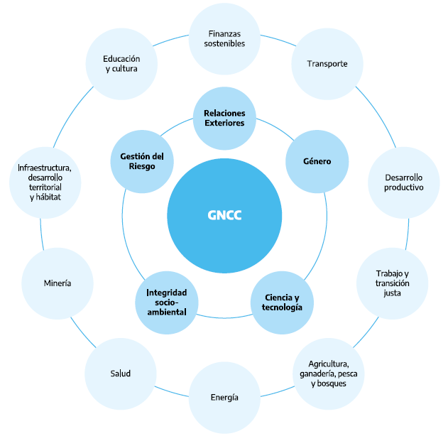
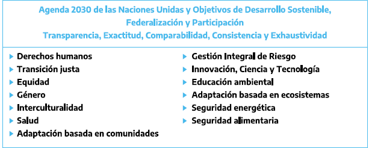
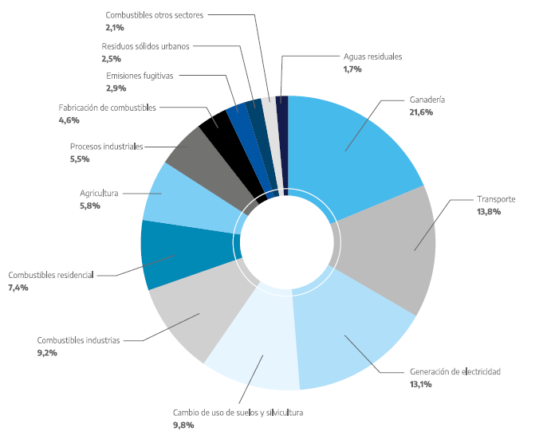
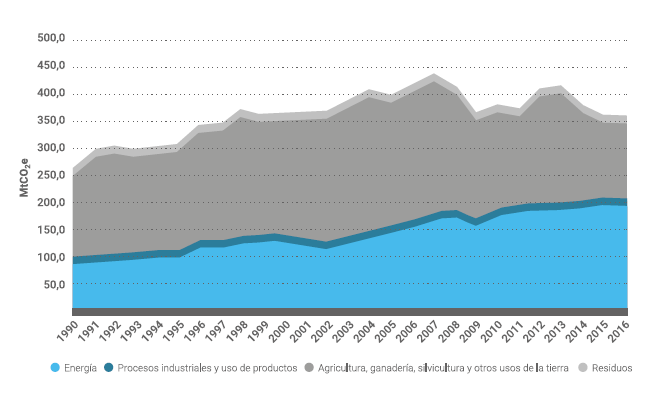

Fecha de Publicación: DICIEMBRE 2020
Cita recomendada: MAyDS, 2020. Segunda Contribución Determinada a Nivel Nacional de la República Argentina.
Ministerio de Ambiente y Desarrollo Sostenible, República Argentina.
La pandemia nos ha obligado a reflexionar sobre la importancia de la salud humana y su interrelación con la salud del planeta. El cambio climático es una realidad que está afectando a la humanidad en su conjunto por lo que requiere una acción inmediata y coordinada de los líderes de todo el mundo.
La reconstrucción mundial de la pos-pandemia es la oportunidad que tenemos para avanzar en este sentido, en donde la cooperación internacional y el multilateralismo inevitablemente juegan un rol protagónico. “Reconstruirnos mejor” es la consigna que nos moviliza hacia un desarrollo integral y sostenible en un marco de transición justa que nos permita ponernos de pie y salir mejores de esta crisis.
La República Argentina reafirma su compromiso con el Acuerdo de París, a la luz de la ciencia, y adopta al cambio climático como política de Estado. Por este motivo, a pesar de la situación económica y social derivada de un endeudamiento insostenible y de la re- cesión por la pandemia del COVID-19, hemos decidido adelantar la presentación de la Segunda Contribución Nacional en el año 2020.
Nuestro país paga un alto precio por el impacto del cambio climático en su territorio y en su estructura social y productiva, y hace un enorme esfuerzo en acciones de mitigación y adaptación cuyo monto asciende a un estimado de USD 15.000 millones con financiamiento internacional. Aunque ambicioso, esto es insuficiente. Es imperioso un mayor compromiso y cooperación por parte de los países más desarrollados para ampliarlo.
Con verdadera convicción, asumimos los siguientes compromisos, que orientarán la política y la acción climática argen- tina en los próximos años:
En primer lugar, y en respuesta al llamado a aumentar la ambición climática, hemos definido, con miras al 2030, una meta que limitará las emisiones de gases de efecto invernadero a un nivel 26% inferior a la Contribución Determinada Nacional previamente comprometida en 2016. Adicionalmente, esta nueva Contribución incluye la Comunicación de Adaptación, reforzando la importancia que reviste esta problemática para países como la Argentina.
En segundo lugar, nos comprometemos a presentar nuestra estrategia de desarrollo con bajas emisiones a largo plazo, con el objetivo de alcanzar un desarrollo neutral en carbono en el año 2050.
En tercer lugar, en cumplimiento de la Ley Nacional de “Presupuestos Mínimos de Adaptación y Mitigación al Cambio Climático Global”, trabajaremos a través de nuestro Gabinete Nacional de Cambio Climático, en la elaboración de un Plan Nacional de Adapta- ción y Mitigación claro y ambicioso, el cual guiará las acciones y los acuerdos necesarios para cumplir con nuestros compromisos.
Asumamos juntos el desafío de impulsar una transformación justa, ambiciosa y decididamente inclusiva, como forma de “reconstruirnos mejor”, conscientes de la responsabilidad individual y colectiva respecto al ambiente.
Trabajemos solidariamente en el diseño de paquetes de reconstrucción que prevean medios de implementación que con- sideren las responsabilidades comunes pero diferenciadas, fundadas genuinamente en las circunstancias de cada país.
Promovamos –en ese mismo espíritu de solidaridad- un diálogo de alto nivel sobre acceso equitativo a medios de imple- mentación, tales como recursos financieros, transferencia de tecnología y construcción de capacidades para la consecu- ción de los compromisos climáticos.
Como enseña el Papa Francisco, “abramos nuestros ojos y nuestros corazones para actuar con una nueva sensibilidad”. El planeta nos dice basta. Asumamos la responsabilidad histórica de convertirnos en artífices de un mundo mejor, recons- truido sobre los sólidos pilares de un desarrollo ambientalmente sostenible, innovador, solidario e inclusivo.
Esta nueva Contribución Determinada a Nivel Nacional (NDC) es un compromiso de incrementar la ambición climática, lo que confirma nuestra firme decisión de lograr una transición justa hacia un desarrollo integral y sostenible. La República Argentina manifiesta así su voluntad concreta de contribuir a la acción climática de manera decidida y urgente.
Hace falta una nueva conciencia. El cambio climático es un hecho concreto que se traduce en la reducción del caudal de agua en la cuenca del Paraná (la principal vía navegable del MERCOSUR), en las pérdidas de producción agropecuaria o en el récord de temperatura de 20 °C en la Antártida. Es algo que se evidencia en las sequías pronunciadas en diferentes regiones del país, en el aumento de los incendios forestales y de pastizales, en los procesos de desertificación de los suelos, en el incremento de los eventos climáticos pronunciados y en la aparición de enfermedades zoonóticas que tienen vínculo con la deforestación, la destrucción de hábitats naturales, entre otras señales de agotamiento de un modelo de desarrollo que descarta personas y bienes.
Para cuidar nuestra casa común y proteger a nuestro pueblo, no podemos hacernos los distraídos frente al cambio climá- tico o desconocer que sus consecuencias requieren acciones concretas por parte del Estado. Por eso, esta segunda NDC incluye ejes de implementación, como la promoción de la transición energética, el transporte sostenible, la preservación de ecosistemas (bosques, humedales, océanos, entre otros), la transformación productiva sostenible (en agricultura, ga- nadería, industria y servicios) y la mejora en la gestión integral de residuos.
Asimismo, para adaptarnos a los nuevos escenarios climáticos, se plantea fortalecer la sensibilización, la construcción de capacidades y la implementación de medidas de reducción de vulnerabilidad en las comunidades, la infraestructura y los sistemas productivos.
La meta consiste en no exceder las 359 megatoneladas de dióxido de carbono equivalente al año 2030. Honrar este compromiso será un desafío importante que demandará la construcción colectiva de una visión de largo plazo de país orientada al bien común.
La presente NDC se elaboró en el marco del Gabinete Nacional de Cambio Climático (GNCC), espacio formal de trabajo interinstitucional que tiene como objetivo la elaboración y el diseño de políticas públicas en materia de cambio climático, mediante la articulación estratégica entre las distintas áreas del gobierno nacional, los gobiernos subnacionales y los actores de la sociedad civil.
Necesitamos repensar el modo en que estamos haciendo las cosas. Solo el diálogo fraterno nos permitirá asegurar una transición justa que permita integrar al ambiente en el desarrollo, asegurando que nadie se quede atrás.
Este desafío que asumimos requiere que modifiquemos nuestros estilos de vida, que adoptemos prácticas de producción y consumo sostenible, que redefinamos nuestros lazos con la naturaleza entendiendo que somos parte de ella y que innovemos para reconstruir mejor a nuestro país y a nuestro planeta a fin de asegurar condiciones para el progreso de nuestro pueblo.
La República Argentina adopta para su gobierno la forma representativa, republicana y federal. Está integrada por 23 provincias y la Ciudad Autónoma de Buenos Aires (CABA). Su superficie total es de 3.761.274 km2, de los cuales el 74% corresponde a la porción continental y el 26% al Continente Antártico (incluyendo las Islas Orcadas del Sur) y las islas australes (Malvinas, Georgias del Sur y Sándwich del Sur)1 . Asimismo, los espacios marítimos argentinos2 repre- sentan una superficie de 6.683.000 km2, en adición a los espacios terrestres. En el año 2020, la población estimada es del orden de los 45 millones de habitantes, los cuales se concentran mayoritariamente en los principales centros urbanos del país.
El país cuenta con diversos y abundantes recursos naturales. Sus vastas extensiones de tierra fértil han determinado históricamente el desarrollo de las cadenas de producción agrícola y ganadera que sostienen la producción de alimentos y biocombustibles. Asimismo, es rico en recursos energéticos, entre los cuales se encuentran los hidrocarburíferos, hi- dráulicos, eólicos, solares, además de yacimientos de uranio.
La heterogeneidad en materia de disponibilidad de recursos tiene su correlato en la estructura productiva del país, destacándose la inserción de distintos sectores exportadores -en particular del sector agroalimentario- en las ca- denas de valor globales y regionales. Cabe mencionar que la extensión continental del país lleva implícita una sig- nificativa demanda de transporte de larga distancia, tanto de pasajeros como de cargas. Así, las circunstancias nacionales geográficas, climáticas, demográficas e institucionales explican las principales actividades económicas y su ordenamiento territorial.
Todo lo anteriormente descripto se traduce en una determinada matriz de emisiones por fuentes y absorción por sumi- deros, que en el año 2016 implicó una emisión neta total de 364 millones de toneladas de dióxido de carbono equivalente (MtCO2e), reflejada en el Inventario Nacional de Gases de Efecto Invernadero.
Argentina es un país altamente vulnerable, que necesita adaptarse, dado que posee gran diversidad de zonas susceptibles a los efectos del cambio climático. Ejemplo de ello son sus zonas costeras bajas; áridas y semiáridas; con cobertura fo- restal y expuestas al deterioro forestal; propensas a desastres; expuestas a la sequía y desertificación; y con ecosistemas frágiles, incluidos los montañosos.
La República Argentina se compromete a una meta absoluta e incondicional, aplicable a todos los sectores de la economía, de no exceder la emisión neta de 359 MtCO2e en el año 2030. Además, para el mismo año, habrá lo- grado disminuir la vulnerabilidad, aumentar la capacidad de adaptación y fortalecer la resiliencia de los diferentes sectores sociales, económicos y ambientales a través de medidas de concientización y construcción de capaci- dades que le permitan al país y su población responder solidariamente al desafío urgente de proteger el planeta.
Esta Segunda Contribución Determinada a Nivel Nacional (NDC, por su sigla en inglés) refleja un tratamiento equilibrado y una mejora en los pilares básicos de la lucha contra el cambio climático. En tal sentido, la República Argentina incrementa su compromiso respecto a la meta de mitigación presentada en 2016, incorpora una meta de adaptación en conformidad con el artículo 7.1 del Acuerdo de París, e incluye una mención a la necesidad de contar con los medios de implementa- ción suficientes para hacer frente al desafío del cambio climático, en línea con su compromiso de promover un desarrollo integral y sostenible en el marco de una transición justa.
La nueva meta es ambiciosa, ya que equivale a una disminución total del 19% de las emisiones hacia 2030 en compara- ción con el máximo histórico de emisiones alcanzado en el año 20073 , y una reducción del 25,7% respecto de la NDC an- terior. Asimismo, y en cumplimiento con el artículo 4.4 del Acuerdo de París, la meta es absoluta, incondicional y aplicable a todos los sectores de la economía.
Esta Segunda NDC es a un mismo tiempo justa y equitativa, en tanto el país mantendría en 2030 un porcentaje de participación de 0,9% respecto de las emisiones globales4 . Adicionalmente, en esta Segunda NDC se han realizado esfuerzos para balancear el enfoque entre las componentes de mitigación, adaptación y medios de implementación, estableciendo sinergias entre los mismos. En materia de transparencia, y en cumplimiento con el párrafo 4.8 del Acuerdo de París y con lo establecido en el párrafo 7 de la decisión 4/CMA 1., se incorporan mejoras al presentar la Información necesaria para la Claridad, la Transparencia y la Comprensión.
Hacia 2030, la República Argentina llevará adelante una transición energética, centrando los esfuerzos en el fo- mento de la eficiencia energética, las energías renovables y el impulso de la generación distribuida, utilizando en este período el gas natural como combustible de transición. Se habrán puesto en funcionamiento nuevas centrales nucleares e hidroeléctricas y se desarrollará la cadena productiva del hidrógeno. Para la promoción de sistemas de transporte sostenible, se habrán implementado políticas derivadas del enfoque Evitar-Cambiar-Mejorar, fo- mentado en particular, la eficiencia energética y la mayor utilización de gas natural, hidrógeno, electricidad y bio- combustibles. Se habrán fortalecido las políticas de protección de ecosistemas (bosques, humedales, océanos, entre otros). En materia forestal, se habrá logrado reducir drásticamente la deforestación y se habrán impulsado los bosques cultivados. Por su parte, la ganadería y la agricultura habrán incrementado sus rendimientos por la utilización de nuevas tecnologías basadas en la economía del conocimiento, la diversificación de los sistemas y prácticas productivas, aumentando la producción sin expansión significativa de la superficie efectiva de tierra cultivada. En el sector industrial y de servicios se habrá implementado un cambio estructural para la producción sostenible, en articulación con el sector privado. Finalmente, se habrá generado la infraestructura necesaria para que la gestión integral de residuos sólidos se realice de manera adecuada, en un marco de prácticas innovadoras utilizando a la economía circular como una de las herramientas disponibles, entre otras, para contribuir al logro del desarrollo sostenible.
A través de esta NDC se presenta la Segunda Comunicación de Adaptación. Allí se establece que se aumentará la ca- pacidad de adaptación, fortaleciendo la resiliencia y disminuyendo la vulnerabilidad en los distintos sectores sociales, económicos y ambientales. Para lograrlo se proponen 35 medidas de adaptación divididas en transversales y sectoriales. Estas medidas priorizan a las comunidades y grupos sociales en situación de vulnerabilidad, e incorporan el enfoque de género y la equidad intergeneracional.
El compromiso asumido contempla como prioridad erradicar la pobreza mediante el fomento de una transición justa, abordando las necesidades de la totalidad de la población de modo de garantizar un desarrollo integral y sostenible, sin afectar a las generaciones futuras.
En esta línea, la Segunda NDC establece 15 ejes rectores que guiarán el diseño, la implementación y el monitoreo de todas las acciones de adaptación y mitigación nacionales:
La articulación intra e interinstitucional, así como la participación pública, fueron ejes centrales en el proceso de elaboración de esta Segunda NDC. Este documento es el resultado del trabajo conjunto de 15 grupos de trabajo de la administración pública nacional, mesas de articulación federal y reuniones de trabajo con diferentes sectores de la sociedad que coordinados desde el Gabinete Nacional de Cambio Climático (GNCC) permitieron lograr el consenso necesario para la construcción colectiva de una visión de la República Argentina al 2030.
Por otra parte -teniendo en consideración las circunstancias y capacidades nacionales- para lograr un crecimiento econó- mico inclusivo en el marco del desarrollo sostenible y a la vez profundizar y acelerar la lucha contra el cambio climático, resulta fundamental el acceso a medios de implementación. En este sentido, si bien la implementación de esta NDC no es contingente al apoyo internacional, la República Argentina entiende que el apoyo que puedan brindar los países desa- rrollados para concretar su ambición nacional generará significativos beneficios globales. Por este motivo, esta Segunda NDC incluye un análisis y priorización inicial de las necesidades de apoyo internacional.
Finalmente, se considera que el seguimiento y monitoreo doméstico del progreso de la Segunda NDC es esencial para alcanzar la efectiva implementación de la acción climática, tanto a nivel nacional como global.
Cabe recordar que, según lo establecido en el artículo 4.9 del Acuerdo de París y en consonancia con la Ley N° 27.520 de Presupuestos Mínimos de Adaptación y Mitigación al Cambio Climático Global (Ley de Cambio Climático), la Segunda NDC de la República Argentina se actualizará cada 5 años, atendiendo a un proceso de mejora continua en cuanto a la exactitud, transparencia y robustez de la información vinculada a las políticas de cambio climático.
El cumplimiento de esta Segunda NDC se convierte así en un hito en el camino de la República Argentina hacia una tran- sición justa, resiliente, sostenible, solidaria, inclusiva e innovadora, en la que ninguno de sus ciudadanos y ciudadanas se quede atrás. En esa línea, y con miras a mediados de siglo, el país presentará su estrategia de desarrollo resiliente y de bajas emisiones a largo plazo en la próxima Conferencia de las Partes a realizarse en Glasgow en 2021.
Argentina adopts for itself a republican, representative and federal government, made up of 23 provinces and the Au- tonomous City of Buenos Aires. Its total area is 3,761,274 km2, of which 74% corresponds to the continental portion and 26% to the Antarctic Continent (including the South Orcadas Islands) and the southern islands (Malvinas, South Georgia and South Sandwich)5 . Likewise, the Argentine maritime space6 represents an area of 6,683,000km2 in addition to land spaces. In the year 2020, its population is estimated at 45 million inhabitants, mainly concentrated in the metropolitan area of Buenos Aires, the provincial capitals and other urban centers across the country.
The Argentine Republic is endowed an abundance of diverse natural resources. Its large extensions of fertile land have historically determined the development of the agriculture and livestock production chains which sustain food and biofuel production. Moreover, it is rich in energetic resources, among which are hydrocarbon, uranium, wind, hydraulic, and solar. Its productive structure is heterogeneous, within which the insertion of different export sectors in regional and global value chains can be highlighted, particularly the agricultural and food sector. The great continental extension of the Argentine Republic entails an important demand for long-distance transportation, both for passengers and freight. The national geographic, climatic, demographic and institutional circumstances explain the main economic activities and, therefore, the land use planning, based on the availability of resources.
This in turn results in a specific matrix of greenhouse gasses emissions by sources and absorption by sinks, which reached a total net emission of 364 million tons of carbon dioxide equivalent (MtCO2e) by 2016, as reflected in the National Green- house Gases Inventory. The Argentine Republic is a highly vulnerable country that needs to adapt given that it has a great diversity of areas susceptible to the effects of climate change: low-lying coastal areas; arid and semi-arid; with forest cover and exposed to forest deterioration; prone to disasters; exposed to drought and desertification; and with fragile ecosys- tems, including mountain ecosystems.
The Argentine Republic is committed to an absolute, economy wide and unconditional goal of not exceeding the net emis- sion of 359 million tons of carbon dioxide equivalent (MtCO2e) in 2030. In addition, it establishes that, by the same year, the Argentine population will be aware of the adverse effects of climate change and the corresponding adaptation measures and will have built capacities that allow them to respond in solidarity to the urgent challenge of protecting the planet.
This Second Nationally Determined Contribution (NDC) reflects an improvement and a balanced treatment in the basic pillars of the fight against climate change. In this regard, the Argentine Republic increases its commitment to the mit- igation goal presented in 2016, incorporates an adaptation goal in accordance with article 7.1 of the Paris Agreement, and includes a mention of the need to have sufficient means of implementation to face the challenge of climate change, demonstrating thus its intention to promote sustainable development in the frame of inclusivity.
This new goal is ambitious, since it is equivalent to a total decrease in emissions of 19% by 2030, compared to the histor- ical peak reached in 20077 , and a reduction of 25,7% compared to the previous NDC submitted in 2016. Furthermore, the proposed goal is absolute, economy wide and unconditional, in compliance with article 4.4 of the Paris Agreement. It is also fair and equitable, with its fulfillment, Argentina would hold a participation of 0.9% with respect to global emissions6. In addition, in this Second NDC, efforts have been made towards a balanced approach between the components of miti- gation, adaptation and means of implementation, fostering synergies between them. In terms of transparency, improve- ments are incorporated through the presentation of the Information necessary for Clarity, Transparency and Understand- ing in compliance with paragraph 4.8 of the Paris Agreement and with the provisions of paragraph 7 of decision 4 / CMA 1.
Towards 2030, the Argentine Republic will carry out an energy transition, focusing its efforts on promoting energy effi- ciency, renewable energies and distributed generation, using natural gas as a transition fuel during this period. In turn, the hydrogen production chain will be developed, while new nuclear and hydroelectric plants will be put into operation. For the promotion of sustainable transport systems, policies derived from the Avoid-Shift-Improve approach will have been implemented, in particular promoting energy efficiency and the greater use of natural gas, hydrogen, electricity and biofu- els. Ecosystem protection policies (forests, wetlands, oceans, among others) will have been enhanced, deforestation will have been drastically reduced and cultivated forests will have been boosted. Livestock and agriculture production will have increased their yields due to the use of new technologies based on the knowledge economy and the diversification of pro- duction systems and practices, enabling greater total production without significant expansion in the cropland area. In the manufacturing, construction and services sectors, a structural change will have been implemented towards sustainable production in coordination with the private sector. Finally, the necessary infrastructure will have been built so that integral management of solid waste is adequately executed, within a framework of innovative practices that will regard circular economy as one in a series of available tools for the achievement of sustainable development.
Through this NDC, the Second Adaptation Communication is submitted. It establishes that adaptation capacity will be increased, strengthening resilience and reducing vulnerability in the different social, economic and environmental sectors. In order to address the territorial, socioeconomic and environmental vulnerabilities that the Argentine Republic faces, 35 adaptation measures will be carried out in seven sectors. They will prioritize communities and social groups in situations of vulnerability incorporating a gender and intergenerational equity approach.
This commitment contemplates the eradication of poverty by the promotion of a just transition, addressing the needs of the entire population and guaranteeing integrated and sustainable development, without affecting future generations. In line with this, the Second NDC has been built based on 15 principles that guide the design, implementation , monitoring and evaluating of all national adaptation and mitigation actions:
Articulation and participation were central in the process of preparing this Second NDC. This document is the result of the joint work of 15 working groups of the national public administration, roundtables of federal articulation and working meetings with different sectors of society. All with the coordination of the National Cabinet of Climate Change (GNCC), this approach allowed to achieve the necessary consensus for the construction of a collective vision of the Argentine Republic by 2030.
Taking into consideration the national capabilities and circumstances and capacities, the accomplishment of inclusive economic growth within the framework of sustainable development and the fight against climate change requires the provision of means of implementation. Although the implementation of this NDC is not contingent on international cooper- ation, the Argentine Republic understands that the support of developed countries in the fulfillment of its national ambition will bring about significant benefits globally. An initial analysis of needs and their priority order has been included in this Second NDC.
Follow-up and monitoring of the progress of the Second NDC is essential to achieve the effective implementation of cli- mate action at both the national and global levels. As established in Article 4.9 of the Paris Agreement and in accordance with Law 27,520 on National Law on Adaptation and Mitigation on Climate Change, the Second NDC of the Argentine Republic will be updated every 5 years, pursuing a continuous improvement process in terms of accuracy, transparency and robustness of information related to climate change policies.
Compliance with this Second NDC thus becomes a milestone on the path of the just transition towards a resilient, sus- tainable, solidary, inclusive and innovative Argentine Republic where none of its citizens is left behind. With a view to the middle of the century, the country will present its long-term low-emission and resilient development strategy (LTS) at the next Conference of the Parties to be held in Glasgow in 2021.
La República Argentina ha participado de manera activa e ininterrumpida en las negociaciones internacionales en materia ambiental en general, y en las referidas al cambio climático en particular. En tal sentido, a través de la Ley N° 24.295, san- cionada en diciembre de 1993, nuestro país aprobó la Convención Marco de las Naciones Unidas sobre el Cambio Climá- tico (CMNUCC) como país no-Anexo I. En la misma línea, mediante la Ley N° 25.438 de junio de 2001 aprobó el Protocolo de Kyoto, así como el Acuerdo de París por medio de la Ley N° 27.270 de septiembre de 2016.
Como resultado, la República Argentina presentó en octubre de 2015 su Contribución Prevista y Determinada a Nivel Nacional (iNDC). Atendiendo a los principios, disposiciones y estructura de la CMNUCC; a los artículos 3, 4, 7.10, 7.11 y 13 del Acuerdo de París; y a lo establecido en las Decisiones 1/CP.19, 1/CP.20, 1/CP.21, 1/CP.24, 4/CMA.1, 9/CMA.1 y 18/ CMA.1 la iNDC fue revisada y actualizada en 2016, y presentada en el marco de la 22ª Conferencia de las Partes (COP 22) en Marruecos, dando cumplimiento a lo requerido por el párrafo 24 de la Decisión 1/CP.21. En esa versión actualizada, la
República Argentina estableció una meta absoluta de no exceder la emisión neta de 483 MtCO2e en el año 2030, aumen- tando su nivel de ambición y transparencia respecto de la primera presentación. Asimismo, como parte de esta NDC se presentó la Primera Comunicación de Adaptación.
Teniendo en consideración los elementos principales establecidos en el artículo 2 del Acuerdo de París, la presente Se- gunda NDC de la República Argentina se estructura incorporando componentes de adaptación, mitigación, y medios de implementación necesarios, así como también mecanismos de monitoreo, evaluación y actualización. Asimismo, y a los efectos de una mayor claridad contextual, se proporciona información adicional sobre las circunstancias nacionales y la visión de desarrollo del país al año 2030.
En respuesta al llamado a aumentar la ambición climática, en esta Segunda NDC la República Argentina presenta una nueva meta absoluta de mitigación al año 2030, expresada en millones de toneladas de dióxido de carbono equivalente (MtCO2e) que se complementa con una meta de adaptación, para dar una respuesta integral a la crisis climática.
A los efectos de una mayor claridad se incluye en esta Segunda NDC la información necesaria para la Claridad, la Transpa- rencia y la Comprensión, según lo establecido en la Decisión 18/CMA.1, y para la Segunda Comunicación de Adaptación, conforme a lo establecido en los artículos 7.10 y 7.11 del Acuerdo de París.
La República Argentina adopta para su gobierno la forma representativa, republicana y federal. Está integrada por 23 provincias y la Ciudad Autónoma de Buenos Aires (CABA). Su superficie total es de 3.761.274 km2, de los cuales el 74% corresponde a la porción continental y el 26% al Continente Antártico (incluyendo las Islas Orcadas del Sur) y las islas australes (Malvinas, Georgias del Sur y Sándwich del Sur)6 . Asimismo, los espacios marítimos argentinos7 representan una superficie de 6.683.000 km2 en adición a los espacios terrestres. La extensión del país permite que existan condicio- nes térmicas que varían de cálidas en el norte, hasta frías en el extremo sur y en las alturas de las áreas montañosas y de la Cordillera de los Andes. Posee una gran biodiversidad -actualmente amenazada por la crisis climática- dividida en 18 ecorregiones, ante lo cual es de alta prioridad su conservación.
El país cuenta con un extenso espacio marítimo de alto grado de complejidad hidrológica y geomorfológica que ofrece diversos hábitats para gran variedad de especies. La Cuenca del Plata, la segunda más importante de Amé- rica del Sur por su extensión geográfica y el caudal de sus ríos, también se integra al territorio nacional brindando importantes servicios ecosistémicos y recursos pesqueros de interés comercial que sustentan pesquerías de relevancia global.
Al año 2020, la República Argentina posee una población estimada en 45 millones de habitantes, correspondiendo un 49% a varones y un 51% a mujeres8 , con una tasa anual de crecimiento total de población de 0,958%9 . Existen en el país 26 etnias de pueblos originarios que, junto a la población afrodescendiente, representaban en el 2010 el 2,71% de la población total10 . El 92% de la población es urbana11 y un 39% se asienta en la Región Metropolitana de Buenos Aires12 .
El país registró en 2019 un valor de 0,714 en el Índice de Desarrollo Humano ajustado por desigualdad13 . Asimismo, la población por debajo de la línea de pobreza por ingresos en 2020 ascendió al 40,9%, con un 10,5% de la población por debajo de la línea de indigencia14 , y concentrándose el porcentaje más alto para ambos indicadores en la franja etaria de 0 a 14 años15 .
La República Argentina cuenta con abundantes y diversos recursos naturales. Sus grandes extensiones de tierra fértil y el desarrollo de las cadenas de producción agrícola y ganadera sostienen la producción de alimentos y biocombusti- bles. Asimismo, su extenso litoral marítimo y ricas aguas continentales permiten que se desarrolle la industria pesquera. Cuenta además con importantes reservas de gas, minerales y metales estratégicos, necesarios para la transición hacia una economía baja en carbono basada en generación de energías renovables, el abastecimiento asequible de energía y el transporte sostenible.
Por sus características geográficas y climáticas, la Argentina presenta un alto potencial para la generación de energías renovables, ya que cuenta con buenos niveles de radiación en la región noroeste y vientos apropiados en la región patagó- nica, a lo que se agrega un significativo potencial en materia de producción de hidrógeno.
El Producto Interno Bruto (PIB) per cápita fue de USD 12.069 en 2018, USD 9.962 en 2019, y USD 8.317 en los dos primeros trimestres de 202016 .
La estructura productiva del país se caracteriza por su heterogeneidad y diversidad, destacándose la inserción de sectores exportadores en las cadenas regionales y globales de valor, en particular del sector agroalimentario.
Los principales sectores económicos internos son el industrial -en especial el relacionado al procesamiento de alimentos- seguido por los de servicios, transporte, comunicaciones, las actividades inmobiliarias y la agricultura.
Por su parte, el comercio exterior está fuertemente liderado por la exportación de productos primarios y manufacturas de origen agropecuario (MOA). En efecto, según cifras del año 2019, los principales complejos exportadores fueron el olea- ginoso (29% de participación sobre el total), el cerealero (15,5%), el automotriz (10,9%), el petrolero-petroquímico (7,8%), y el minero metalífero (7,8%)17 .
En tanto en el sector doméstico de servicios sobresale el financiero, con un desarrollo reciente de servicios basados en el conocimiento y la innovación con un alto componente de nuevas tecnologías, lo que se suma a la expansión internacional del sector turismo como generador de divisas.
Cabe asimismo señalar, que la metodología con la que se mide el PIB no incorpora el Trabajo Doméstico y de Cuidados No Remunerado (TDCNR). En este sentido, a partir del análisis llevado a cabo por la Dirección Nacional de Economía, Igualdad y Género, se determinó que el aporte del TDCNR al PIB es de aproximadamente 15,9%18 .
El 2020 ha sido un año particularmente complejo para el país ya que sufrió el impacto de la pandemia COVID-19 en el marco de un proceso recesivo que se inicia en 2018, con el agravante de un fuerte endeudamiento externo. Al tercer tri- mestre de 2020, la economía nacional acumula una caída del PIB del 11,8%19 , situación que impacta en los indicadores sociales y de empleo.
Ante esta situación, el gobierno nacional priorizó la protección de la vida y la salud de la población, fortaleciendo para ello el sistema de salud a través de inversiones en el sector. Al mismo tiempo se desplegaron políticas de asistencia, tanto a empresas como a personas, en concordancia con la heterogeneidad del mercado laboral argentino, en el que coexisten sectores formales e informales, con asimetrías en términos de distribución del ingreso.
Así, la República Argentina se vio inmersa en el doble desafío que supuso el responder a la pandemia al mismo tiempo que se llevaba adelante un proceso de reestructuración de la deuda soberana20 .
En este marco y a pesar de la difícil situación económica y social, el gobierno nacional decidió adelantar la presentación de la segunda NDC -prevista para el año 2021- al presente año, a fin de contribuir a la acción climática global y alinear los paquetes de recuperación económica a los compromisos establecidos en el Acuerdo de París.
El sistema argentino de salud se caracteriza por brindar una cobertura universal, lo cual significa que quien resida o tran- site el suelo nacional puede recibir asistencia gratuita en los centros públicos de atención a la salud.
La mortalidad infantil por 1.000 nacidos vivos es de 9,3; habiéndose logrado un descenso significativo entre 2002-201521 pasando de 16,8 a 9,7 y manteniéndose estable desde entonces.
La educación estatal es gratuita en todos los niveles, incluido el universitario. El período de escolaridad obligatoria es de 14 años y el porcentaje de analfabetismo en la población de 10 años es de 1,9%. con tendencia decreciente ya que en 1991 era 3,7% y en 2001, 2,6%22 .
En cuanto al sistema científico tecnológico, el histórico nivel educativo de la población ha permitido que la ciencia argen- tina haya tenido tradicionalmente un alto nivel de desarrollo, convirtiéndose en un importante activo nacional con fuerte potencial de expansión.
Como fuera mencionado, la Argentina es pródiga en recursos naturales energéticos, entre los cuales se cuentan los hidro- carburíferos, hidráulicos, eólicos y solares, así como también yacimientos de uranio.
En 2019, la oferta interna total de energía primaria alcanzó los 81 mil ktep. La energía producida localmente proviene en un 87%, de origen fósil, correspondiendo un 54% a gas natural, 31% a petróleo y derivados, y 1% a carbón mineral. Las ener- gías hidráulica y nuclear aportan un 4% y 3%, respectivamente, y las renovables no convencionales (biomasa, pequeños aprovechamientos hidroeléctricos, eólica y solar) un 6%.23
Los combustibles fósiles se utilizan principalmente para la producción de energía eléctrica de origen térmico (no nuclear), para el consumo residencial e industrial (gas distribuido por redes), y para el transporte y la industria (líquidos refinados). La demanda es traccionada por el crecimiento poblacional, la evolución de la economía y la gran extensión territorial, lo cual impacta en el consumo de combustibles para transporte. Los recursos energéticos están localizados mayoritaria- mente distantes de los centros de consumo, por lo que se necesita una extensa infraestructura de transporte y distribu- ción de energía para abastecer la demanda.
El 6% de la generación de electricidad en el año 2019 fue en base a fuentes renovables no convencionales. La generación eólica representa el 42% de esa energía, la solar 3%, los pequeños aprovechamientos hidroeléctricos 43% y otras renova- bles no convencionales 12%. La producción de biodiesel alcanzó los 2,1 millones de toneladas en 2019, de las cuales un 47% se destinó a la exportación, mientras que la producción de bioetanol alcanzó los 1,07 millones de m3 24 .
En 2019, el sector transporte representó el 33% de la demanda energética del país, el sector residencial el 26%, el sector industrial el 26%, el sector agropecuario el 8% y los sectores comercial y público el 7%.25
En el sector residencial las mayores demandas están asociadas con la concentración poblacional y las condiciones cli- máticas. Según el Censo Poblacional del 2010, a nivel residencial, el 98% de los hogares tenía electricidad por red y el 57% utilizaba como principal combustible para cocinar al gas natural de red y el 40% GLP (gas licuado de petróleo) en sus distintas presentaciones comerciales, garrafa, tubo o a granel26 .
En el sector industrial las mayores demandas provienen de las industrias vinculadas con el procesamiento de alimentos, la elaboración de bebidas y tabaco, la producción de hierro y acero, la industria de minerales no metálicos (incluyendo cal y cemento), los productos químicos, la producción de pulpa, papel e imprenta y la industria de metales no ferrosos (incluyendo aluminio). En 2019, el sector industrial fue el segundo mayor consumidor de gas natural, luego de las centrales eléctricas.
La significativa participación del sector transporte en la demanda de energía se explica por la extensión continental de la República Argentina, que conlleva una importante demanda de transporte de larga distancia, tanto de pasajeros como de carga. Las actividades productivas están espacialmente distribuidas en el territorio nacional, mientras que los puertos, a través de los cuales se satisface la demanda internacional, así como las grandes ciudades desde donde surge la demanda interna, están concentrados en unas pocas locaciones del territorio nacional. Este consumo se abasteció en 2019 con un 39% de gasoil, un 36% de nafta, un 12% de gas natural, un 9% de biocombustibles y un 4% de otros combustibles27 .
La red vial se compone de unos 40 mil km de caminos nacionales28 , que constituyen la red troncal primaria, 189 mil km de rutas provinciales y aproximadamente 285 mil km de caminos administrados por los municipios, conformando la red vial terciaria. La movilidad urbana de pasajeros por ómnibus, vehículos particulares y ferrocarriles se concentra en el Área Metropolitana de Buenos Aires (AMBA29 ), que concentra más de un tercio de la población del país, y en las aglomeraciones urbanas de las provincias de Córdoba, Santa Fe, Mendoza y Tucumán. El parque automotor argentino es de 14 millones de vehículos, de los cuales 10,6 millones son automóviles, 2,6 millones utilitarios livianos, 678 mil son camiones de carga y 84 mil son buses para transporte de pasajeros30 .
Cabe aclarar además que en cuanto a los gases Hidrofluorocarbonos (HFCs) regulados por el Protocolo de Montreal y la enmienda de Kigali, la producción asciende a 5.200 toneladas anuales. Los principales consumidores de estos gases son el sector de fabricación y servicios de equipos de refrigeración y aire acondicionado, alcanzando el 89,4% del total31 .
En el año 2019, la superficie sembrada fue de 40.507.400 hectáreas totales, de las cuales 41,7% correspondió a soja; 23,4% a maíz y 17,1% a trigo32 . Esta actividad se complementa con el sector ganadero. En tal sentido, la actividad gana- dera se despliega principalmente en las extensas praderas de la región Pampeana, Espinal y Chaco húmedo, donde las existencias bovinas totalizaron unos 52,9 millones de cabezas en el año 202033 , en tanto que en 2019 se faenaron 13,9 millones de cabezas34 . Si bien la mayoría de la producción de carne bovina es para consumo interno, en 2018 un 28,4% de la producción se destinó a la exportación35 .
Por otra parte, la República Argentina cuenta con una extensa superficie de bosques nativos, que asciende a 53.654.545 hectá- reas36 . Debido a las diferentes condiciones geográficas, geológicas, topográficas y climáticas, existen distintos tipos de bosques nativos, los cuales se localizan fundamentalmente en siete regiones forestales: Selva Paranaense, Yungas, Parque Chaqueño, Espinal, Bosque Andino Patagónico, Monte y Delta e Islas del Río Paraná, cada una de ellas sometida a distintas presiones natu- rales y humanas. El porcentaje anual de pérdida de bosque nativo mostró una disminución desde la sanción de la Ley Nacional N° 26.331 de Presupuestos Mínimos para la Protección Ambiental de los Bosques Nativos en diciembre de 2007, pasando de un promedio de 368 mil ha/año durante el período 2002-2013 a un promedio de menos de 179 mil ha/año durante el período 2014- 201837 . En cuanto a bosques cultivados, el país cuenta actualmente con una superficie aproximada de 1,4 millones de hectáreas.
En la República Argentina el promedio de generación diaria de residuos para el año 2019 fue de 1,15 kg per cápita, lo que representó unas 49.300 toneladas diarias, y alrededor de 18 millones de toneladas anuales. A partir del análisis de la compo- sición de los RSU ingresados a los rellenos sanitarios, se destaca el contenido de materiales potencialmente compostables con porcentajes mayores al 40%, siendo factible la utilización de metodologías de tratamiento biológico para disminuir volu- men y masa de los residuos a ser enviados a disposición final. La proporción de residuos de papeles y cartones se mantiene entre el 13% y 20% del total. Los residuos plásticos pasaron de ser insignificantes en 1972 (del orden del 2-3 %), a representar entre un 15 y 20% a partir de 2005 hasta la actualidad. El vidrio mantiene una presencia con un valor sostenido en el tiempo del orden del 3 al 6%; mientras que los pañales y apósitos descartables presentan un crecimiento desde 2001, alcanzando valores del 11%. Con respecto a los valores de recuperación, la industria del papel y el cartón alcanza el 50%, mientras que la industria del reciclado plástico aporta menos del 10%. También se recuperan 1,2 millones de toneladas de acero. En el caso de la industria del vidrio, aún no se cuenta con suficientes datos confiables sobre las cantidades recuperadas o valorizadas.
Finalmente, en cuanto a los residuos peligrosos, su generación está íntimamente ligada al nivel de actividad industrial por lo que un crecimiento de la actividad será acompañado indefectiblemente de un mayor nivel de generación de estos desechos.
En el ámbito nacional, la Constitución Nacional reformada en 1994 consagra en su artículo 41 el derecho de todos los argen- tinos a un ambiente sano, equilibrado, apto para el desarrollo humano y para que las actividades productivas satisfagan las necesidades presentes sin comprometer las de las generaciones futuras, como así también el deber de preservarlo.
Asimismo, faculta al Congreso Nacional a dictar normas de presupuestos mínimos de protección ambiental, las cuales establecen una tutela ambiental uniforme para todo el territorio nacional en el marco de un país federal en el que las provincias y la Ciudad Autónoma de Buenos Aires conservan el dominio originario de sus recursos naturales y pueden dictar normativa complementaria. Estas normas regulan ciertas actividades a fin de promover el cuidado de los recursos naturales y el ambiente en general a través de la conservación, el manejo, el uso sostenible y la restauración de los eco- sistemas. Asimismo, garantizan el acceso a la información pública ambiental y la participación pública. A la fecha estánvigentes doce (12) leyes de presupuestos mínimos que son complementadas con otras normas específicas y con las correspondientes a los gobiernos subnacionales.
El derecho ambiental argentino se rige por principios que deben ser empleados al momento de interpretar y aplicar las normas. En particular, la Ley General del Ambiente N° 25.675 enumera los principios preventivo, precautorio, progresivo, de congruencia, de responsabilidad, de subsidiariedad, de sustentabilidad, de equidad intergeneracional, de solidaridad y de cooperación.
Como resultado del carácter federal del sistema de gobierno en la República Argentina, se crea en 1990 el Consejo Fe- deral de Medio Ambiente (COFEMA), como un organismo permanente para la concertación y elaboración de una política ambiental coordinada entre los Estados miembros (las provincias, la Ciudad Autónoma de Buenos Aires, y el Gobierno Nacional). A tal fin, el Poder Ejecutivo Nacional propone a la Asamblea del COFEMA el dictado de recomendaciones o resoluciones para la adecuada vigencia y efectiva aplicación de las leyes de presupuestos mínimos, las complementarias provinciales y sus reglamentaciones en las distintas jurisdicciones.
En diciembre de 2019 la República Argentina ratificó su compromiso político en la lucha contra el cambio climático al aprobar la Ley N° 27.520 de Presupuestos Mínimos de Adaptación y Mitigación al Cambio Climático Global (Ley de Cam- bio Climático)38 y su Decreto Reglamentario Nº 1030/202039 . Dicha ley reafirma y reglamenta los compromisos interna- cionales asumidos, y fortalece la política climática nacional y la planificación subnacional, estableciendo los presupuestos mínimos de protección ambiental para garantizar acciones, instrumentos y estrategias adecuadas de adaptación y miti- gación al cambio climático en todo el territorio nacional.
Esta norma complementa los principios establecidos en la mencionada Ley General del Ambiente, agregando el de res- ponsabilidades comunes pero diferenciadas a nivel internacional, la transversalidad del cambio climático en las políticas de Estado, la priorización de las necesidades de los grupos sociales en condiciones de vulnerabilidad al cambio climático, y la complementariedad de las acciones de adaptación con las de mitigación. Asimismo, institucionaliza el Gabinete Nacional de Cambio Climático (GNCC) como órgano de gobernanza nacional para el diseño coordinado y consensuado de políticas de adaptación y mitigación al cambio climático, y estipula la elaboración del Plan Nacional de Adaptación y Mitigación al Cambio Climático (PNAyMCC), definido como el conjunto de estrategias, medidas, políticas, e instrumentos desarrollados para dar cumplimiento a los objetivos de la ley. Paralelamente, establece la elaboración de los Planes de Respuestas Jurisdiccionales, que son los planes de adaptación y mitigación que deben elaborar las provincias y la Ciudad Autónoma de Buenos Aires. Crea además el Sistema Nacional de Información sobre Cambio Climático, como herramienta central de transparencia y promoción de la información.
La participación pública y el acceso a la información son objetivos clave planteados por la ley, los cuales deben ser enten- didos como prioritarios por la autoridad nacional y por las provincias al momento de implementar la normativa.
Por otra parte, en 1988, la Argentina firmó el Protocolo de Montreal relativo a las Sustancias que Agotan la Capa de Ozono, el cual fue ratificado el 18 de septiembre de 1990. En 2016, en la reunión celebrada en Ruanda, se aprobó la Enmienda de Kigali. En 2019 la Argentina ratificó esta enmienda, que tiene como objetivo reducir el consumo y la producción de los HFCs, las cuales, no obstante no ser sustancias que agotan la capa de ozono, sí son poderosos gases de efecto inverna- dero que se utilizan con frecuencia como sustitutos de las sustancias que agotan la capa de ozono.
En octubre de 2020, mediante la Ley N° 27.566, el Congreso de la Nación aprobó el Acuerdo Regional sobre el Acceso a la Información, la Participación Pública y el Acceso a la Justicia en Asuntos Ambientales en América Latina y el Caribe (Acuerdo de Escazú)40 . Dicho Acuerdo tiene por objeto “garantizar la implementación plena y efectiva en América Latina y el Caribe de los derechos de acceso a la información ambiental, participación pública en los procesos de toma de decisiones ambientales y acceso a la justicia en asuntos ambientales, así como la creación y el fortalecimiento de las capacidades y la cooperación, contribuyendo a la protección del derecho de cada persona, de las generaciones presentes y futuras, a vivir en un medio ambiente sano y al desarrollo sostenible”.
Por último, resulta relevante destacar que el país sancionó recientemente la denominada “Ley Yolanda” N° 27.59241 , la cual garantiza la formación integral y obligatoria en ambiente, con perspectiva de desarrollo sostenible y con especial énfasis en cambio climático, para todas las personas que se desempeñen en la función pública, en los distintos poderes y niveles de go- bierno nacional. Además, el Poder Ejecutivo envió al Congreso Nacional un proyecto de ley sobre Educación Ambiental Integral que busca incorporar los nuevos paradigmas de la sostenibilidad ambiental a los ámbitos de la educación formal y no formal.
La República Argentina considera al cambio climático como una política de Estado, por lo que estructura su esquema de gobernanza entendiendo la gravedad y urgencia de enfrentarlo, el carácter multidimensional y transversal de sus im- pactos, y la necesidad de generar un profundo cambio de paradigma en el modelo de desarrollo. Es en este sentido que la Ley de Cambio Climático institucionaliza Gabinete Nacional de Cambio Climático, presidido por el Jefe de Gabinete de Ministros, dentro del cual se han establecido cuatro instancias de trabajo: Reunión de Ministros, Mesa de Puntos Focales, Mesa de Articulación Provincial y Mesa Ampliada.
Esta Segunda NDC, como parte de la política climática, fue elaborada a través de la articulación entre todas las instancias del GNCC, dando como resultado un nuevo compromiso consensuado de manera participativa, interinstitucional e interjurisdiccional.
Es la instancia de trabajo en la que se encuentran presentes las máximas autoridades nacionales ministeriales de las diversas áreas de la Administración Pública Nacional. Es presidida por el Jefe de Gabinete de Ministros y se compone de todas las carteras ministeriales del Poder Ejecutivo Nacional.

Figura 1. Grupos de Trabajo de Puntos Focales del Gabinete Nacional de Cambio Climático.
La Comisión técnica de Cambio Climático del COFEMA participa en la Mesa de Articulación Provincial del GNCC. Esta comisión cuenta con la representación de cada una de las jurisdicciones a través de un punto focal titular y uno alterno, los cuales participan de las reuniones generales, regionales o bilaterales, identificando necesidades comunes e intercam- biando experiencias en la búsqueda conjunta y asociativa de soluciones que van más allá de los límites territoriales. A través de este espacio de articulación se llevan a cabo actividades que favorecen el desarrollo de los Planes de Respuesta al cambio climático subnacionales, tales como encuentros y talleres de capacitación e intercambio.
El compromiso asumido por las provincias y la Ciudad Autónoma de Buenos Aires en este marco de trabajo federal se evi- dencia a través de la consolidación de estructuras de trabajo específicas en la temática en los gobiernos subnacionales, así como en el avance en la promulgación de legislación local que refleja criterios de planificación y gobernanza climática.
La Mesa Ampliada es el espacio de articulación a través del cual se logra la integración de los aportes de diversos secto- res y actores, tanto públicos como privados. Esta Mesa convoca a diversos actores, tales como: las organizaciones de la sociedad civil; científicos; universidades y centros de estudios; sindicatos; agrupaciones de jóvenes; cámaras, consejos y federaciones empresariales; colegios profesionales; colectivos ciudadanos; medios de comunicación; movimientos socia- les; municipios; comunidades indígenas; poder legislativo; poder judicial y partidos políticos. La misma se complementa con un Mecanismo de Participación Ciudadana en formato virtual que permite a cualquier ciudadano u organización hacer llegar sus aportes, sugerencias y consideraciones sobre las distintas instancias de trabajo del GNCC.
La ley establece la creación del Consejo Asesor Externo al GNCC, de carácter consultivo permanente, para cumplir funcio- nes de asistencia y asesoramiento técnico en la elaboración de políticas públicas de cambio climático. El Consejo Asesor integra científicos, expertos, investigadores, representantes de organizaciones ambientales, sindicatos, comunidades in- dígenas, universidades, entidades académicas y empresariales, centros de investigación públicos y privados, así como también integrantes de partidos políticos con representación parlamentaria.
La República Argentina está comprometida con la implementación del Acuerdo de París y el cumplimiento colectivo del objetivo de la CMNUCC. Por ello, como resultado del trabajo de articulación intra e interinstitucional coordinado por el Gabinete Nacional de Cambio Climático, se ha elaborado una visión compartida de país al año 2030, a modo de horizonte que guíe la implementación de esta Segunda NDC, la Agenda 2030 y los Objetivos de Desarrollo Sostenible.
Esta visión de una Argentina sostenible, inclusiva e innovadora al 2030 se presenta a modo informativo, no forma parte de la meta de la Segunda NDC, está basada en la mejor ciencia disponible, y fue elaborada teniendo en cuenta las circuns- tancias nacionales como punto de partida. Considera además el principio de equidad en el esfuerzo global, en línea con el principio de responsabilidades comunes pero diferenciadas y capacidades respectivas.
Alcanzarla implicará el trabajo interinstitucional, interjurisdiccional y colectivo de los diferentes actores nacionales y sub- nacionales. Es en este sentido que la República Argentina promoverá a partir de 2021 un diálogo amplio a nivel nacional que permitirá consolidar un Plan Nacional de Adaptación y Mitigación al Cambio Climático, instrumento que tal como lo establece la Ley de Cambio Climático, internalizará la visión 2030, transformándola en una hoja de ruta con acciones concretas para la implementación de esta Segunda NDC.
Al 2030 la República Argentina alcanzará un desarrollo social y económico inclusivo, solidario, estable, federal, soberano y dinámico. En este sentido, los principales desafíos que se abordarán incluyen la disminución signifi- cativa de la pobreza multidimensional y extrema, la erradicación del hambre y de toda forma de desnutrición, el incremento de la resiliencia de las personas y grupos sociales en situación de vulnerabilidad frente a los efectos adversos del cambio climático, la reducción de la informalidad laboral, la cobertura de los déficits de vivienda y há- bitat, la solución de las deficiencias de infraestructura y la desconcentración de población en el Área Metropolitana de Buenos Aires (AMBA). En materia económica, se reducirá la volatilidad macroeconómica y la escasez estructu- ral de divisas, garantizando las condiciones para un crecimiento productivo, inclusivo y sostenible que asegure el desarrollo humano integral.
A nivel macroeconómico, la construcción de un esquema general de consistencia que permita transitar un sendero de ma- yor estabilidad, dinamismo productivo e inclusión, requiere como condición necesaria la recuperación del crédito público. En este sentido, el reciente acuerdo de renegociación de la deuda soberana y el cambio de prioridades en la asignación del Presupuesto Nacional -que aumenta el peso de la inversión en infraestructura, la economía del cuidado, y la inclusión de la perspectiva de género- constituirán la base sobre la cual iniciar el proceso.
Para ello, se impulsará el crecimiento económico continuo y equilibrado entre sectores y regiones del país, se mejorarán los indicadores de eficiencia del sistema de seguridad social, y se desarrollará un sistema previsional con alta tasa de cobertura, al tiempo que se disminuirá progresivamente la brecha de ingreso entre géneros.
Los resultados se traducirán en la estabilización del tipo de cambio y la mejora en los indicadores de distribución del ingreso, lo cual incentivará el ahorro en moneda local, dinamizando positivamente las expectativas de los agentes que determinarán el desarrollo de un mercado de capitales, y favoreciendo el crédito hipotecario, en el marco de un equilibrio fiscal compatible con un sendero de crecimiento de largo plazo inclusivo y sostenible.
Se espera para el 2030 contar con una estructura productiva diversificada y fortalecida, un desarrollo sectorial equi- librado a escala nacional con sentido federal, y un Estado en relación armónica con el sector privado. Para ello, la política económica nacional, enmarcada en una visión de integralidad socio-ambiental, incluirá a diversas áreas del Gobierno y a todos los sectores con capacidad o potencialidad exportadora, diseñando políticas de incentivo al de- sarrollo económico sostenible.
El crecimiento de la producción hacia 2030 será el resultado de un cambio estructural para la producción sostenible, compuesto por políticas activas que promuevan la recuperación económica teniendo como eje la promoción de las ex- portaciones, el crecimiento del mercado interno y el incremento de la productividad y la eficiencia en base a medidas que fomenten la creatividad y la innovación.
El crecimiento y desarrollo sostenible generará las economías de escala necesarias para un posicionamiento competitivo de la producción nacional en los mercados internacionales, vía disminución de costos medios, impulsando genuinamente la capacidad exportadora del país en el contexto de una efectiva integración regional, y sin descuidar el desarrollo de los sectores más vulnerables. Este impulso se logrará a través de un sistema de banca de desarrollo, un ordenamiento territorial adecuado, la mejora de la infraestructura productiva y logística, el abastecimiento de energía asequible, y un compromiso inescindible de las dimensiones ambiental, economica y social del desarrollo sostenible en todos los procesos productivos.
De este modo, la política de desarrollo productivo será en sí misma una política de desarrollo regional con impacto directo en el territorio. Para ello se llevarán adelante nuevos programas de parques industriales, se adoptarán innovaciones y tec- nologías para el transporte y la logística en general, promoviendo una política orientada a la promoción de la producción local y el aumento de las exportaciones.
En términos de procesos productivos, hacia el 2030 se producirá un significativo incremento en el grado de tecnificación, eficiencia energética y racionalidad en el uso de recursos, lo que será posible a partir de la internalización de una visión integral del ciclo de vida de los productos y políticas activas de financiamiento. En particular, se fomentarán los progra- mas de apoyo directo a PyMEs y cooperativas, así como también a sectores estratégicos tales como proveedores de energías renovables, minería, equipamiento médico, industria naval, ferroviaria y automotriz, industria 4.0, biotecnología, nanotecnología, servicios de software y movilidad sostenible, entre otros. Además, se desarrollarán las cadenas de valor del hidrógeno, cuya utilización trazará el camino hacia una industria y transporte sostenible y baja en carbono.
Dado que la transición hacia un desarrollo resiliente y bajo en emisiones incrementará la demanda de determinados mi- nerales y metales, el desarrollo de una gestión sostenible de industrias extractivas será estratégico para nuestro país. A tal fin, se promoverá la exploración de reservas y la explotación de recursos minerales sobre la base de la adopción de las mejores técnicas y prácticas internacionales, asegurando una gestión sostenible y responsable de la actividad.
La República Argentina lleva adelante iniciativas que contribuyen directamente a apoyar el cambio hacia patrones de con- sumo y producción sostenibles (CPS). A través de estos programas se promueve la eficiencia de recursos, la prevención de la contaminación, la responsabilidad empresarial, las compras sostenibles, el fomento de sistemas alimentarios y de construcción sostenibles, mejorando su desempeño ambiental. Para garantizar su implementación de manera integrada se elaborará la Estrategia de Consumo y Producción Sostenibles, en base a evaluaciones científicas, cooperación intermi- nisterial y diálogo intersectorial.
Asimismo, para el año 2030 se dará cumplimiento a la Enmienda de Kigali del Protocolo de Montreal, consolidando un marco reglamentario que garantice la eliminación del consumo de HFCs en línea con las medidas de control contenidas en la Enmienda, y que será complementado con la definición y puesta en marcha de una estrategia nacional que promue- va la conversión de los principales sectores consumidores de estos gases.
La combinación de medidas y acciones de política pública programadas devendrá en un entramado de empresas que, desarrollando sus actividades en el país, respetarán el derecho humano a un ambiente sano y el uso sostenible y la con- servación de los ecosistemas, en especial de los bosques nativos, los humedales, las turberas, los pastizales naturales y otros ecosistemas con contenidos de carbono significativos, así como la diversidad biológica, prestando especial aten- ción a la estrecha y sensible relación de estos ecosistemas con los pueblos originarios, las comunidades afrodescendien- tes, y las poblaciones rurales y campesinas.
Respecto al sector energético, para el año 2030, la República Argentina habrá implementado políticas, acciones y medidas para impulsar una transición energética justa que garantice el abastecimiento asequible de energía, de manera limpia, con- fiable y sostenible, acompañando el crecimiento económico y poblacional e incorporando el uso responsable de la energía a través de la promoción de la eficiencia energética como eje rector. La matriz energética al 2030 será más inclusiva, dinámica, estable, federal, soberana42 y sostenible, basada en el significativo potencial de fuentes limpias provenientes de la energía eólica, solar, hidroeléctrica y de las bioenergías, así como en el desarrollo de la energía nuclear, y de otros vectores energéticos tales como el hidrógeno, que tendrán un rol clave en lograr la transición energética.
Asimismo, este camino trazado incluye a mediano plazo una mayor utilización del gas natural como combustible de tran- sición en las centrales térmicas, a través de la incorporación de máquinas flexibles de rápido arranque que reemplazarán a otros combustibles fósiles más carbono-intensivos y menos eficientes.
En 2030 la generación de electricidad proveniente de fuentes renovables se habrá incrementado significativamente, y se contará con una infraestructura creciente de generación distribuida. A su vez se espera un notable incremento de la cogeneración en las centrales térmicas y la incorporación de grandes centrales libres de emisiones. Finalmente, se imple- mentarán planes específicos de adaptación a los impactos del cambio climático con el objetivo de alcanzar un sistema eléctrico resiliente.
El sector transporte se enfocará hacia el 2030 en la intermodalidad y promoverá los criterios de optimización y flexibilidad a través de la interacción virtuosa entre los diferentes medios de transporte, potenciando la capacidad de traslado de mercancías y personas conforme a las realidades y a las necesidades específicas para el desarrollo socioeconómico de cada una de las regiones del país.
Asimismo, la movilidad activa se habrá favorecido a través de la planificación del uso del suelo urbano y se fomentarán matrices energéticas sostenibles, haciendo foco en la gasificación, los biocombustibles, la electrificación de la movilidad y el uso del hidrógeno. En 2030 se habrán implementado medidas efectivas de eficiencia energética en todas las modalidades del transporte con un enfoque de Evitar-Cambiar-Mejorar como abordaje de la reducción de emisiones de gases de efecto invernadero en el sector y la promoción de los Objetivos de Desarrollo Sostenible.
Asimismo, se planificarán e implementarán medidas para fortalecer los sistemas de transporte con un enfoque de resi- liencia y sostenibilidad, teniendo en cuenta los nuevos parámetros climáticos.
La producción agropecuaria y agroindustrial continuará representando uno de los aportes más significativos al PIB nacio- nal, como fuente de empleo y como generador de divisas. En 2030, el aumento en la producción total de granos se produ- cirá merced al incremento de los rendimientos agrícolas y sin que ello implique un aumento significativo de la superficie agrícola efectiva. Para ello, se pondrán en funcionamiento instrumentos de política pública que generen incentivos a la intensificación agrícola innovadora, promoviendo la implementación de nuevas tecnologías y prácticas, y se fomentará la diversificación de los sistemas productivos tendientes a consolidar un sistema alimentario resiliente y sostenible. A su vez, se prevé un aumento en la producción de carne para abastecer al mercado interno y mejorar el desempeño ex- portador, a través de un mecanismo de doble vía: por un lado, el aumento en la productividad del rodeo y, por el otro, el incremento en el volumen de carne producido por animal faenado. Asimismo, se continuará aumentando los índices de producción de bovinos de leche, mediante mejoras genéticas y la adopción de tecnologías y buenas prácticas.
En relación a los bosques nativos, se contará con capacidades para su gestión sostenible y su preservación con base en un enfoque de inclusión social. Se adoptarán herramientas más eficaces para el monitoreo y la planificación, y se promo- verá el aprovechamiento sostenible del bosque agregando mayor competitividad en las cadenas de valor madereras y no madereras. Se fortalecerá la implementación de la Ley N° 26.331 de Presupuestos Mínimos de Protección Ambiental de los Bosques Nativos, se disminuirá sustancialmente la tasa de deforestación, se aumentarán los proyectos de planifica- ción a escala de paisaje a través de Planes de Cuencas Forestales y Planes Integrales Comunitarios (PIC), se implementa- rá el Plan Nacional de Manejo de Bosques con Ganadería Integrada (MBGI), y se ampliará el sistema nacional de extensión forestal y el Sistema de Alerta Temprana de Deforestación (SAT).
La superficie de plantaciones forestales se aumentará al 2030 a través de la ampliación de los regímenes de promoción vigentes.
Se contará así con un sector forestal integrado, dotado de un adecuado desarrollo industrial que contribuya al crecimiento de las economías regionales, procurando la sostenibilidad de los recursos involucrados y contribuyendo a la mitigación del cambio climático a partir de su potencial como sumidero de carbono.
En materia de gestión de riesgo, para 2030 se profundizará el desarrollo de medidas de prevención de incendios, inun- daciones y sequías, lo cual es particularmente importante para los sectores agrícola, ganadero y forestal. A su vez, se avanzará en la implementación de medidas y acciones específicas para estos sectores con el objetivo de incorporar los actuales y futuros impactos del cambio climático en la planificación, incluyendo la transferencia de riesgos.
En lo que hace a la cooperación y las actividades de investigación científica marina, la República Argentina generará información valiosa para abordar el cambio climático y los océanos. El trabajo y las conclusiones científicas servirán como base para la plani- ficación e implementación de políticas públicas que puedan abordar las particularidades de los impactos del cambio climático en
los espacios marítimos argentinos y las zonas costeras. Como parte de estos esfuerzos, la iniciativa Pampa Azul – proyecto articu- lado entre varios ministerios y organismos nacionales– generará conocimiento científico que sirva de insumo para la preservación y el manejo sostenible de los recursos y ecosistemas marinos. Asimismo, promoverá la generación de innovaciones tecnológicas que contribuyan al fortalecimiento de las industrias vinculadas al mar y al desarrollo económico de las regiones marítimas argen- tinas, así como una mayor conciencia en la sociedad sobre el patrimonio marítimo nacional y el uso responsable de sus recursos.
Finalmente, al 2030, se fortalecerá la actividad pesquera de manera sostenible contribuyendo a la seguridad alimentaria desde un enfoque que asegure la adaptación del sector a los impactos del cambio climático.
Se promoverá un ordenamiento ambiental del territorio de manera integral, que contemple las infraestructuras sosteni- bles y resilientes, las ciudades-regiones y el hábitat. En este sentido, y en línea con las decisiones del Convenio sobre la Diversidad Biológica, se implementarán acciones de adaptación basadas en ecosistemas, promoviendo su preservación, en particular de los bosques nativos, los humedales, las turberas, los pastizales naturales y otros ecosistemas con conte- nidos de carbono significativos43 . A su vez, se adoptarán enfoques basados en comunidades, garantizando el cuidado de la población más vulnerable, expuesta a riesgos climáticos
Se impulsará la consolidación de ciudades compactas y biodiversas, con prevalencia de uso del transporte público, que tiendan a una convivencia armoniosa con la naturaleza e integren los sistemas hidrológicos y los ciclos naturales, mante- niendo la oferta de servicios ambientales que ofrecen.
Todos los niveles de dependencias subnacionales contarán con instrumentos de ordenamiento territorial y ambiental, que prioricen la conservación y uso sostenible de los recursos naturales y en particular, el uso eficiente del suelo.
Hacia 2030, y con el objetivo de garantizar la minimización de la generación de residuos, se adoptarán mejoras en materia de consumo y producción sostenibles, se fomentará la economía circular como una de las herramientas disponibles, en- tre otras, para alcanzar el desarrollo sostenible, la gestión adecuada de los desechos -incluyendo la separación en origen y el fomento de la industria del reciclado- y la implementación de prácticas innovadoras y tecnologías para el correcto tra- tamiento de los residuos. Adicionalmente, se implementarán programas de gestión y valorización de Residuos Especiales de Generación Universal y de Residuos Industriales.
La ciencia, la tecnología y la innovación serán fundamentales para lograr esta visión al 2030. Por ello, un permanente y creciente apoyo al sistema científico tecnológico tendrá su correlato en el incremento de conocimientos disciplinarios y transdisciplinarios, así como en el apoyo a investigadores abocados a proyectos de innovación disruptivos que contri- buirán al desarrollo de más y mejores acciones de mitigación y adaptación al cambio climático. El fortalecimiento del sistema científico tecnológico nacional permitirá que la República Argentina cuente hacia 2030 con nuevos sistemas de información y medición, y con modelos y proyecciones que reforzarán las capacidades existentes con el foco puesto en generar mejoras en el mapeo de vulnerabilidades y riesgos climáticos, en los sistemas de alerta temprana y gestión integral del riesgo de desastres, en la calidad de la información geoespacial estandarizada, en el monitoreo de variables hidrometeorológicas y multiamenaza, y en el seguimiento de las potenciales situaciones adversas.
Para el año 2030 la integración de los Sistemas de Alerta Temprana (SAT) informarán acerca del impacto que puedan causar los fenómenos meteorológicos en el contexto del cambio climático. Así, las acciones de respuesta se diseñarán y se desplegarán de manera transversal a todos los sectores, logrando una efectiva territorialización a través de acuerdos y un trabajo interjurisdiccional entre el Estado nacional, los gobiernos provinciales y los gobiernos locales. Se crearán Plataformas Regionales que permitirán abordar los eventos extremos atendiendo a las particularidades de cada región, y se potenciará el uso integrado de las tecnologías disponibles, tanto para población digitalmente activa como para aquella que carece de la posibilidad de acceso a los servicios de internet, a fin de lograr una mayor difusión y efectivización de la gestión integral del riesgo. Por último, el fortalecimiento del Sistema Nacional de Alerta Temprana y Monitoreo de Emer- gencias (SINAME) incrementará las probabilidades y la efectividad en los mecanismos de toma de decisiones.
En términos de políticas de salud, hacia 2030 se habrán implementado políticas, medidas y acciones para asegurar una cobertura y acceso universal que dé respuesta oportuna a los nuevos perfiles epidemiológicos emergentes de los cam- bios ambientales y climáticos, al tiempo que se garantizará la operatividad del sistema de salud durante emergencias y desastres relacionados a amenazas climáticas. Se habrán fortalecido los Sistemas de Alerta Temprana por eventos que producen impactos en la salud, y se abordarán las enfermedades sensibles al clima que expandan su frontera geográfica. Adicionalmente, se habrán reducido las emisiones de gases de efecto invernadero generadas por los esta- blecimientos de atención de la salud.44
En todas las medidas de respuesta propuestas para la implementación de esta Segunda NDC, la República Argentina considerará las consecuencias económicas y sociales de las mismas, de forma tal de garantizar una transición justa. Se estima de importancia atender las necesidades y preocupaciones específicas de los países en desarrollo derivadas del impacto económico y social de la aplicación de medidas de respuesta, en línea con el artículo 4.8 de la CMNUCC y el artículo 4.15 del Acuerdo de París.
Las consecuencias del cambio climático tienen y tendrán diversos impactos en los distintos aspectos del trabajo y el empleo. La salud del trabajador será uno de los aspectos más afectados, especialmente en lo que hace a profesiones desarrolladas al aire libre. Luego, el surgimiento de nuevas enfermedades laborales, sumadas a las existentes, consti- tuirá un desafío para la seguridad y salud en el trabajo.
En tal sentido, para el año 2030, se incorporará la dimensión ambiental en las negociaciones colectivas, en las normativas y cumplimiento de protocolos de protección de los trabajadores y en los diversos programas de em- pleo, fomentando la creación de nuevos puestos de trabajo sostenibles y dignos. Asimismo, se prestará especial atención a los efectos sobre poblaciones en situación de vulnerabilidad, tales como mujeres y diversidades, jóve- nes, pueblos originarios y personas con discapacidades, considerando que estos grupos tienen una participación limitada en la toma de decisiones y en el acceso a los recursos, y que se ven sobrerrepresentadas en la economía informal y el desempleo. Así, se garantizará que los trabajadores tengan un mejor acceso a los recursos (créditos, tecnologías, insumos adecuados y capacitación, entre otros) lo cual les permitirá adaptar sus actividades al cam- bio climático. Para ello, se promoverá el desarrollo de capacidades a fin de que los trabajadores y las trabajadoras puedan sostener sus empleos y crecer en ellos cuando sus puestos laborales se vean transformados por métodos de producción más sostenibles.
Al 2030, se habrán desarrollado políticas en sentido tal que el género no sea un motivo de desigualdad social, política y económica. En este aspecto, se habrá fortalecido la autonomía física, política y económica de mujeres y LGBTI+, la soberanía sobre sus cuerpos, vidas y territorios, y su capacidad de tomar decisiones. Se implementarán políticas para que mujeres y LGBTI+ tengan condiciones sociales y ambientales de habitabilidad de los territorios.
Con este fin, se considera fundamental –y se promoverá- una participación activa de las mujeres y las diversida- des en los procesos de consulta y toma de decisiones en todos los aspectos de la política climática. Se fortalecerá la voz y representación de las mujeres y LGBTI+ sobre los territorios que habitan a través del acceso a recursos materiales, educativos, informativos, formativos, financieros y tecnológicos; y se promoverá la construcción de alianzas estratégicas que fortalezcan su rol como agentes de cambio en los procesos de adaptación y mitigación al cambio climático.
Asimismo, en el camino de reconocer la importancia social y ambiental de los trabajos de cuidados, se considera que la sostenibilidad del desarrollo deberá necesariamente estar atravesada por un reorganización, redistribución y revaloriza- ción social más justa del trabajo de cuidados.
Al 2030, las políticas educativas y culturales en su dimensión ambiental serán fortalecidas y potenciadas, crean- do espacios de intercambio de saberes intergeneracionales, promoviendo el empoderamiento de la juventud y la equidad de género en la política, y contribuyendo a alcanzar los Objetivos Desarrollo Sostenible (ODS) y los instru- mentos normativos nacionales e internacionales vinculados al tema45 .
Por ello, y para promover el cambio de paradigma necesario para responder a la urgencia, se promoverán acciones tendientes al empoderamiento climático (artículos 6 de la CMNUCC y 12 del Acuerdo de París), así como políticas edu- cativas y culturales que fomenten transversalmente la sensibilización ambiental y climática, la participación pública de organizaciones juveniles y diferentes actores locales, la formación docente en educación ambiental para el cambio climático, la capacitación y asistencia técnica de proyectos que permitan a las comunidades y la ciudadanía acceder y adquirir conocimientos de temas ambientales y de cambio climático.
El proceso de institucionalización de la educación y la cultura ambiental como política pública propiciará la consolida- ción de marcos normativos integrales, la incorporación de la dimensión ambiental y climática a las políticas educativas y culturales, la capacitación de equipos técnicos de gestión y diseño de políticas públicas educativas y culturales, el fortalecimiento de los proyectos de innovación y líneas de investigación, la sistematización y fortalecimiento de ex- periencias pedagógicas existentes, la realización de estudios específicos sobre los impactos del cambio climático en el acceso al derecho a la educación, la percepción del cambio climático en la comunidad educativa, y la focalización de políticas y programas culturales para con las poblaciones en situación de vulnerabilidad, tales como niñas y niños, personas adultas, adultos mayores, y personas con discapacidad.
El comercio internacional contribuye al desarrollo y a la creación de empleo, por lo que deben evitarse la adopción de barreras al comercio internacional con objetivos de cambio climático.
La Argentina apoya y promueve un sistema económico internacional abierto que conduzca al crecimiento económico y al desarrollo sostenible de todos los países, así como que las medidas que se adopten para combatir el cambio climáti- co, incluso aquellas unilaterales, no constituyan un medio de discriminación arbitraria o injustificable ni una restricción encubierta al comercio internacional, en conformidad con la CMNUCC (artículo 3.5). Esto cobra aún mayor relevancia en el contexto de la crisis económica, social y sanitaria sin precedentes causada por el COVID-19, en la que el comercio juega un rol fundamental para contribuir a una recuperación económica post-pandemia inclusiva y sostenible.
La Argentina está convencida que la respuesta para contener, mitigar y superar la pandemia y sus consecuencias deberá contemplar un aumento de la cooperación internacional a través de acciones multidimensionales, coordinadas, innovado- ras y efectivas que incluyan alianzas multiactor, y que se dirijan, sobre todo, a los sectores más vulnerables.
Para ello será necesario debatir la arquitectura de la cooperación internacional, así como favorecer el diseño de nuevos esquemas de cooperación en el marco de la Agenda 2030 y de los ODS, particularmente en relación con el objetivo 17, el cual nos invita a revitalizar las alianzas para lograr objetivos y sus metas asociadas. En este sentido, en términos de cooperación internacional, la Argentina plantea el avance hacia una vinculación equilibrada y de beneficio mutuo con los socios tradicionales, al tiempo que se retoma una agenda constructiva para América Latina y el Caribe, capaz de contribuir a un abordaje conjunto de las brechas de desarrollo que enfrenta cada país.
Con ese horizonte, la Argentina profundizará las acciones de cooperación Sur-Sur y triangulares, promoverá la ampliación de alianzas multiactor, impulsará la acción conjunta con el sector privado, organismos y agencias internacionales, y pon- drá en funcionamiento mecanismos para atraer fuentes de financiación innovadoras, de modo de sumar esfuerzos para acelerar los progresos.
Este nuevo compromiso climático asumido por el país debe acompañar los procesos de erradicación de la pobreza, fo- mentando una transición justa hacia un desarrollo integral y sostenible que asegure que nadie quede atrás, y que aborde las necesidades de toda la población actual sin afectar el bienestar de las generaciones futuras.
Del mismo modo, resulta fundamental considerar los efectos adversos que el cambio climático tiene sobre la diversidad biológica y los recursos naturales, así como también los potenciales efectos sobre la salud humana que podría conllevar. Adicionalmente, una acción climática integral sólo será posible si contempla los derechos humanos, desde una óptica in- tercultural con perspectiva de género y de diversidad, considerando los impactos diferenciales del cambio climático sobre infancias, juventudes, personas mayores, personas con capacidades diferentes, población afrodescendiente, migrantes, refugiados, población rural, trabajadores, comunidades indígenas y campesinas, y otras poblaciones vulnerables.
Por ello, y a efectos de una sistematización bajo la cual subyace la transversalidad de cada uno de los conceptos, se han definido quince ejes rectores que, complementando los principios establecidos en el marco legal vigente, guiarán el diseño, la implementación y el monitoreo de todas las acciones de mitigación y de adaptación nacionales que hagan al cumplimiento de esta Segunda NDC.

Figura 2. Ejes rectores.
La Agenda 2030 para el Desarrollo Sostenible y sus 17 ODS servirán de guía para la planificación y la implementación de accio- nes frente al cambio climático que se desprendan del cumplimiento de esta Segunda NDC. El diseño y la implementación de es- tas acciones se realizará considerando y analizando de manera sistémica sus consecuencias sobre cada una de las dimensio- nes del desarrollo sostenible: social, económica y ambiental. Asimismo, se tendrán en cuenta las implicancias institucionales.
La naturaleza transversal de la política climática requiere un trabajo conjunto y coordinado entre las diferentes instancias del gobierno nacional, provincial y local a fin de dar respuestas adecuadas a la urgencia climática, y al mismo tiempo re- presentativas de las diversas realidades socio ambientales, expectativas, necesidades y oportunidades locales.
Pensar la política climática de forma federal genera el impulso necesario para transversalizar el abordaje del cambio climático en las estructuras sectoriales territoriales. Bajo esta premisa, las instituciones provinciales y locales se vuelven esenciales en la identificación de los sectores en situación de vulnerabilidad y las medidas que pueden generar el mayor impacto, así como para promover un mayor involucramiento de la ciudadanía.
Así, el compromiso que asumen los gobiernos subnacionales a través de la definición conjunta de la política climática argen- tina permitirá identificar acciones adicionales o complementarias que maximicen la probabilidad de alcanzar los objetivos establecidos. Por ello, las autoridades nacionales y provinciales trabajarán en forma articulada para fortalecer las capacida- des y competencias específicas de los gobiernos locales en la planificación del desarrollo urbano y territorial sostenible, a través de herramientas tales como el asesoramiento técnico, el fortalecimiento de capacidades y el apoyo a la innovación.
Asimismo, el trabajo de federalizar las políticas climáticas se realizará teniendo en cuenta la equidad territorial, de manera de incorporar la diversidad de realidades y capacidades presentes en los diferentes territorios y equilibrar des- igualdades históricas.
La magnitud de los desafíos asumidos requiere del compromiso de los diversos sectores y actores de la sociedad, en un marco de planificación, gestión participativa y transparente. Para que el derecho a la participación pública pueda ser ejercido de forma responsable es esencial la promoción de la educación ambiental de la población, tanto a nivel formal como a través de los medios de comunicación. Es fundamental, además, contar con una multiplicidad de voces para la construcción de una perspectiva socio-económico-ambiental, en la cual los distintos conocimientos, aprendizajes, sa- beres, valores y prácticas ambientales confluyan en una conciencia regional y local de las problemáticas, permitiendo fomentar la participación pública orientada a la acción.
El derecho a un ambiente sano es un derecho autónomo con connotaciones individuales y colectivas que se encuentra reconocido en varios instrumentos internacionales de derechos humanos. Asimismo, está estrechamente vinculado con otros derechos fundamentales, y su protección resulta una garantía para el ejercicio de los derechos económicos, socia- les y culturales, como así también los derechos civiles y políticos. Por lo expuesto, se lo incorpora como columna vertebral de la planificación climática a corto, mediano y largo plazo, tomando en cuenta la interdependencia, la integralidad y la transversalidad de todos los derechos.
La transición justa es una hoja de ruta que orienta el accionar de los Estados, los actores sociales y los organismos internacionales a la transformación de las sociedades y las economías hacia un desarrollo sostenible, centrado en las personas y con políticas solidarias e inclusivas que aseguren la justicia social para todos y todas. La transición justa involucra la adaptación de los sistemas productivos y sus impactos en el mundo del trabajo, tanto formal como informal, así como también los cambios en la vida de las personas producidos a raíz de estos. Incluye la importancia del diálogo social y el trabajo tripartito entre gobierno, organizaciones de empleadores y sindicatos, así como organizaciones sociales, trazando objetivos comunes. Este eje incorpora también la relevancia del trabajo decente y los empleos sostenibles, la necesidad de formación y adquisición de habilidades para nuevos empleos, así como la contribución de la economía circular, social y popular como una de las herramientas disponibles, entre otras, para alcanzar el desarrollo sostenible. Esta perspectiva también lleva implícito el compromiso de lograr un desarrollo que contemple la protección de los grupos y territorios en situación de mayor vulnerabilidad, y la salud de los trabajadores.
El cambio climático no afecta a todos por igual, ya que ciertos actores y sectores se encuentran en desventaja al no contar con recursos, habilidades e instrumentos para poder afrontar los impactos negativos. En este sentido, se reitera el compromiso de la República Argentina de contribuir a la protección del sistema climático sobre la base de la equidad, entendiendo que la respuesta al cambio climático debe ser también la oportunidad de mejorar las condiciones de vida de las personas. En particular, de aquellos que se encuentran en desventaja. Cabe des- tacar también en esta instancia el enfoque de equidad intergeneracional que impone la necesidad de garantizar la conservación de los recursos naturales y del ambiente para su acceso y disfrute por parte de las generaciones presentes y futuras.
La República Argentina transversalizará la perspectiva de género y de diversidad en las políticas de mitigación y adaptación al cambio climático. En este sentido, se requiere intervención activa y eficaz en su diseño e imple- mentación para reducir las brechas de desigualdad en base al género en sus distintas dimensiones. Esto ubica en posición central a las personas en tanto sujetos de derecho, bajo los principios de igualdad, no violencia y no discriminación, potenciando a un mismo tiempo la autonomía y la participación en la toma de decisiones de mujeres y grupos LGBTI+, a través de la deconstrucción de mecanismos de poder basados en el género.
La República Argentina considera fundamental la incorporación del principio de interculturalidad en su política climática a los fines de respetar la diversidad cultural, étnica, religiosa e idiomática del país. Este principio implica el reconocimiento e integración de saberes locales, conocimientos y prácticas ancestrales, valores y pautas culturales, sistemas, hábitos y comunidades en las acciones climáticas, teniendo en cuenta y respetando las leyes y normativas vigentes.
La salud es el sustento del bienestar general de la población, y se vincula directamente con la calidad de vida de los ciuda- danos. Esta Segunda NDC resalta la importancia de la transversalización de la salud como eje de trabajo, particularmente en el contexto actual de pandemia, y a mediano y largo plazo, siendo conscientes del impacto del cambio climático en la salud, a través de las olas de calor y de frío, de los desastres relacionados a amenazas climáticas y de la propagación de vectores transmisores de enfermedades. Por ello, las acciones se focalizarán en la salud comunitaria como instrumento para la vinculación con las poblaciones en situación de vulnerabilidad con el fin de sensibilizar, prevenir y promover el cuidado de la salud colectiva.
La República Argentina enfatiza la importancia de utilizar el enfoque de Adaptación basada en Comunidades (AbC), ya que ellas son las protagonistas en los procesos para disminuir su vulnerabilidad, reducir las emisiones de GEI y aumentar su capacidad frente a los impactos y riesgos del cambio climático. Además, estos procesos de planificación de acciones a corto, mediano y largo plazo contra el cambio climático, cuando son liderados por las mismas comunidades, reconocen las prioridades, necesidades, conocimientos y capacidades de estas, y llevan a su empoderamiento comunitario.
El cambio climático es considerado uno de los factores clave que contribuyen al aumento del riesgo de desastres, aña- diendo presión adicional a la degradación ambiental y al crecimiento urbano, principalmente aquel no planificado.
Resulta clave entonces trabajar en la identificación, previsión y prevención del riesgo y las amenazas derivadas del cambio climático, fortalecer las capacidades locales de respuesta y la participación organizada de las comunidades en la cons- trucción de resiliencia.
La promoción de políticas activas en materia de ciencia, tecnología e innovación, en el marco del cambio climático, resulta esencial para adoptar estrategias adecuadas de mitigación y de adaptación. En este sentido, el sistema científico tecnoló- gico cumple un rol fundamental en la generación de conocimiento y metodologías que sirvan de base para la elaboración de planes sectoriales a nivel municipal, provincial y nacional. La incorporación de la innovación como eje transversal a la política climática será la base para profundizar y acelerar a través de proyectos, acciones disruptivas y el desarrollo y la transferencia de tecnologías, la consecución de los objetivos globales de acción climática.
La República Argentina concibe a la educación ambiental de manera integral y transversal, como una práctica social crítica, que tiene como propósito promover una alfabetización ambiental y climática, en pos de la formación de una ciudadanía ambientalmente sensible y responsable en el ejercicio y en la defensa del derecho a un ambiente sano y diverso que asegure un desarrollo sostenible. En este sentido, la educación ambiental y la promoción de una cultura con perspectiva climática se alinean con los principios de equidad intergeneracional, los derechos humanos, la inter- culturalidad y la igualdad de género.
El país reconoce la importancia de la Adaptación basada en Ecosistemas (AbE) y promueve su inclusión como soporte fundamental de la conservación, restauración y gestión sostenible de los ecosistemas, en especial los bosques nativos, los humedales, las turberas, los pastizales naturales y otros ecosistemas con contenidos de carbono significativos, apor- tando a la capacidad de absorción y almacenamiento de carbono, reduciendo la vulnerabilidad, y aumentando la resilien- cia de los ecosistemas y de las comunidades que los habitan y que dependen de ellos.
La seguridad energética es uno de los ejes primordiales que guiarán la transición energética de la República Argen- tina a mediano y largo plazo. Una matriz energética inclusiva, dinámica, estable, federal, soberana y sostenible de- berá garantizar la disponibilidad de energía a los usuarios y la confiabilidad del sistema. Asimismo, para alcanzar la seguridad energética será fundamental migrar hacia esquemas que fomenten el uso racional de la energía, la in- novación, el desarrollo, la transferencia y la incorporación de nuevas tecnologías adecuadas al contexto nacional.
La seguridad alimentaria es reconocida como una prioridad fundamental en el Acuerdo de París que establece que su objetivo se logrará “de un modo que no comprometa la producción de alimentos”. En la República Argentina, las acciones climáticas relacionadas con el sector agropecuario son diseñadas e implementadas teniendo en cuenta el papel clave que desempeña la agricultura en el desarrollo nacional y, en particular, reconociendo la prioridad fundamental de salvaguardar la seguridad alimentaria, contribuyendo a la reducción de la pobreza, el hambre y la vulnerabilidad de los sistemas de producción de alimentos frente a los impactos adversos del cambio climático.
Los instrumentos de política climática deberán estar basados en evidencia científica, y en datos robustos y transparencia. Por ello, resulta fundamental asumir como ejes rectores los principios establecidos en la Decisión 18/CMA.1: Transparencia, Exactitud, Comparabilidad, Consistencia y Exhaustividad, los cuales serán tomados como guía para la implementación y la mejora continua del Sistema Nacional de Información sobre Cambio Climático, establecido por la Ley de Cambio Climático.
La República Argentina no excederá la emisión neta de 359 millones de toneladas de dióxido de carbono equivalente (MtCO2e) en el año 2030, aplicable a todos los sectores de la economía.
Hacia 2030, los argentinos y las argentinas tendrán conocimiento sobre los efectos adversos del cambio climático, las correspondientes medidas de adaptación y habrán construido capacidades que les permitan responder solidariamente al desafío urgente de proteger el planeta.
La política climática de la República Argentina habrá logrado aumentar la capacidad de adaptación, fortalecer la resiliencia y disminuir la vulnerabilidad de los diferentes sectores sociales, económicos y ambientales, a través de medidas que priorizarán a las comunidades y grupos sociales en situación de vulnerabilidad e incorporarán el enfoque de género y la equidad intergeneracional.
Todo ello será con miras a contribuir al desarrollo sostenible, construir una sociedad más equitativa, justa, solidaria y lograr una respuesta al cambio climático adecuada y compatible con los objetivos del Acuerdo de París.
La contribución de la República Argentina a los esfuerzos globales está basada en la mejor ciencia disponible y es a su vez ambiciosa y equitativa. Sin embargo, resulta relevante destacar que tanto la CMNUCC como el Acuerdo de Pa- rís establecen que las Partes que son países desarrollados deberían tomar la iniciativa en lo que respecta a combatir el cambio climático y sus efectos adversos a través de la provisión y movilización de recursos financieros nuevos y adicionales, incluyendo recursos para la transferencia de tecnologías.
En este sentido, la República Argentina reafirma el principio de responsabilidades comunes pero diferenciadas y capacidades respectivas, tal como se referencia en el principio 7 de la Declaración de Río de 1992, los articulos 3 y 4 de la CMNUCC y el preámbulo del Acuerdo de París. Principio que, a su vez, la Ley de Cambio Climático nacional retoma y reafirma.
En este sentido, las políticas y acciones requeridas para alcanzar la meta de esta contribución serán implementadas sin perjuicio del uso de los mecanismos financieros previstos por la Convención. Y si bien la implementación de esta Segunda NDC no es contingente al apoyo internacional, Argentina entiende que el apoyo que puedan brindar los países desarrolla- dos para concretar su ambición nacional generará significativos beneficios globales.
La República Argentina se reserva su posición nacional y la toma de decisión en relación con el posible uso de cualquier mecanismo de mercado, referido en el artículo 6 del Acuerdo de París, y que pueda establecerse en el futuro, hasta que las negociaciones sobre el mencionado artículo lleguen a una conclusión en el marco de la CMNUCC. En tanto, ante la eventualidad de la existencia y funcionamiento de estos enfoques de mercado, se han establecido los siguientes criterios nacionales para su utilización, en base a las circunstancias e intereses nacionales:
Las metas presentadas en esta Segunda NDC reflejan la voluntad de la República Argentina de contribuir al desarrollo sostenible y forman parte de un análisis a largo plazo. Su cumplimiento se convierte así en un hito en el camino de la transición justa hacia una Argentina resiliente, sostenible, inclusiva e innovadora en donde ninguno de sus ciudadanos se quede atrás. En esa línea, el país presentará su estrategia de desarrollo con bajas emisiones a largo plazo en la próxima Conferencia de las Partes a realizarse en Glasgow en 2021, con el objetivo de alcanzar un desarrollo neutral en carbono en el 2050.
Este objetivo requerirá cambios estructurales a largo plazo y un plan de acción gradual en el corto plazo. La acción cli- mática impulsa la eficiencia y la innovación, por lo que significa también una oportunidad para un cambio estructural productivo cuyo objetivo es lograr la reactivación económica, la generación de empleos y la mejora de la competitividad económica de la producción nacional, en un marco de transición justa.
En 2017 se creó el Sistema Nacional de Inventario de Gases de Efecto Invernadero de la Argentina (SNI-GEI-AR) que estructura y ordena las relaciones institucionales, definiendo roles y responsabilidades para el cálculo y reporte del Inven- tario Nacional de Gases de Efecto Invernadero (INGEI).
A finales de 2019, la República Argentina presentó su último Informe Bienal de Actualización (IBA 3) ante la CMNUCC, en el que se estimaron las emisiones netas totales del año 2016 en 364,44 MtCO2e. Adicionalmente, el IBA 3 incluye la serie temporal del período 1990-2016 y fue calculado bajo un esquema sistematizado en términos de adquisición de datos, procesamiento de la información, y métodos de cálculo y reporte, lo cual representó un salto cualitativo en el modo de elaboración del INGEI. Adicionalmente, el IBA 3 fue el primero en incluir como anexo general un Informe Nacional de Inven- tario (INI) como un reporte extendido del INGEI que explica con un mayor nivel de detalle todos los aspectos relacionados con la elaboración del mismo. El IBA 3 incluyó también el Anexo Técnico REDD+46 , que describe los resultados alcanzados por la República Argentina en la reducción de emisiones provenientes de la deforestación para el período 2014-2016.
Como puede observarse en la figura 4, el IBA 3muestra que, entre 1990 y 2016, las emisiones netas del país presentaron una tendencia creciente hasta 2007 y decreciente en los últimos años, con un pico de emisiones absoluto en 2007 y un pico secundario en 2013. Del análisis sectorial se infiere que la evolución de los sectores de Energía, PIUP y Residuos respondió en mayor medida a las condiciones económicas y/o poblacionales, reflejando una tendencia creciente para el período considerado. Por su parte, el sector AGSOUT mostró fluctuaciones asociadas tanto a variables de comercio exterior, como a políticas del sector y a condiciones climáticas, por lo que no presentó tendencias contantes. Asimismo, este sector ha reflejado los cambios en los patrones de deforestación de los bosques nativos. El IBA 3 muestra que entre

Figura 3. Emisiones de GEI por subsector (2016). Fuente: Tercer Informe Bienal de Actualización de la República Argentina a la CMNUCC. SGAyDS. 2019.
1990 y 2016, las emisiones netas del país presentaron una tendencia creciente hasta 2007 y decreciente en los últimos años, con un pico de emisiones absoluto en el año 2007 y un pico secundario en el 2013, menor al anterior. La evolución de los sectores de Energía, PIUP y Residuos respondió en mayor medida a las condiciones económicas y/o poblacionales reflejando una tendencia creciente a lo largo de los años. Por su parte, el sector AGSOUT mostró fluctuaciones asociadas tanto a variables de comercio exterior, como a políticas del sector y a condiciones climáticas.

Figura 4. Tendencia de las emisiones de GEI de la República Argentina. Fuente: Tercer Informe Bienal de Actualización de la República Argentina a la CMNUCC. SGAyDS. 2019.
A continuación se presenta la Información para la Claridad, la Transparencia y la Comprensión (ICTU, por su sigla en inglés), dando cumplimiento con el párrafo 4.8 del Acuerdo de París y con lo establecido en el párrafo 7 de la decisión 4/CMA 1 y con los requerimientos de su Anexo I.
|
Información para la Claridad, la Transparencia y la Comprensión de la Segunda NDC de la República Argentina |
|
|---|---|
|
1. Información cuantificable sobre el punto de referencia (con indicación, si corresponde, de un año de base): |
|
|
a) Años de referencia, años de base, pe- ríodos de referencia u otros puntos de partida; |
La Segunda NDC de la República Argentina presenta una meta absoluta aplicable a todos los sectores de la economía para 2030, por lo que no utiliza un año o período de referencia. |
|
b) Información cuantificable sobre los indicadores de referencia, sus valores en los correspondientes años de referencia, años de base, períodos de referencia u otros puntos de partida y, según corres- ponda, en el año de referencia; |
La Segunda NDC tiene una meta absoluta, por lo que no se cuenta con un indicador de referencia. El indicador de seguimiento del progreso de la NDC serán las emisiones netas anuales reportadas en los subsiguientes Inventarios Nacionales de GEI. |
|
c) En el caso de las estrategias, planes y medidas a que se hace referencia en el artículo 4, párrafo 6 del Acuerdo de París o de las políticas y medidas que integren las contribuciones determinadas a nivel nacional cuando no sea aplicable el pá- rrafo 1 b) supra, las Partes deberán pro- porcionar otra información pertinente; |
No aplica a la República Argentina. |
|
d) Meta relativa al indicador de refe- rencia, expresada numéricamente, por ejemplo, en forma de porcentaje o cuan- tía de la reducción; |
No aplica a la República Argentina ya que se presenta una meta absoluta al 2030, aplicable a lo largo de todos los sectores de la economía. |
|
e) Información sobre las fuentes de da- tos utilizadas para cuantificar los puntos de referencia; |
No aplica a la República Argentina ya que se presenta una meta absoluta al 2030, aplicable a lo largo de todos los sectores de la economía. |
|
f) Información sobre las circunstancias en las que la Parte puede actualizar los valores de los indicadores de referencia. |
El INGEI de la República Argentina se actualizará sobre la base del proceso de mejora continua en la estimación de las emisiones y absorciones de GEI. Comprenderá, entre otros, actualizaciones me- todológicas, cálculo de categorías no incluidas hasta el momento, mejoras en los datos de actividad y en los parámetros utilizados como por ejemplo en los valores del Poder de Calentamiento Glo- bal (PCG) de los distintos gases. Estas mejoras se verán refleja- das en los subsiguientes IBAs, CN y futuros Informes Bienales de Transparencia (IBT). La actualización de la información permitirá mejorar la exactitud y la calidad de la estimación y reflejar de modo transparente en el INGEI los esfuerzos de mitigación del país. |
|
2. Plazos y/o períodos de aplicación: |
|
|
a) Plazo y/o período de aplicación, inclui- das las fechas de inicio y finalización, de conformidad con cualquier otra decisión pertinente que adopte la Conferencia de las Partes en calidad de reunión de las Partes en el Acuerdo de París (CP/RA) (CMA); |
El período de aplicación abarca desde el 1 de enero de 2021 hasta el 31 de diciembre de 2030. |
|
b) Si se trata de una meta de un solo año o de una meta plurianual, según co- rresponda. |
La Segunda NDC de la República Argentina presenta una meta única para 2030 e incluye, a modo informativo, un indicador de las emisiones esperadas (372 MtCO2e) a medio término en 2025, el cual no forma parte de la meta de esta NDC. |
|
3. Alcance y cobertura: |
|
|
a. Descripción general de la meta; |
La República Argentina no excederá la emisión neta de 359 MtCO2e en el año 2030. Esta es una meta absoluta incondicional para 2030, que abarca la totalidad del territorio nacional47 y a todos los sectores de la economía. |
|
b. Sectores, gases, categorías y reser- vorios cubiertos por la contribución de- terminada a nivel nacional, que, cuando proceda, se ajusten a las directrices del Grupo Intergubernamental de Expertos sobre el Cambio Climático (IPCC); |
La meta alcanza la totalidad del territorio nacional48 , considerando todas las categorías de fuentes de emisión y sumidero reporta- das en el IBA 3 presentado a la CMNUCC en diciembre de 201949 , con su correspondiente Informe Nacional de Inventario (INI), es- timadas siguiendo las Directrices del IPCC de 2006. Asimismo, incluye las emisiones y absorciones de dióxido de carbono (CO2), metano (CH4), óxido nitroso (N2O), hidrofluorocarbonos (HFC) y perfluorocarbonos (PFC). |
|
c. De qué manera la Parte ha tenido en cuenta el párrafo 31 c) y d) de la decisión 1/CP.21; |
La meta se aplicará a todas las categorías y gases reportadas en el último IBA 3 y su correspondiente INI, donde se incorpora- ron todos los sectores, categorías y subcategorías de fuentes y sumideros que ocurren en el país y para las cuales se obtuvo información. En las tablas 14 a 17 del IBA 3 (páginas 109 a 113), se describe la exhaustividad, metodología y fuente de datos por sector del INGEI, en la tabla 18 (página 117) las categorías no estimadas con su correspondiente explicación y, por último, en la tabla 19 (página 119) las incluidas en otras categorías. |
|
d. Beneficios secundarios de mitigación resultantes de las medidas de adaptación y/o los planes de diversificación económi- ca de las Partes, con una descripción de los proyectos, medidas e iniciativas espe- cíficas que formen parte de las medidas de adaptación y/o los planes de diversifi- cación económica de las Partes. |
Para más información sobre los beneficios secundarios de mitigación resultantes de las medidas de adaptación, ver la sección 7.2.3 Medidas nacionales de adaptación - Medidas Sectoriales. |
|
4. Procesos de planificación: |
|
|
a) Información sobre los procesos de planificación que la Parte haya emprendido para preparar su contribución de- terminada a nivel nacional y, si se dispone de ella, sobre los planes de aplicación de la Parte, incluidos, según proceda: |
|
|
i) Los arreglos institucionales naciona- les, la participación del público y el com- promiso con las comunidades locales y los pueblos indígenas, con una perspec- tiva de género; |
Sobre el proceso de planificación e implementación ver la subsec- ción Gobernanza y la sección Ejes Rectores (páginas 17 y 25, res- pectivamente). La meta absoluta de esta Segunda NDC de la Argentina se alcan- zará a través de la implementación de una serie de acciones de mitigación y de adaptación a lo largo de la economía, generadas a través de las distintas instancias de trabajo del GNCC. Esto per- mitirá la internalización de los compromisos internacionales en la planificación climática local, de acuerdo con los términos e instru- mentos establecidos por la ley de cambio climático. |
|
ii. Los asuntos contextuales, incluidos, entre otros, según proceda: |
|
|
ii. a. Las circunstancias nacionales, como la geografía, el clima, la economía, el de- sarrollo sostenible y la erradicación de la pobreza; |
Remitirse a la sección Circunstancias Nacionales y a Ejes Rectores (páginas 12 y 25, respectivamente). |
|
ii. b. Las mejores prácticas y experiencias relacionadas con la preparación de la contribución determinada a nivel nacional; |
La institucionalización de la gobernanza para la construcción de la política climática en la República Argentina resultó fundamental para el desarrollo de una Segunda NDC consensuada interinstitucionalmente y federal. En este sentido, el marco de planificación conjunta de la política climática a través del GNCC le brinda continuidad y estabilidad a la acción climática de corto, mediano y largo plazo. Asimismo, cabe resaltar, los esfuerzos realizados para el fortalecimiento de capacidades en agentes del gobierno y el público en general, con el fin de generar una participación más sustantiva en la elaboración de la Segunda NDC. De esta manera pudo lograrse esta versión, consensuada y federal de la NDC. |
|
ii. c. Otras aspiraciones y prioridades contextuales reconocidas en el momento de la adhesión al Acuerdo de París; |
Para la elaboración de la presente NDC y para su futura implementación doméstica, se han tenido en cuenta los Ejes Rectores,- definidos nacionalmente en la Sección 4. Ver página 25. |
|
b) Información específica aplicable a las Partes, incluidas las organizaciones regionales de integración económica y sus Estados miembros, que hayan convenido en actuar conjuntamente en virtud del artículo 4, párrafo 2, del Acuerdo de París, incluidas las Partes que hayan acordado actuar conjuntamente y las condiciones del acuerdo, de conformidad con el artículo 4, párrafos 16 a 18, del Acuerdo de París; |
No aplica a la República Argentina. |
|
c) En qué medida la Parte ha basado la preparación de su contribución determinada a nivel nacional en los resultados del balance mundial, de conformidad con el artículo 4, párrafo 9, del Acuerdo de París; |
La República Argentina participó de los Diálogos de Talanoa en 2018, y se espera que la Segunda NDC de la República Argentina sea tenida en consideración como insumo hacia el primer Balance Mundial, cuyos resultados se presentarán en 2023. Las sucesivas NDC se nutrirán tanto de los subsiguientes reportes nacionales (IBA o IBT) como de los resultados del Balance Mundial. Se, destacando la relevancia de este novedoso mecanismo de aumento progresivo de la ambición, planteado por el artículo 14 del Acuerdo de París para contribuir a alcanzar el cumplimiento de los objetivos de mitigación, adaptación y medios de implementación, y así poder estar a la altura del desafío de la crisis climática que enfrenta nuestro planeta. |
|
d) Cada una de las Partes con una contribución determinada a nivel nacional en virtud del artículo 4 del Acuerdo de París que consista en medidas de adaptación y/o planes de diversificación económica que den lugar a beneficios secundarios de mitigación, conforme a lo dispuesto en el artículo 4, párrafo 7, del Acuerdo de París deberá presentar información sobre: |
|
|
i. Cómo se han tenido en cuenta las consecuencias económicas y sociales de las medidas de respuesta al elaborar la contribución determinada a nivel nacional; |
Se ha evaluado la importancia de que las medidas de respuesta conlleven una transición justa. Incorporándolo como eje rector. En ese sentido, se considera de importancia atender las necesidades y preocupaciones específicas de los países en desarrollo derivadas del impacto económico y social de la aplicación de medidas de respuesta, en línea con el artículo 4.8 de la CMNUCC y el artículo 4.15 del Acuerdo de París. |
|
ii. Los proyectos, medidas y actividades específicos que se llevarán a cabo para contribuir a los beneficios secundarios de mitigación, incluida la información sobre los planes de adaptación que también produzcan beneficios secundarios de mitigación, que pueden abarcar, entre otros, sectores clave como los recursos energéticos, los recursos hídricos, los recursos costeros, los asentamientos humanos y la planificación urbana, la agricultura y la silvicultura; así como las medidas de diversificación económica, que pueden abarcar, entre otros, sectores como la industria y las manufacturas, la energía y la minería, el transporte y las comunicaciones, la construcción, el turismo, el sector inmobiliario, la agricultura y la pesca. |
No evaluado en la Segunda NDC de la República Argentina. |
|
5. Supuestos y enfoques metodológicos, incluidos los utilizados para estimar y contabilizar las emisiones antropógenas de gases de efecto invernadero y, en su caso, la absorción antropógena: |
|
|
a. Los supuestos y los enfoques meto- dológicos utilizados para contabilizar las emisiones y la absorción antropógenas de gases de efecto invernadero corres- pondientes a la contribución determinada a nivel nacional de la Parte, de conformi- dad con la decisión 1/CP.21, párrafo 31, y con las orientaciones sobre la rendición de cuentas aprobadas por la CP/RA (CMA); |
La Segunda NDC de la República Argentina seguirá, para la con- tabilidad de su meta, un enfoque basado en inventario para la estimación de las emisiones antropogénicas de gases de efecto invernadero y las absorciones de dióxido de carbono, conforme a las Directrices del IPCC de 2006 y en concordancia con los requeri- mientos de la Decisión 4.CMA/1. |
|
b. Los supuestos y los enfoques meto- dológicos utilizados para rendir cuentas de la aplicación de políticas y medidas o estrategias en la contribución determi- nada a nivel nacional; |
El seguimiento de la implementación de la meta de esta Segunda NDC se realizará a través del INGEI, reportado en los subsiguientes IBAs, CNs y futuros IBTs. La robustez y transparencia del INGEI y el seguimiento doméstico de las medidas de mitigación se realizará a través del Sistema Nacional de Información sobre Cambio Climático, creado a través del artículo 17 de la ley de cambio climático. |
|
c. Si procede, información sobre la forma en que la Parte tendrá en cuenta los méto- dos y orientaciones existentes en el mar- co de la Convención para contabilizar las emisiones y la absorción antropógenas, de conformidad con el artículo 4 del Acuerdo de París, según corresponda; |
La República Argentina utiliza las Directrices del IPCC de 2006 para los inventarios nacionales de gases de efecto invernadero para es- timar todas las categorías que ocurren en el país y para las cuales se obtuvo información. De ese modo, se da cumplimiento a los principios de calidad de elaboración de los inventarios planteados por el IPCC respecto de la exhaustividad, la transparencia, la cohe- rencia, la comparabilidad y la exactitud. Se utiliza, para la Segunda NDC, el Potencial de Calentamiento Glo- bal (PCG-100) con los valores del Segundo Informe de Evaluación del IPCC como métrica, sin perjuicio de poder actualizarla en el fu- turo de acuerdo con la Decisión 18/CMA.1 (párrafo 37) y en línea con lo detallado en el inciso 1.f. |
|
d. Las metodologías y los sistemas de medición del IPCC utilizados para esti- mar las emisiones y la absorción antro- pógenas de gases de efecto invernadero; |
|
|
e. Supuestos, metodologías y enfoques específicos para cada sector, categoría o actividad, coherentes con la orientación del IPCC, según proceda, incluso, llegado el caso: |
|
|
i. Ei. El enfoque utilizado para abordar las emisiones y la subsiguiente absorción, resultantes de las perturbaciones naturales en las tierras explotadas; |
No aplica a la República Argentina ya que no fueron estimados en el INGEI reportado en el IBA 3. |
|
ii. El enfoque utilizado para contabilizar las emisiones y la absorción resultantes de los productos de madera recolectada; |
No aplica a la República Argentina ya que no fueron estimados en el INGEI reportado en el IBA 3. |
|
iii. El enfoque utilizado para abordar los efectos de la estructura de edad de los bosques. |
No aplica a la República Argentina ya que no fueron estimados en el INGEI reportado en el IBA 3. |
|
f. Otros supuestos y enfoques metodológicos utilizados para comprender la contribución determinada a nivel nacional y, si procede, estimar las emisiones y la absorción correspondientes, indicando: |
|
|
i. Cómo se construyen los indicadores de referencia, las líneas de base y/o los niveles de referencia, incluidos, cuando proceda, los niveles de referencia específicos para cada sector, categoría o actividad, señalando, por ejemplo, los parámetros clave, los supuestos, las definiciones, las metodologías, las fuentes de datos y los modelos utilizados; |
Si bien la Segunda NDC de la Argentina no se construyó a partir de líneas de base o de los niveles de referencia, se especifican en el presente recuadro los supuestos y enfoques metodológicos utilizados para comprender la Contribución Determinada a Nivel Nacional y estimar las emisiones y absorciones correspondientes, para garantizar la transparencia del documento. En el marco del GNCC, el trabajo de proyección de emisiones y absorciones fue coordinado por la Secretaría de Cambio Climático, Desarrollo Sostenible e Innovación y realizado en conjunto con los cuadros técnicos de los organismos de aplicación, quienes aportaron la modelización de las variables explicativas. Estas son variables clave que dan cuenta de los mayores cambios en el nivel de emisiones de GEI en los distintos sectores del país. Entre ellas, cabe mencionar la población, el producto interno bruto, la demanda y la oferta de energía, las existencias de ganado bovino, la producción agrícola y el cambio de uso de la tierra. La proyección de emisiones y absorciones para 2030 se realizó utilizando un modelo simplificado consistente con la metodología y las fuentes de emisión y absorción estimadas en el INGEI 2016 reportado en el IBA 3 en diciembre de 2019. En el INI del IBA 3, reportado en marzo de 2020, se encuentra el detalle de la metodología y los factores de emisión utilizados en la modelación. Para obtener las proyecciones se realizaron diversas mesas de trabajo técnico para incrementar la ambición de las trayectorias y mantener la coherencia y consistencia entre los diferentes sectores. Cada sector del INGEI se modelizó de forma separada, y luego los resultados fueron integrados y agregados por el equipo técnico de la Dirección Nacional de Cambio Climático. En el caso de las variables relacionadas con el sector energético, se utilizaron los mismos modelos de demanda y oferta de energía utilizados para la planificación energética nacional. e contempló una demanda creciente del consumo por parte de la población con medidas de eficiencia energética en todos los sectores, un aumento significativo del porcentaje de energías renovables y de generación distribuida, y una mayor producción de gas natural en términos absolutos y relativos respecto a la producción de petróleo. En el subsector de transporte, se tuvieron en cuenta políticas activas tendientes a aumentar la eficiencia y la utilización de gas natural y electricidad. A su vez, se incluyó el corte con biocombustibles. Para el sector de PIUP se espera un leve aumento en las emisiones, dado el crecimiento del PIB, y se contempló el cumplimiento de la enmienda de Kigali para los gases hidrofluorocarbonos. Respecto de los residuos, se proyecta un crecimiento del porcentaje de residuos sólidos urbanos dispuestos en rellenos sanitarios como así también de la captura del metano originan. Estas medidas permitirían mantener prácticamente constante las emisiones del sector. En el subsector de ganadería se contempló un leve incremento de las emisiones traccionadas principalmente por la mayor producción bovina, de aves y cerdos. En el caso de la ganadería bovina, se contempló un incremento en la eficiencia en la producción. Para la agricultura, también se prevé un aumento en las emisiones por el aumento de la producción como consecuencia de la utilización de fertilizantes y la mejora de los rendimientos de los cultivos. La disminución en las emisiones del subsector Silvicultura y Otros Usos de la Tierra se desprenden de un fuerte impulso a las plantaciones forestales, y una reducción drástica de la deforestación. Para todos los sectores se utilizó un porcentaje de crecimiento económico unificado que va en concordancia con la recuperación del país y un aumento sostenido de la población. |
|
ii. En el caso de las Partes con contribu- ciones determinadas a nivel nacional que contengan componentes que no sean gases de efecto invernadero, información sobre los supuestos y los enfoques meto- dológicos utilizados en relación con esos componentes, según proceda; |
No aplica a la República Argentina. |
|
iii. En el caso de los forzadores climáti- cos incluidos en las contribuciones de- terminadas a nivel nacional que no estén abarcados por las directrices del IPCC, información sobre cómo se estiman los forzadores climáticos; |
No aplica a la República Argentina. |
|
iv. Información técnica adicional, de ser necesaria; |
No aplica a la República Argentina. |
|
g. La intención de recurrir a la cooperación voluntaria en virtud del artículo 6 del Acuer- do de París, si procede. |
La República Argentina se reserva su posición nacional y la toma de decisión en relación con el posible uso de cualquier mecanismo de mercado que pueda establecerse bajo el Acuerdo de París, has- ta que lleguen a una conclusión las negociaciones sobre el artículo 6 del Acuerdo de París en el marco de la CMNUCC. Hasta enton- ces, cualquier operación que involucre unidades de reducción de emisiones alcanzadas en territorio argentino, tanto públicas como privadas, deberá registrarse y contar con la expresa autorización del Gobierno Nacional, y, salvo disposición expresa que indique lo contrario, todas las reducciones de emisiones en el territorio nacio- nal serán contabilizadas para el logro de la meta de la NDC. |
|
6. Cómo considera la Parte que su contribución determinada a nivel nacional es justa y ambiciosa a la luz de sus circunstancias nacionales: |
|
|
a. Cómo considera la Parte que su contribución determinada a nivel nacional es justa y ambiciosa a la luz de sus circunstancias nacionales; |
La República Argentina entiende que un abordaje de los conceptos de equidad, justicia y ambición debe hacerse a la luz de sus circunstancias nacionales y sobre la base del principio de responsabilidades comunes pero diferenciadas y capacidades respectivas. La equidad, la justicia y la ambición de esta Contribución son analizadas desde varias perspectivas, entendiendo que no existe un único indicador que pueda reflejar con precisión una distribución globalmente equitativa, justa y ambiciosa de los esfuerzos de las Partes. En el caso de este país, los factores que explican el perfil y la tendencia de sus emisiones y absorciones no responden a aspectos meramente poblacionales o económicos, por lo que los indicadores de emisiones por intensidad no abordan por completo la equidad, justicia y ambición de los esfuerzos del país. Asimismo, como país en desarrollo y vulnerable a los impactos del cambio climático, la República Argentina tiene la responsabilidad de promover acciones y políticas para alcanzar un modelo de desarrollo sostenible, inclusivo y equilibrado, de modo tal que garantice no dejar a nadie atrás y sea consistente con la Agenda 2030 y sus Objetivos de Desarrollo Sostenible. Si bien las emisiones del país han aumentado en términos absolutos respecto de 1990, se observa una disminución en la tendencia histórica de los últimos años, luego de alcanzar un pico en 2007. Esto representó una participación máxima del 0,95%50 respecto del total de emisiones globales para el mismo periodo. Por otra parte, si tomamos como referencia el año 2005, se observa una reducción de las emisiones netas51 de un 4,3% en 2010 y de un 9,6% en 2016. Dado que las políticas y medidas para dar respuesta al cambio climático deben tener en cuenta las circunstancias de cada país y articularse con las prioridades nacionales de desarrollo, se considera que la Segunda NDC de la República Argentina es justa, equitativa y ambiciosa, ya que:
|
|
b. Consideraciones de equidad, incluida una reflexión sobre la equidad; |
|
|
c. Cómo ha abordado la Parte el artículo 4, párrafo 3, del Acuerdo de París; |
La Segunda NDC de la República Argentina representa una me- jora respecto a la actualización de la primera NDC de 2016 dado que presenta una meta absoluta un 25,7% más ambiciosa, y de carácter incondicional. Asimismo, la meta actual se estimó utilizando un modelo basado en el INGEI 2016 reportado en el IBA 3, el cual representa una mejo- ra sustancial respecto al INGEI 2014, correspondiente al IBA 2 y uti- lizado como base de la estimación de la meta anterior. Esta mejora en la calidad de los inventarios consta en un aumento significativo en la superficie representada, mejoras en el método de cálculo y los factores de emisión utilizados, mayor coherencia en la serie tem- poral, una mayor cantidad de fuentes y sumideros incluidos - por ejemplo, emisiones asociadas al uso de lubricantes, grasas y ceras de parafina, y de productos como sustitutos de las sustancias que agotan la capa de ozono -, entre otros53 . A su vez, representa una mejora en términos de la transparencia de la información incluida al reportar, según los requerimientos de la orientación de Katowice de la Decisión 4/CMA.1 sobre la Claridad, la Transparencia y la Comprensión (ICTU, por sus siglas en inglés). Por último, esta Segunda NDC incorpora nuevas secciones de Ejes Rectores, Medios de Implementación, y Monitoreo y Evalua- ción, las cuales facilitan el entendimiento de la meta a la luz de las circunstancias nacionales del país. |
|
d. Cómo ha abordado la Parte el artículo 4, párrafo 4, del Acuerdo de París; |
La Segunda NDC de la República Argentina presenta una meta absoluta para todos los sectores de la economía. |
|
e. Cómo ha abordado la Parte el artículo 4, párrafo 6, del Acuerdo de París. |
No aplica a la República Argentina. |
|
7. La forma en que la contribución determinada a nivel nacional contribuye a la consecución del objetivo de la Convención, enunciado en su artículo 2: |
|
|
a. La forma en que la contribución determinada a nivel nacional contribuye a la consecución del objetivo de la Convención, enunciado en su artículo 2; |
La Segunda NDC de la República Argentina, tal como se detalló en los incisos 6.a y 6.b, es justa y ambiciosa, y refleja que los esfuerzos del país están en línea con los insumos y recomendaciones provistos por la ciencia, con los esfuerzos colectivos de alcanzar el objetivo de la Convención enunciado en su artículo 2 y con el propósito del Acuerdo de París, a la luz de las capacidades y circunstancias nacionales. Asimismo, refleja las prioridades nacionales de desarrollo sostenible en el largo plazo, en función de los medios de implementación necesarios para poder implementarla. Finalmente, en línea con este objetivo y en conformidad con la invitación del Acuerdo de París en su artículo 4.19 y en la decisión 1/CP.21, párrafo 35, la República Argentina presentará en el 2021 su Estrategia de Desarrollo con Bajas Emisiones de Gases de Efecto Invernadero a Largo Plazo. |
|
b. La forma en que la contribución determinada a nivel nacional contribuye a la aplicación del artículo 2, párrafo 1 a), y del artículo 4, párrafo 1, del Acuerdo de París. |
|
La presente sección debe ser considerada como la Segunda Comunicación de Adaptación de la República Argentina, de acuerdo a los artículos 7.10 y 7.11 del Acuerdo de París y de la Decisión 9/CMA.1. Ambos marcos orientan la preparación y contenido de la Comunicación de Adaptación.
La República Argentina es un país en desarrollo particularmente vulnerable a los efectos adversos del cambio climático, al mismo tiempo que ha avanzado de manera temprana en identificar y planificar medidas de adaptación. Mediante la pre- sente enuncia un Objetivo Nacional relativo a la Adaptación, que contribuye al Objetivo Global de Adaptación del artículo 7 del Acuerdo de París en el contexto del desarrollo sostenible y a la erradicación de la pobreza.
En línea con el objetivo trazado, se identifican 35 medidas de adaptación prioritarias en siete sectores del país para atender las distintas vulnerabilidades territoriales, socioeconómicas y ambientales ante el cambio climático. A su vez, las medidas consideran la perspectiva de género y diversidad y contribuyen a otros marcos normativos internacionales, tales como la Agenda 2030 para el Desarrollo Sostenible, el Convenio para la Diversidad Biológica, la Convención de Lucha contra la Desertificación, el Marco de Sendai y la Convención de Ramsar relativa a los Humedales de Importancia Interna- cional. Cabe destacar que varias de las medidas priorizadas podrían tener co-beneficios de mitigación.
La presente Comunicación de Adaptación tiene como objetivo informar y resaltar los progresos y resultados ya obtenidos en materia de adaptación en el país, así como también los esfuerzos de adaptación de la República Argentina para que sean reconocidos en el Balance Mundial. Asimismo, identifica barreras, necesidades de apoyo financiero -en particular donaciones para la adaptación-, transferencia de tecnología y fortalecimiento de capacidades con el objetivo de avanzar en la implementación de medidas priorizadas, e incluye una clara referencia al Plan Nacional de Adaptación, el cual desa- rrolla los objetivos y medidas propuestas, así como acciones de monitoreo y evaluación.
Por último, y a los efectos de facilitar la comprensión del presente documento de acuerdo a lo plasmado en la Deci- sión 9/CMA.1, se presenta un cuadro indicativo de los contenidos que referencian los elementos del anexo de dicha Decisión.
Ver sección 2.2 Marco legal y 2.3 Esquema de gobernanza de la NDC.
La República Argentina es un país en desarrollo particularmente vulnerable a los efectos adversos del cambio climático en virtud del artículo 7, párrafo 2, del Acuerdo de París, y en virtud del artículo 4, párrafo 8, de la CMNUCC, dado que posee: zonas costeras bajas; zonas áridas y semiáridas; zonas con cobertura forestal y zonas expuestas al deterioro forestal; zonas propensas a los desastres; zonas expuestas a la sequía y desertificación; y zonas de ecosistemas frágiles, incluidos ecosistemas montañosos.
En la mayor parte de la República Argentina no patagónica, durante el periodo 1960-2010 se observó un aumento de la temperatura media de alrededor de 0,5°C, con máximos mayores a 1°C en diversas zonas de la Patagonia. Se observaron asimismo cambios en el este y en el norte del país respecto a la frecuencia de temperaturas extremas, menores heladas y mayor frecuencia de las olas de calor. A su vez, la cantidad de días al año con olas de calor se duplicó entre 1960 y 2010, y se observó un aumento considerable respecto del número de días con olas de calor, en particular en las regiones próximas a la ciudad de Buenos Aires. En cuanto a las proyecciones de temperatura, hacia fin de siglo las mismas prevén un incremento en todo el territorio nacional, destacándose el caso del noroeste argen- tino, con un aumento de más de 3°C para un escenario de altas concentraciones (RCP8.5) (PNAyM, 2019).
Por otra parte, en base a la información reflejada en el PNAyM de 2019 para el período 1960-2010 se observaron aumentos en la precipitación media anual para la mayor parte del territorio argentino, con variaciones interanuales e interdecadales. Los mayores aumentos nominales se registraron en zonas específicas del este del país, con más de 200 mm/año, no obstante, lo cual los aumentos porcentuales fueron más significativos en las zonas semiáridas.
Este cambio trajo importantes consecuencias en el balance hídrico y la hidrología de la región. Así, en el este y centro de la provincia de Buenos Aires, sur de Santa Fe y sur de Corrientes, numerosos campos se han transformado en lagunas permanentes y espejos de agua, tales como las lagunas de Mar Chiquita en Córdoba y de la Picasa en Santa Fe, las cuales aumentaron considerablemente su superficie.
Por el contrario, sobre los Andes patagónicos se observó una variación negativa en la precipitación media anual para el periodo 1960–2010. En el caso particular de Cuyo, las tendencias de los caudales de algunos ríos en el norte de Mendoza y en San Juan a lo largo del siglo XX parecen indicar menores precipitaciones en sus altas cuencas sobre la Cordillera. Si esta tendencia continúa, se vería afectada la disponibilidad de agua necesaria, por ejemplo, como fuente de riego en la actividad vitivinícola y frutihortícola.
En el período 1960-2010 hubo un aumento en la frecuencia e intensidad de precipitaciones extremas en gran parte del país, registrándose mayores valores en algunas zonas, siendo una de ellas la región del Litoral húmedo. Esto se tradujo en inundaciones más frecuentes, influenciado también por una inapropiada ocupación y uso del suelo, resultando en zonas con alta exposición y vulnerabilidad, y obras hídricas expuestas a condiciones climáticas diferentes respecto de aquellas para las que fueron planificadas.
Por otro lado, en el oeste y más notoriamente en el norte, los períodos secos de invierno se han hecho más largos. En estas regiones, las precipitaciones en el invierno son escasas o nulas y por lo tanto el aumento de la máxima de días se- cos consecutivos indica un cambio hacia una prolongación del periodo seco invernal. Esto ha generado problemas en la disponibilidad de agua para algunas poblaciones y para la actividad ganadera, creando condiciones más favorables para incendios de pastizales y bosques.
Además, la fuerte variabilidad interanual e interdecadal de las precipitaciones es en gran medida explicada por los fenó- menos de El Niño-Oscilación del Sur (ENOS), ya que en la región donde está localizada la Argentina ocasiona precipitacio- nes por encima de la media, y de La Niña, que genera períodos secos.
Para el escenario de mayores concentraciones (RCP8.5), se proyecta para fin de siglo, un descenso de entre 10 y 20% de la precipitación media anual sobre el oeste de la Patagonia y en la zona cordillerana de Mendoza, y un aumento de las mismas características en el centro y la mayor parte del este del país. También en línea con lo observado recientemente, se proyectan aumentos en la frecuencia de eventos de precipitaciones intensas.
Además de las condiciones climáticas presentes y futuras indicadas previamente, a continuación, se enumeran diversas vulnerabilidades e impactos adversos asociados al clima ya identificados y/o esperados para las diver- sas regiones de la Argentina, según la diferenciación realizada en base a la Tercera Comunicación Nacional (TCN) presentada por el país:
| Región del Noroeste Argentino, compuesta por las provincias de Salta, Jujuy, Tucumán, Santiago del Estero y Catamarca: | |
| |
| Región del Noreste Argentino, compuesta por las provincias de Chaco, Corrientes, Formosa, Entre Ríos, Misiones y Santa Fe: | |
|
|
| Región Cuyo, compuesta por las provincias Mendoza, San Juan, La Rioja y San Luis. | |
| |
| Regiones Patagonia y Patagonia Norte,, compuestas por las provincias de La Pampa, Neuquén, Río Negro, Chubut, Santa Cruz, Tierra del Fuego, Antártida e Islas del Atlántico Sur. | |
| |
| Región Centro, compuesta por las Provincias de Buenos Aires y Córdoba y la Ciudad Autónoma de Buenos Aires. | |
|
Tabla 1. Vulnerabilidades e impactos adversos asociados al cambio climático en las diferentes regiones de la República Argentina (PNAyM, 2019) y en base al relevamiento realizado junto al COFEMA.
Es importante reconocer que las condicionantes basadas en el género, la dimensión social, la etnia, la edad y la religión, entre otras, inciden en la construcción y determinación de vulnerabilidades y capacidades, generando diferencias y des- igualdades al momento de enfrentar y recuperarse ante los impactos del cambio climático54 . En la misma línea, el mayor índice de precariedad laboral y de desempleo, la desigualdad en los ingresos así como la participación en empleos de menor productividad, colocan a las mujeres en una situación de mayor vulnerabilidad para hacer frente a los desastres causados por el cambio climático55 .
En los últimos años la Argentina experimentó un incremento en el índice de feminidad de los hogares pobres, lo cual implica que estos concentran una mayor proporción de mujeres. En tal sentido, la Comisión Económica para América Latina y el Caribe (CEPAL) estima que hacia 2013 las mujeres dedicaban un promedio de 15,2 horas semanales al trabajo remunerado, frente a las 33,2 horas semanales realizadas por los varones, y un promedio de 42,4 horas de trabajos no remunerados frente a las 17,3 horas de los varones56 . En este marco, y profundizando el análisis desde una perspectiva de género, los asentamientos informales representan las zonas urbanas donde las mujeres se encuentran en mayor estado de vulnerabilidad como consecuencia de la falta de provisión de servicios públicos, deficiencias en las viviendas y en el hábitat y altas probabilidades de sufrir situaciones de violencia, las cuales resultan exacerbadas en escenarios de crisis. En el caso de las mujeres rurales, y dado su rol simultáneo de realizar tareas reproductivas y productivas, enfrentan mayo- res barreras para el desarrollo y comercialización de productos y poca experiencia en la gestión y uso del crédito. Además, poseen restricciones para la tenencia de tierra y se enfrentan a la falta de agua potable57 .
Por otra parte, desde un enfoque transfronterizo, se identifican vulnerabilidades asociadas a recursos compartidos, las cua- les se presentan como una oportunidad de cooperación en la gestión de la adaptación. En tal sentido, en la Cuenca del Plata58 , los escenarios hidroclimáticos para fin de siglo de los principales cursos de agua prevén disminuciones en las preci- pitaciones de verano en el Alto Paraguay con impactos en el acceso a agua, en la productividad agrícola, en la generación de energía y en los ecosistemas; incrementos en la precipitación -dependiendo de la época del año- en el Bajo Paraguay, Alto Paraná, Bajo Paraná, Bajo Uruguay y Río de la Plata; e incrementos todo el año en las precipitaciones en el Alto Uruguay, con impactos asociados al aumento de la frecuencia e intensidad de las inundaciones de ribera y en la erosión costera.
Análisis similares fueron realizados en la zona de la Cordillera de los Andes, en donde se prevé un aumento del riesgo de pérdida de espesor y superficie de áreas nevadas permanentes, con efectos muy relevantes en el régimen hidrológico de la cordillera, y con afectaciones en el acceso al agua, en el turismo y en otras actividades productivas, incluidas las frutihortícolas y vitivinícolas.
Sin perjuicio de las vulnerabilidades identificadas previamente, en la figura 5 se presenta un mapa que refleja las princi- pales vulnerabilidades de la República Argentina, tomando como fuente aquellas ya sintetizadas, espacialmente en el proceso de preparación del PNAyM, así como también aquellas que surgen de la Convención:
Principales vulnerabilidades y amenazas de la República Argentina ante los efectos adversos del cambio climático
Figura 5. Mapa de las principales vulnerabilidades de la República Argentina ante los efectos adversos del cambio climático. (Elaboración específica para la Comunicación de Adaptación, basado en PNAyM 2019 y otras fuentes).
A los efectos de contar con un marco estratégico general para el desarrollo de las medidas de adaptación, se establece el siguiente Objetivo Nacional relativo a la Adaptación:
Hacia 2030, los argentinos y las argentinas tendrán conocimiento sobre los efectos adversos del cambio climático, las correspondientes medidas de adaptación, y habrán construido capacidades que les permitan responder solidariamente al desafío urgente de proteger el planeta.
La política climática de la República Argentina habrá logrado aumentar la capacidad de adaptación, fortalecer la resilien- cia y disminuir la vulnerabilidad en los distintos gobiernos locales y sectores sociales, económicos y ambientales, a través de medidas que, entre otras, priorizarán a las comunidades y grupos sociales en situación de vulnerabilidad e incorporarán el enfoque de género y la equidad intergeneracional. Este proceso se basará en el mejor conocimiento científico disponible y podría generar co-beneficios de mitigación, según sea el caso.
Todo ello será con miras a contribuir al desarrollo sostenible, construir una sociedad más equitativa, justa, solidaria y lograr una respuesta al cambio climático adecuada y compatible con los objetivos del Acuerdo de París.
Se tomarán en cuenta los siguientes enfoques transversales: género y diversidad, adaptación basada en ecosistemas, adapta- ción basada en comunidades y gestión integral del riesgo de desastres59 .
A continuación, se presenta un listado de las principales medidas de adaptación a ser implementadas para el cumplimien- to del Objetivo Nacional precedentemente descrito.
Las medidas contienen un enunciado integral y se identifican las principales vulnerabilidades identificadas (Sección 7.1.2) a las que se orienta cada una. Cada medida describe, si así corresponde, sus beneficios generales o aquellos secundarios en materia de mitigación (co-beneficios), y a cuáles marcos y convenciones internacionales aporta, siendo estos los Objetivos de Desarrollo Sostenible adoptados por la Asamblea General de las Naciones Unidas en el marco de la Agenda 2030; el Con- venio sobre la Diversidad Biológica (CBD); la Convención de las Naciones Unidas de Lucha contra la Desertificación (CNULD); el Marco de Sendai para la Reducción del Riesgo de Desastres 2015-2030; y la Convención de Ramsar relativa a los Humeda- les de Importancia Internacional. Adicionalmente, describe su relación con las disposiciones de la Ley de Cambio Climático.
Las medidas también contienen un análisis desde la perspectiva de género, en donde para cada medida se establecen cri- terios de clasificación según su impacto en la reducción de la desigualdad. En tal sentido, se considera pertinente monito- rear desde esta perspectiva todas las políticas ejecutadas, a fin de identificar oportunidades de impacto sobre reducción de las brechas de desigualdad por motivos de género, como también, alertar y corregir posibles impactos negativos. La categorización en base al grado decreciente de impacto se enuncia a continuación:
Medidas transversales y/o relativas a las capacidades:
|
Fortalecer las capacidades en los equipos de trabajo de dependencias gubernamentales relevantes para la elaboración del PNA, planes de respuesta y políticas sectoriales de adaptación |
||
|
Aporta a la reducción de las siguientes vulnerabilidades: - Capacidades aún incipientes en materia de adaptación |
||
|
Co-beneficios generales: - En ocasiones, conviene realizar los procesos de fortalecimiento de capacidades de manera integral, entre adaptación y mitigación, para la identificación de co-beneficios, pero también en el ámbito local, dado el escaso personal técnico que debe atender ambos asuntos de forma directa. |
||
Relación con la Ley N° 27.520: - Artículos: 18.f; 19.k; y 25. |
Contribución a otros marcos internacionales: ODS: 13, 14 y 17; CBD: preámbulo y arts. 12 y 13; CNULD: art. 3c, 10.4, 19, A.III. 4.a; Sendai: 24g, 24j, 27 y 33f; y Ramsar: 4.5. |
Perspectiva de género: Transformadora de las brechas de género. |
|
Apoyar la elaboración de planes de respuesta para fortalecer la construcción de la política climática nacional, de acuerdo a lo establecido en la Ley N° 27.520 |
||
|
Aporta a la reducción de las siguientes vulnerabilidades:
|
||
|
Co-beneficios generales: - Según la legislación los planes de respuesta incorporan tanto medidas de mitigación como de adaptación. |
||
|
Relación con la Ley N° 27.520: - Artículo: 20. |
Contribución a otros marcos internacionales: ODS: 13 y 17 CBD: Art 6.a;6.b; 10.e CNULD: Art 3.c; 10 Sendai: 19.b; 19.f; 27.a; 27.b; y 27.h Ramsar: 3.1 |
Perspectiva de género: Con potencial impacto di- ferenciado por género. |
|
Apoyar el abordaje de la adaptación en los planes de acción sectoriales junto a distintas áreas de gobierno, integrándolos en la política climática nacional |
||
|
Aporta a la reducción de las siguientes vulnerabilidades:
|
||
|
Co-beneficios generales: - Los planes sectoriales pueden integrar aspectos de mitigación y adaptación, al menos para sectores y/o medidas con claros co-beneficios. |
||
Relación con la Ley N° 27.520: - Artículos: 16; 18; 19; 21 y 22. |
Contribución a otros marcos internacionales: ODS: 13 y 17 CBD: Art 6 y 10.e CNULD: 3.b;3.c Sendai: 19.b y 27.a Ramsar: 3.1 |
Perspectiva de género: Transformadora de las brechas de género. |
|
Promover la articulación del sistema de monitoreo y evaluación del PNA con el Sistema Nacional de Información sobre Cambio Climático establecido en la Ley N° 27.520, art. 17 |
||
|
Aporta a la reducción de las siguientes vulnerabilidades:
|
||
|
Co-beneficios generales: - Los sistemas de monitoreo y evaluación pueden integrar aspectos de mitigación y adaptación, al menos para sectores y/o medidas con claros co-beneficios. |
||
Relación con la Ley N° 27.520: - Artículos: 17 y 19.i y 19.j. |
Contribución a otros marcos internacionales: ODS: 13 y 17 CBD: Art 7;12 CNULD: Art 8, 10.2.g; 10.4; 16; 10.2.d; 10.3.a; 16; 17; AIII.4.a; AIII.4.h; AIII.5 Sendai: 24.j;27.e; 23;24.a;24.c;24.d; 27.e Ramsar: 4.3 |
Perspectiva de género: Con potencial impacto di- ferenciado por género. |
|
Apoyar el continuo desarrollo de los servicios de información sobre el clima, entre los que se encuentran los Sistemas de Alerta Temprana, impulsando la Investigación, Desarrollo e Innovación sobre la Adaptación. |
||
|
Aporta a la reducción de las siguientes vulnerabilidades:
|
||
|
Co-beneficios generales: - Los servicios de información, así como también los procesos de Investigación, Desarrollo e Innovación, pueden integrar aspectos de mitigación y adaptación, al menos para sectores y/o medidas con claros co-beneficios. |
||
|
Relación con la Ley N° 27.520: - Artículos: 17 y 26 |
Contribución a otros marcos internacionales: ODS: 13 y 17 CBD: Art 14.c y 17 CNULD: Art 8, 10.2.e; 17; 18.1.e y 19.3.b Sendai: 19.g; 24 y 27.e Ramsar: 4.3 |
Perspectiva de género: Con potencial impacto di- ferenciado por género. |
|
Transversalizar la gestión integral del riesgo de desastres en el Plan Nacional de Adaptación, en los planes de respues- ta y en las políticas y medidas de adaptación relevantes, incluyendo la implementación de medidas para incrementar la capacidad de respuesta de los asentamientos humanos, con participación organizada de las comunidades implicadas. |
||
|
Aporta a la reducción de las siguientes vulnerabilidades: -Capacidades aún incipientes en materia de adaptación. -Diversas vulnerabilidades socioeconómicas, a eventos climáticos y/o geofísicos. |
||
|
Co-beneficios en mitigación: -N/A |
||
|
Relación con la Ley N° 27.520: -Artículos: 18.d; 19.h; y 22.d. |
Contribución a otros marcos internacionales: ODS: 11 y 13 CBD: Art 14.e CNULD: 10.1; 10.3.b; AIII.4.g Sendai: 16, 17, 18; 30.b; 30.h; 30.f Ramsar: 3.1 y 2. |
Perspectiva de género: Transformadora de las brechas de género. |
|
Establecer procesos y diseñar herramientas para la transversalización de la perspectiva de género en el PNA, planes de respuesta y políticas y medidas y acciones surgidas en el marco del GNCC. |
||
|
Aporta a la reducción de las siguientes vulnerabilidades:
|
||
|
Co-beneficios generales: - El desarrollo de procesos de transversalización de la perspectiva de género y diversidad pueden integrar as- pectos de mitigación y adaptación, al menos para sectores y/o medidas con claros co-beneficios, generando entre otros: oportunidades para mejorar los ingresos de las mujeres y LGBTI+ en actividades productivas -inclu- yendo en el sector energético y agropecuario-, mejorar el acceso, inclusión y la participación en la toma de de- cisiones -incluyendo varios aspectos de adaptación, tales como servicios públicos, salud, medios de vida, etc. |
||
|
Relación con la Ley N° 27.520: - Artículo: 4.c. |
Contribución a otros marcos internacionales: ODS: 5, 10 y 13 CBD: Preámbulo CNULD: Preámbulo, Art 5.d; 10.2.f; 19.1.a; y 3.e Sendai: 19.d; 36.a.i Ramsar: 3.1 |
Perspectiva de género: Transformadora de las brechas de género. |
|
Establecer procesos y diseñar herramientas para la transversalización de adaptación basada en comunidades (AbC) en el PNA, planes de respuesta y políticas y medidas surgidas en el marco del GNCC. |
||
|
Aporta a la reducción de las siguientes vulnerabilidades:
|
||
|
Co-beneficios generales: - Los procesos de planificación e implementación de políticas climáticas a nivel comunitario pueden integrar aspectos de mitigación y adaptación, al menos para sectores y/o medidas con claros co-beneficios. Esto se refuerza en el hecho de que la comunidad suele observar los problemas de manera holística tanto en su diag- nóstico como en la búsqueda de soluciones. |
||
|
Relación con la Ley N° 27.520: - Artículos: 2.a; 2.c; 4.c; y 25. |
Contribución a otros marcos internacionales: ODS: 11 y 13 CBD: Art 8.j y 10.d CNULD: Art: 3.a; 10.2.e; 16.b y 18.2 Sendai: 24.1; 30.j; 33.b y 36 Ramsar: 3.1 |
Perspectiva de género: Transformadora de las brechas de género. |
|
Promover un proceso participativo para la inclusión intersectorial, inter-jurisdiccional y de actores claves, tanto en el marco del GNCC, el Consejo Asesor de Expertos y de mecanismos específicos para el proceso de elaboración e implementación del PNA. |
||
|
Aporta a la reducción de las siguientes vulnerabilidades:
|
||
|
Co-beneficios generales: - Los procesos participativos para la formulación e implementación de políticas climáticas pueden integrar aspectos de mitigación y adaptación, al menos para sectores y/o medidas con claros co-beneficios. |
||
Relación con la Ley N° 27.520: - Artículos: 7, 8, 12, 13, 14 y 25. |
Contribución a otros marcos internacionales: ODS: 13, 16 y 17 CBD: Preámbulo; 14.1.a CNULD: Preámbulo, Art: 5.d; 10.2.f; 19.1.a Sendai: 19.d; 26; 33.a; y 36 Ramsar: 3.1 |
Perspectiva de género: Transformadora de las brechas de género. |
|
Fomentar la educación y la cultura ambiental a través de la sensibilización y el conocimiento sobre los impactos del cambio climático, los riesgos y las vulnerabilidades para una política pública de adaptación efectiva. |
||
|
Aporta a la reducción de las siguientes vulnerabilidades:
|
||
|
Co-beneficios generales: - Los procesos educativos y de sensibilización social y comunitaria pueden integrar aspectos de mitigación y adaptación, al menos para sectores y/o medidas con claros co-beneficios. Esto se refuerza con la mirada de la sociedad, que suele observar los problemas de manera holística, tanto en su diagnóstico como en la búsqueda de soluciones. |
||
Relación con la Ley N° 27.520: - Artículos: 18.f; 19.k; y 25. |
Contribución a otros marcos internacionales: ODS: 4, 12 y 13 CBD: Art 12 y 13 CNULD: Art: 5.d; 10.4; 18.2.c; y 19 A.III. 4.a Sendai: 19.f; 24.g; 24.l; 24.m; 33.h; 25.f;36.d Ramsar: 4.3; 4.5 |
Perspectiva de género: Transformadora de las brechas de género. |
|
Potencia el desarrollo de modelos hidrometeorológicos que permitan obtener proyecciones apropiadas de las variables atmosféricas e hidrológicas necesarias para el manejo de riesgos ambientales, incluyendo eventos extremos |
||
|
Aporta a la reducción de las siguientes vulnerabilidades:
|
||
|
Co-beneficios en mitigación: - No corresponde. |
||
Relación con la Ley N° 27.520: - Artículos: 2c, 18, 19 y 22a. |
Contribución a otros marcos internacionales: ODS: 13; CBD: no corresponde; CNULD: 10.1, 10.3a, AIII.4ª y AIII.4h ; Sendai: 25g y 33b; y Ramsar: 4.3. |
Perspectiva de género: Transformadora de las brechas de género. |
|
Planificar un ordenamiento territorial que contemple el uso del suelo de manera sostenible |
||
Aporta a la reducción de las siguientes vulnerabilidades:
|
||
|
Co-beneficios en mitigación: - Muchas estrategias de uso del suelo sostenible permiten reducir la vulnerabilidad al tiempo que reducir, evitar o remover emisiones. |
||
Relación con la Ley N° 27.520: - Artículos: 2c, 18, 19 y 22h. |
Contribución a otros marcos internacionales: ODS: 13, CBD: N/A CNULD: AIII.4f, Sendai: 33j y 33k, y Ramsar: 3.1. |
Perspectiva de género: Con potencial impacto di- ferenciado por género. |
Medidas Sectoriales:
Agricultura y Ganadería
|
Manejo sostenible y resiliente de agroecosistemas que contribuyan al logro de la seguridad alimentaria frente a los impactos del cambio climático |
|||||
|
Contribuye al abordaje de distintos componentes de la gestión integral del riesgo climático:
Disminuye los impactos relacionados con:
Aumenta la resiliencia en zonas:
|
|||||
|
Co-beneficios en mitigación: - El manejo sostenible de agroecosistemas reduce la vulnerabilidad de la producción agropecuaria y aumenta la resiliencia de los agroecosistemas. Además, mejores prácticas agrícolas y ganaderas permiten reducir la intensidad de las emisiones y potenciar las capturas de carbono . |
|||||
|
Relación con la Ley N° 27.520: - Artículos: 2c, 18, 19, 22a, 22c, 22f, 22h y 22i. |
Contribución a otros marcos internacionales: ODS: 1, 2, 12 y 13; CBD: no corresponde; CNULD: no corresponde; Sendai: 30b y 31b; y Ramsar: 3.1. |
Perspectiva de género: Con potencial impacto diferenciado por género. |
|||
|
Desarrollo y promoción de instrumentos de prevención y transferencia del riesgo climático y atención de emer- gencias en la producción agropecuaria |
|||||
|
Contribuye al abordaje de distintos componentes de la gestión del riesgo climático:
Disminuye los impactos relacionados con:
Aumenta la resiliencia en zonas:
|
|||||
|
Co-beneficios en mitigación: - no corresponde. |
|||||
|
Relación con la Ley N° 27.520: - Artículos: 2c, 18, 19, 22a, 22c, 22f, 22h y 22i. |
Contribución a otros marcos internacionales: ODS: 1, 2, 12, 13 y 15; CBD: 1, 6, 7, 8 y 10 CNULD: 10.1, 10.3e, AIII.4c y AIII.4f; Sendai: 30p; y Ramsar: 3.1. |
Perspectiva de género: Con potencial impacto diferenciado por género. |
|||
|
Implementar medidas que fomenten la investigación, el desarrollo y la construcción de capacidades para la adaptación al cambio climático en el sector agropecuario |
|||||
|
Contribuye al abordaje de distintos componentes de la gestión del riesgo climático:
Disminuye los impactos relacionados con:
Aumenta la resiliencia en zonas:
|
|||||
|
Co-beneficios en mitigación: - No responde |
|||||
Relación con la Ley N° 27.520: - Artículos: 2c, 18, 19 y 22i. |
Contribución a otros marcos internacionales: ODS: 1, 2, 12 y 13; CBD: 1, 6, 7, 8, 10; CNULD: 4c, 8.3a, 8.3e, 10.3c y AIII.4c; Sendai: 30p;y Ramsar: 4.3. |
Perspectiva de género: Transformadora de las brechas de género. |
|||
|
Aumentar la resiliencia de los polos y las áreas industriales ante eventos climáticos extremos |
|||||
|
Aporta a la reducción de las siguientes vulnerabilidades:
Disminuye los impactos relacionados con:
Aumenta la resiliencia en zonas:
|
|||||
|
Co-beneficios en mitigación: - La implementación de una agenda de medidas de adaptación en polos y áreas industriales permitiría también desarrollar una agenda de mitigación para procesos industriales clave, intensivos en emisiones. |
|||||
|
Relación con la Ley N° 27.520: - Artículos: 2c, 18, 19, 22a y 22d. |
Contribución a otros marcos internacionales: ODS: 1, 8, 9, 12 y 13; CBD: no corresponde; CNULD: no corresponde; Sendai: 30o; y Ramsar: no corresponde. |
Perspectiva de género: Con potencial impacto diferenciado por género. |
|||
|
Modelizar y realizar escenarios de impacto en el sector industrial |
|||||
|
Aporta a la reducción de las siguientes vulnerabilidades:
Disminuye los impactos relacionados con:
Aumenta la resiliencia en zonas:
|
|||||
|
Co-beneficios en mitigación: Evitar pérdidas por el impacto de desastres en el sector industrial puede generar la reducción de la demanda energética debido a reparaciones, puesta en marcha de maquinaria y reestructuración de fábricas, y, por lo tanto, a una disminución de la emisión de gases de efecto invernadero. |
|||||
|
Relación con la Ley N° 27.520: -Artículos: 2c, 18, 19, 22a y 22d. |
Contribución a otros marcos internacionales: ODS: 8, 9, 12 y 13; CBD: no corresponde; CNULD: no corresponde; Sendai: 25b y 30o; y Ramsar: no corresponde. |
Perspectiva de género: Con potencial impacto diferenciado por género. |
|||
|
Aumentar la resiliencia de los destinos turísticos de alta vulnerabilidad climática, incluidos en zonas de glaciares, ecosistemas especialmente vulnerables al cambio climático y zonas costeras |
|||||
|
Aporta a la reducción de las siguientes vulnerabilidades:
|
|||||
|
Co-beneficios en mitigación: - La implementación de una agenda de medidas de adaptación en destinos turísticos vulnerables permitiría también desarrollar una agenda de mitigación. |
|||||
|
Relación con la Ley N° 27.520: - Artículos: 2c, 18, 19, 22a, 22c, 22d, 22g, 22h y 22j. |
Contribución a otros marcos internacionales: ODS: 1, 8, 9, 11, 12, 13 y 15; CBD: no corresponde; CNULD: no corresponde; Sendai: 30q; y Ramsar: 3.1 y 3.2. |
Perspectiva de género: Transformadora de las brechas de género. |
|||
|
Modelizar y realizar escenarios de impacto en el sector industrial |
||
|
Aporta a la reducción de la vulnerabilidad en:
|
||
|
Co-beneficios en mitigación: - No corresponde. |
||
|
Relación con la Ley N° 27.520: - Artículos: 2c, 18, 19 y 22b. |
Contribución a otros marcos internacionales: ODS: 13; CBD: no corresponde; CNULD: no corresponde; Sendai: 31e, 30k y 30i; y Ramsar: no corresponde. |
Perspectiva de género: Transformadora de las brechas de género. |
|
Fortalecer la respuesta del sistema de salud y de las comunidades ante eventos climáticos extremos, incluidos olas de calor, olas de frío e inundaciones |
||
|
Aporta a la reducción de la vulnerabilidad en:
|
||
|
Co-beneficios en mitigación: - No corresponde. |
||
|
Relación con la Ley N° 27.520: -Artículos: 2c, 18, 19, 22a, 22b y 22d. |
Contribución a otros marcos internacionales: ODS: 1, 3, 6, 11 y 13; CBD: no corresponde; CNULD: no corresponde; Sendai: 31e, 30k y 30i; y Ramsar: no corresponde. |
Perspectiva de género: Transformadora de las brechas de género. |
|
Fortalecer la respuesta del sistema de salud y de las comunidades ante el aumento en la distribución de en- fermedades sensibles al clima transmitidas por vectores y roedores |
||
|
Aporta a la reducción de la vulnerabilidad en : -Condiciones socioeconómicas y administrativas:
|
||
|
Co-beneficios en mitigación: -No corresponde. |
||
|
Relación con la Ley N° 27.520: -Artículos: 2c, 18, 19, 22a, 22b y 22d. |
Contribución a otros marcos internacionales: ODS: 1, 3, 6, 11 y 13; CBD: no corresponde; CNULD: no corresponde; Sendai: 31e y 30i; y Ramsar: no corresponde. |
Perspectiva de género: Transformadora de las brechas de género. |
Transporte e infraestructura
|
Fortalecer el diseño y mantenimiento de infraestructuras de transporte sostenibles y resilientes al clima, incluidos ferrocarriles, carreteras (incluyendo puentes y túneles), caminos rurales, puertos y aeropuertos |
||
|
Contribuye al abordaje de distintos componentes de la gestión del riesgo climático:
|
||
|
Co-beneficios en mitigación: - La resiliencia y sostenibilidad de las infraestructuras de transporte permite una mayor accesibilidad al territo- rio con menores recorridos, menos interrupciones de la llegada justo a tiempo de mercancías y pasajeros, a la vez que reducen la intensidad de emisiones por unidad transportada. |
||
|
Relación con la Ley N° 27.520: - Artículos: 2c, 18, 19, 22a, 22d, 22f, 22g y 22h. |
Contribución a otros marcos internacionales: ODS: 1, 7, 11, 12 y 13; CBD: no corresponde; CNULD: no corresponde; Sendai: 33c, 30h y 30l; y Ramsar: no corresponde. |
Perspectiva de género: Con potencial impacto diferenciado por géne- ro. |
|
Desarrollar infraestructura de transporte fluvial y marítimo sostenible y resiliente al clima |
||
|
Contribuye al abordaje de distintos componentes de la gestión del riesgo climático:
|
||
|
Co-beneficios en mitigación: - El desarrollo de nuevos esquemas de transporte de personas y cargas con base fluvial permite la reducción de la intensidad de emisiones por unidad transportada. |
||
|
Relación con la Ley N° 27.520: - Artículos: 2c, 18, 19, 22a, 22c, 22d y 22g. |
Contribución a otros marcos internacionales: ODS: 1, 7, 8 , 9, 12 y 13; CBD: no corresponde; CNULD: no corresponde; Sendai: 33c; y Ramsar: no corresponde. |
Perspectiva de género: Con potencial impacto diferenciado por género. |
|
Evaluar los impactos a corto, mediano y largo plazo sobre los sistemas de transporte como consecuencia del cambio climático |
||
|
Contribuye al abordaje de distintos componentes de la gestión del riesgo climático:
|
||
|
Co-beneficios en mitigación: - La consideración de los impactos climáticos sobre los sistemas de transporte puede permitir desarrollar es- trategias para prevenir desequilibrios e inestabilidad en las redes de transporte, mejorando la accesibilidad al territorio y, en consecuencia, reduciendo la intensidad de emisiones por unidad transportada. |
||
|
Relación con la Ley N° 27.520: -Artículos: 2c, 18, 19, 22a, 22c y 22d. |
Contribución a otros marcos internacionales: ODS: 1, 7, 9, 11 y 12; CBD: no corresponde; CNULD: no corresponde; Sendai: 19g, 23, 24h, 24j y 25b; y Ramsar: no corresponde. |
Perspectiva de género: Con potencial impacto di- ferenciado por género. |
Energía
|
Evaluar los impactos del cambio climático sobre el sistema energético, la demanda energética y sobre la actividad económica y el equilibrio fiscal |
||
|
Aporta a la reducción de las siguientes vulnerabilidades:
|
||
|
Co-beneficios en mitigación:
|
||
Relación con la Ley N° 27.520: - Artículos: 2c, 18, 19 y 22e. |
Contribución a otros marcos internacionales: ODS: 1, 3, 7, 11 y 13; CBD: no corresponde; CNULD: AIII.4i; Sendai: 19g, 23, 24h y 25b; y Ramsar: no corresponde. |
Perspectiva de género: Con potencial impacto di- ferenciado por género. |
|
Desarrollar medidas para asegurar el abastecimiento a través de la diversificación tecnológica y territorial y la profundización del acceso a la energía, en particular, a través de fuentes de energía sostenibles |
||
|
Aporta a la reducción de las siguientes vulnerabilidades:
|
||
|
Co-beneficios en mitigación: -El desarrollo de medidas para asegurar el abastecimiento y el acceso a la energía a través de la diversificación tecnológica y territorial permite la incorporación de fuentes renovables y de bajas emisiones de carbono. |
||
|
Relación con la Ley N° 27.520:
Artículos: 2c, 18, 19, 22c, 22d y 22e. |
Contribución a otros marcos internacionales: ODS: 1, 7, 9, 11, 12 y 13; CBD: no corresponde; CNULD: AIII.4d, AIII.4f, AIII.4i y AIII.5; Sendai: 18d y 27b; y Ramsar: no corresponde. |
Perspectiva de género: Transformadora de las brechas de género. |
Biodiversidad y ecosistemas
|
Aporta a la reducción de las siguientes vulnerabilidades:
|
||
|
Co-beneficios en mitigación: - Muchas estrategias de conservación de ecosistemas permiten, a su vez, la reducción de emisiones y el au- mento de capturas de gases de efecto invernadero. Por ello, fortalecer la investigación en dichas estrategias permitirá un mejor desarrollo de medidas con co-beneficios. |
||
|
Relación con la Ley N° 27.520: - Artículos: 2c, 18, 19, 22a, 22c, 22f, 22g, 22h y 22j. |
Contribución a otros marcos internacionales: ODS: 3, 6, 11, 13, 14 y 15; CBD: 7a y7b; CNULD: AIII.4j; Sendai: 30n; y Ramsar: 3.1, 3.2, 4.3 y 4.5. |
Perspectiva de género: Con potencial impacto diferenciado por género. |
|
Fortalecer y expandir el Sistema Nacional de Áreas Protegidas en coordinación con las provincias a través del Sistema Federal de Áreas Protegidas. |
||
|
Aporta a la reducción de las siguientes vulnerabilidades:
|
||
|
Co-beneficios en mitigación: - Muchas estrategias de conservación de ecosistemas permiten tanto la reducción de emisiones como el aumen- to de captura de carbono. |
||
|
Relación con la Ley N° 27.520: - Artículos: 2c, 18, 19, 22a, 22c, 22f, 22g, 22h y 22j. |
Contribución a otros marcos internacionales: ODS: 3, 6, 11, 13, 14 y 15; CBD: 6a, 6b, 7a y 8; CNULD: AIII.4j; Sendai: 30n; y Ramsar: 3.1 y 4.1. |
Perspectiva de género: Con potencial impacto diferenciado por género. |
|
Cartografiar las zonas más vulnerables a la desertificación debido a los factores climáticos en los futuros escenarios |
>
||
|
Aporta a la reducción de las siguientes vulnerabilidades:
|
||
|
Co-beneficios en mitigación: - Los procesos de pérdida de ecosistemas y de aumento de erosión y desertificación pueden generar emisiones de carbono desde el suelo. |
||
Relación con la Ley N° 27.520: - Artículos: 2c, 18, 19 y 22f. |
Contribución a otros marcos internacionales: ODS: 1, 2, 3, 6, 13 y 15; CBD: 7a, 8 y 10d; CNULD: 16; Sendai: 23, 24, 30n y 30g; y Ramsar: 3.1. |
Perspectiva de género: Con potencial impacto diferenciado por género. |
|
Ejecutar un programa de manejo costero destinado a proteger los ecosistemas y las poblaciones ubicadas en las áreas más vulnerables |
||
|
Aporta a la reducción de las siguientes vulnerabilidades:
|
||
|
Co-beneficios en mitigación: - No corresponde. |
||
|
Relación con la Ley N° 27.520: - Artículos: 2c, 18, 19 y 22g. |
Contribución a otros marcos internacionales: ODS: 1, 2, 3, 6, 13 y 15; CBD: 7a, 8 y 10d; CNULD: 16; Sendai: 23, 24, 30n y 30g; y Ramsar: 3.1. |
Perspectiva de género: Con potencial impacto diferenciado por género. |
|
Ejecutar un programa de manejo costero destinado a proteger los ecosistemas y las poblaciones ubicadas en las áreas más vulnerables |
||
|
Aporta a la reducción de las siguientes vulnerabilidades:
|
||
|
Co-beneficios en mitigación: - No corresponde. |
||
|
Relación con la Ley N° 27.520: -Artículos: 2c, 18, 19 y 22g. |
Contribución a otros marcos internacionales: ODS: 11, 13, 14 y 15;CBD: 6a, 6b, 7a y 8; CNULD: no corresponde; Sendai: 30n; y Ramsar: 3.1. |
Perspectiva de género: Con potencial impacto diferenciado por género. |
|
Evaluar las alteraciones sufridas por los sistemas glaciares y periglaciares, con el fin de desarrollar mecanismos destinados a su protección |
||
|
Aporta a la reducción de las siguientes vulnerabilidades:
|
||
|
Co-beneficios en mitigación: - No corresponde. |
||
Relación con la Ley N° 27.520: - Artículos: 2c, 18, 19 y 22j. |
Contribución a otros marcos internacionales: ODS: 6, 11 y 13; CBD: 6a, 6b, 7a y 8; CNULD: AIII.4e; Sendai: 30n; y Ramsar: 3.1. |
Perspectiva de género: Con potencial impacto di- ferenciado por género. |
|
Fortalecer la gestión adaptativa de los recursos naturales con un enfoque ecosistémico para asegurar la con- servación y el uso sostenible de la biodiversidad, incluyendo los ecosistemas terrestres y acuáticos |
||
|
Aporta a la reducción de las siguientes vulnerabilidades:
|
||
|
Co-beneficios en mitigación: - Muchas estrategias de conservación de ecosistemas permiten a la vez la reducción de emisiones y el aumento de captura de carbono. |
||
Relación con la Ley N° 27.520: - Artículos: 2c, 18, 19, 21,22 y 24. |
Contribución a otros marcos internacionales: ODS: 3, 6, 11, 14 y 15; CBD: 6, 7 y 8; CNULD: AIII.4j; Sendai: 30n; y Ramsar: 3.1. |
Perspectiva de género: Con potencial impacto di- ferenciado por género. |
Tablas 2 a 36. Medidas de adaptación transversales y de sectores priorizados.
La República Argentina se encuentra en el proceso de formulación de su PNA, de acuerdo al Marco de Adaptación de Cancún adoptado por la Decisión 1/CP.16 en la 16a Conferencia de las Partes de la Convención, y bajo el Párrafo 9 del artículo 7 del Acuerdo de París.
El PNA también se enmarca en las disposiciones del artículo 16 de la Ley de Cambio Climático, que establece la obligación del Poder Ejecutivo de elaborar el “Plan Nacional de Adaptación y Mitigación al Cambio Climático”, y se relaciona con las disposiciones del artículo 20 de la misma ley que establece la formulación de Planes de Respuesta al cambio climático a ser desarrollados por las jurisdicciones que componen el territorio nacional.
El PNA permitirá establecer líneas estratégicas que funcionen como marco para los diversos procesos de planificación de la adaptación, tanto a nivel sectorial como subnacional, facilitando y orientando dichas iniciativas y, al mismo tiempo, considerando factores determinantes y proyecciones climáticas con miras a reducir el riesgo climático.
El PNA se erige por ello en un instrumento clave para el desarrollo de la política pública en materia de adaptación en la Repú- blica Argentina, que busca promover procesos descentralizados y co-constructivos, a través de cada una de sus fases. Esto implica que el PNA se nutre de las experiencias subnacionales y comunitarias, a la vez que promueve que los sectores y co- munidades tengan a su disposición las herramientas necesarias para avanzar en estrategias y planes de adaptación propios.
Ver sección 9.3 Monitoreo y Evaluación de la adaptación.
A continuación, se presentan los principales progresos y resultados en materia de adaptación alcanzados por la República Argentina a la fecha.
|
Principales progresos y resultados generales alcanzados a la fecha: |
|---|
|
- Ley de cambio climático, que da un marco avanzado institucional, normativo y estratégico para implementar la adaptación a nivel nacional y subnacional. |
|
- Desarrollo de una fuerte institucionalidad: Gabinete Nacional de Cambio Climático; Secretaría de Cambio Climático, Desarrollo Sostenible e Innovación; Dirección Nacional de Cambio Climático; Coordinación de Adap- tación al Cambio Climático; Consejo Asesor Externo del Plan Nacional de Adaptación y Mitigación al Cambio Climático; Consejo Federal de Medio Ambiente; Mesa de Puntos Focales de Cambio Climático; Mesas amplia- das; y diversas oficinas, redes o instancias institucionales a nivel subnacional. |
|
- Equipos técnicos específicos a nivel nacional en materia de adaptación con alta solvencia . |
|
- Participación y liderazgo en las negociaciones de adaptación bajo la Convención en el marco del G77 + China. |
|
- Liderazgo y desarrollo del enfoque de adaptación en el G20. |
|
- Liderazgo y participación experta en el Comité de Adaptación de la Convención. |
|
- Liderazgo y participación experta en el Fondo de Adaptación. |
|
- Elaboración del Plan Nacional de Adaptación. |
|
- Desarrollo de análisis y mapas de vulnerabilidad ante los efectos adversos del cambio climático. |
|
- Desarrollo de herramientas y capacidades para la incorporación del enfoque de género en las políticas y medidas de adaptación. |
|
- Ser el primer Estado Parte del Acuerdo de París en presentar la primera y segunda Comunicación de Adaptación. |
|
- Implementación de proyectos de adaptación con financiamiento internacional de gran escala, entre ellos: Incrementando la resiliencia climática y fortaleciendo la gestión sostenible de suelos en el Suroeste de la Provincia de Buenos Aires y Fortaleciendo la capacidad adaptativa e incrementando la resiliencia de pequeños agricultores en el Noreste de la Argentina, ambos con apoyo del Fondo de Adaptación; Adaptación al cambio climático en ciudades y ecosistemas vulnerables del Río Uruguay, proyecto regional realizado junto con Uru- guay con apoyo del Fondo de Adaptación; y Gestión sostenible de los recursos hídricos de la Cuenca del Plata respecto a los efectos del cambio y variabilidad climática y Preparando el terreno para la implementación del Programa de Acción Estratégica de la Cuenca del Plata, proyectos regionales llevados a cabo junto con los países de la Cuenca del Plata con el apoyo del Fondo para el Medio Ambiente Mundial. |
Tabla 37. Principales progresos y resultados generales de adaptación ya alcanzados.
Asimismo, a continuación, se da cuenta de los progresos cualitativos en relación a las medidas de adaptación identificadas, indicando su estado de progreso:
En programación: existe un consenso conceptual sobre la medida, y se ha iniciado su diseño técnico en detalle, inclu- yendo la definición de instituciones que la implementarán y los apoyos necesarios en términos de fortalecimiento de capacidades, transferencia tecnológica y/o financiamiento.
En implementación inicial: la medida ya ha sido diseñada técnicamente y su implementación ha sido iniciada a cargo de al menos una institución definida.
En implementación avanzada: la medida tiene una implementación desarrollada y ya se pueden identificar algunos resultados.
Concluida: la medida fue implementada y la identificación de resultados permiten que la medida sea evaluada.
| Sector | Medida de adaptación | Progreso |
|---|---|---|
| Transversal | Fortalecer las capacidades en los equipos de trabajo de dependencias guber- namentales relevantes para la elaboración del PNA, planes de respuesta y polí- ticas sectoriales de adaptación. | Implementación inicial |
| Apoyar la elaboración de planes de respuesta para fortalecer la construcción de la política climática nacional de acuerdo a lo establecido en la Ley N° 27520. | Programación | |
| Apoyar el abordaje de la adaptación en los planes de acción sectoriales junto con distintas áreas de gobierno, integrándolos en la política climática nacional. | Programación | |
| Promover la articulación del sistema de M&E del PNA con el Sistema Nacional de Información sobre Cambio Climático establecido en el artículo 17 de la Ley N° 27.520. | Implementación inicial | |
| Apoyar el continuo desarrollo de los servicios de información sobre el clima, entre los que se encuentran los Sistemas de Alerta Temprana, impulsando la Investigación, Desarrollo e Innovación sobre la Adaptación. | Implementación inicial | |
| Establecer procesos y diseñar herramientas para la transversalización de la gestión integral de riesgos de desastres en el PNA, planes de respuesta y polí- ticas y medidas surgidas en el marco del GNCC. | Implementación inicial | |
| Establecer procesos y diseñar herramientas para la transversalización de la adaptación basada en ecosistemas en el PNA, planes de respuesta, políticas y medidas surgidas en el marco del GNCC. | Implementación inicial | |
| Promover un proceso participativo para la inclusión intersectorial, interjurisdiccional y de actores claves, en el marco del GNCC, el Consejo Asesor de Expertos y de me- canismos específicos para el proceso de elaboración e implementación del PNA. | Implementación inicial | |
| Fomentar la educación y la cultura ambiental a través de la sensibilización y el conocimiento sobre los impactos del cambio climático, riesgos y vulnerabilida- des para una política pública de adaptación efectiva. | Implementación inicial | |
| Potenciar el desarrollo de modelos hidrometeorológicos que permitan obtener proyecciones apropiadas de las variables atmosféricas e hidrológicas necesa- rias para el manejo de riesgos ambientales, incluidos los eventos extremos. | Implementación avanzada | |
| Planificar un ordenamiento territorial que contemple el uso del suelo de mane- ra ambientalmente sostenible. | Implementación inicial | |
| Agropecuario | Realizar un manejo sostenible y resiliente de agroecosistemas que contribuyan al logro de la seguridad alimentaria frente a los impactos del cambio climático. | Implementación inicial |
| Desarrollar y promover instrumentos de prevención y transferencia del ries- go climático, y atención de emergencias en la producción agropecuaria. | Implementación inicial | |
| Implementar medidas que fomenten la investigación, desarrollo y construcción de capacidades para la adaptación al cambio climático en el sector agropecuario. | Implementación inicial | |
| Producción | Aumentar la resiliencia de los polos y las áreas industriales ante eventos climáticos extremos. | Programación |
| Turismo | Aumentar la resiliencia de los destinos turísticos de alta vulnerabilidad climática incluidos en zonas de glaciares, ecosistemas de significancia y zonas costeras. | Programación |
| Salud | Fortalecer la respuesta del sistema de salud y de las comunidades ante even- tos climáticos extremos, incluidos olas de calor, olas de frío e inundaciones. | En implementa- ción inicial (excep- to olas de calor, en implementación avanzada) |
| Fortalecer la respuesta del sistema de salud y de las comunidades ante el au- mento en la distribución de enfermedades sensibles al clima transmitidas por vectores y roedores. | Programación | |
| Implementar medidas de prevención para proteger la salud humana frente a los impactos del cambio climático. | Programación | |
| Transporte e infraes- tructura | Fortalecer el diseño y mantenimiento de infraestructuras de transporte resilien- tes al clima; incluidos ferrocarriles, carreteras (incluyendo puentes y túneles), caminos rurales, puertos y aeropuertos. | Programación |
| Desarrollar infraestructura de transporte fluvial y marítimo sostenible y resiliente al clima. | Programación | |
| Evaluar los impactos del cambio climático sobre los sistemas de transporte a corto, mediano y largo plazo. | Programación | |
| Energía | Evaluar los impactos del cambio climático sobre el sistema energético, la de- manda energética y sobre la actividad económica y el equilibrio fiscal. | Programación |
| Desarrollar medidas para asegurar el abastecimiento y el acceso a la energía a través de la adopción de infraestructura resiliente (por ejemplo, producción de combustibles, transporte, distribución y generación de energía, con particular énfasis en la evaluación de recursos hídricos y generación hidroeléctrica). | Programación | |
| Desarrollar medidas para asegurar el abastecimiento a través de la diversifi- cación tecnológica, territorial y la profundización del acceso a la energía; en particular, a través de fuentes de energía sostenibles. | Programación | |
| Biodiversi- dad y eco- sistemas | Fortalecer la investigación aplicada a la gestión adaptativa de ecosistemas y protección de la biodiversidad. | Programación |
| Fortalecer y expandir el Sistema Nacional de Áreas Protegidas en coordinación con las provincias, a través del Sistema Federal de Áreas Protegidas. | Programación | |
| Gestionar el patrimonio hídrico con un enfoque integral para asegurar la dis- ponibilidad, uso sostenible y calidad del recurso hídrico para los diversos usos humanos y naturales frente a los impactos del cambio climático. | Programación | |
| Cartografiar las zonas más vulnerables a la desertificación debido a los facto- res climáticos en los futuros escenarios. | Programación | |
| Ejecutar un programa de manejo costero destinado a proteger los ecosistemas y las poblaciones ubicadas en las áreas más vulnerables. | Programación | |
| Evaluar las alteraciones sufridas por los sistemas glaciares y periglaciares, de- sarrollando mecanismos destinados a su protección. | Implementación inicial | |
| Fortalecer la gestión adaptativa de los recursos naturales con un enfoque eco- sistémico para asegurar la conservación y uso sostenible de la biodiversidad, incluyendo los ecosistemas terrestres y acuáticos. | Programación |
Tabla 38. Análisis cualitativo del progreso actual de las medidas de adaptación.
A los fines de una adecuada implementación de la adaptación, y en un contexto de amenazas climáticas incrementales, se requiere fortalecer los procesos de cooperación domésticos, así como también a nivel regional e internacional. Para robustecer las acciones en adaptación en programación e implementación, la República Argentina ha desarrollado una activa participación en procesos de cooperación en todos y cada uno de estos niveles.
En el ámbito nacional, en el marco de la Ley de Cambio Climático, se han desarrollado procesos institucionales transver- sales que afianzan la cooperación interinstitucional y multinivel, en particular la creación del GNCC, sus Mesas Ampliadas y, próximamente, el Consejo Asesor. Estos arreglos han generado un cambio profundo en la dinámica de trabajo en mate- ria de adaptación y se tornan clave, tanto para aumentar el conocimiento sobre las vulnerabilidades, como para implemen- tar acciones intersectoriales y transversalizar las medidas de adaptación en la planificación de las diversas instituciones.
A nivel subnacional se han desarrollado avances concretos en el marco del COFEMA, con la participación activa de las provincias. En este sentido, se espera que los ámbitos subnacionales puedan desarrollar Planes de Respuesta según lo establecido en la Ley de Cambio Climático, que incorporen de manera estratégica acciones de adaptación relevantes para hacer frente a las principales vulnerabilidades territoriales identificadas.
A nivel regional y transfronterizo, la República Argentina ha iniciado - junto a la República Oriental del Uruguay- la implemen- tación de un proyecto de adaptación para ciudades y ecosistemas vulnerables en el Río Uruguay, que cuenta con financia- miento del Fondo de Adaptación. Dicho programa permitirá implementar acciones piloto de adaptación para reducir las vulnerabilidades incrementales frente a las inundaciones, y mejorar el conocimiento y la gestión de ecosistemas fluviales.
En el mismo sentido, la Argentina ha sido un participante activo en el desarrollo del Plan de Acción Estratégico de la Cuen- ca del Plata en materia de adaptación al cambio y variabilidad climática, que permitió priorizar medidas de adaptación a nivel de la cuenca junto a Brasil, Bolivia, Paraguay y Uruguay, con apoyo del Fondo del Medio Ambiente Mundial.
Finalmente, a nivel internacional, el país ha asumido un rol de liderazgo constructivo en materia de defensa y desarrollo de la temática de adaptación bajo los términos de la CMNUCC, asumiendo en numerosas ocasiones la representación de todos los países en desarrollo en las negociaciones de adaptación en el marco del Grupo de los 77 + China, y siendo un participante activo del grupo A-B-U de negociación en la Convención, integrado por la República Argentina, Brasil y Uruguay, aportando técnicamente en las negociaciones relativas a la implementación de la adaptación bajo el Acuerdo de París, y en el diseño del instrumento de la Comunicación de Adaptación.
Bajo la misma consigna, expertos de la Argentina participan activamente en el Comité de Adaptación de la CMNUCC, en la Junta del Fondo de Adaptación, en la Junta del Fondo Verde para el Clima, en el Consejo del Fondo para el Medio Ambiente Mundial y en el Comité Ejecutivo de Tecnología de la Convención, aportando al conocimiento en adaptación y al apoyo a los países en desarrollo en materia financiera y tecnológica. Por último, cabe mencionar que la República Argentina, durante el ejercicio de la Presidencia rotativa del Grupo de los 20 (G20) que ejerció durante 2018, logró incluir las cuestiones referidas a adaptación, permitiendo un nuevo alcance geopolítico de los mismos.
En el IBA 3 presentado por la República Argentina en 2019 se realizó un análisis detallado de las barreras existentes para la implementación de la adaptación, relativo a los recursos financieros, transferencia de tecnología y generación de capa- cidades para áreas temáticas priorizadas. A continuación, se presentan los principales hallazgos incluidos:
| Áreas temáticas | Medio de implementación | Barreras |
|---|---|---|
| Investigación y desarrollo: redes de monitoreo, siste- mas de alerta y servicios climáticos | Transferencia de tecnología y financiamiento | Recursos limitados, estaciones de monitoreo insuficientes, redes de monitoreo no homologadas o no integradas en el Sistema Na- cional de Monitoreo, incompatibilidad entre los sistemas de recopi- lación y procesamiento de los datos y servicios climáticos, acceso limitado a información necesaria y/o de base, y limitados recursos humanos, técnicos y financieros para desarrollar un sistema cohe- rente y periódico de información. |
| Investigación y desarrollo: Proyectos I+D y de tecno- logía y buenas prácticas productivas | Transferencia de tecnología y financiamiento | Recursos limitados, bajo nivel de articulación público-privada y ciencia e I+D, capacidad técnica limitada para el diseño de proyec- tos de I+D y tecnologías escalables; conocimiento limitado del sec- tor privado en temas de adaptación que promueva el desarrollo de proyectos, tecnologías y soluciones para el cambio climático. |
| Investigación y desarrollo: mapas de vulnerabilidad y riesgos | Generación de capacidades | Información escasa, dispersa, no homogénea y de difícil acceso; complejidad para adecuar los modelos y proyecciones de cambio climático a escala local; limitados recursos técnicos y financieros para desarrollar un sistema coherente y periódico de información. |
| Investigación y desarrollo: cuantificación económica de impactos climáticos | Generación de capacidades | Información escasa, dispersa, no homogénea y de difícil acceso; hete- rogeneidad de la cantidad y calidad de la información disponible para las diferentes actividades y localidades del país; falta de metodolo- gías, indicadores y datos para monitorear las medidas de adaptación de forma consistente; y limitados recursos técnicos y financieros para desarrollar un sistema coherente y periódico de información. |
| Fortalecimiento institu- cional: recursos humanos especializados y coordina- ción interinstitucional | Generación de capacidades | Recursos limitados, falta de recursos técnicos capacitados, com- plejidad de la coordinación y el seguimiento de las actividades con abordaje local, dada la extensión geográfica y organización política del país. |
| Fortalecimiento institu- cional: recursos humanos especializados y multidis- ciplinarios, y ordenamiento territorial | Generación de capacidades | Recursos limitados; falta de recursos técnicos capacitados; com- plejidad de la coordinación y el seguimiento de las actividades con abordaje local dada la extensión geográfica y organización política del país. |
| Reducción de la vulne- rabilidad: instrumentos financieros y de transfe- rencia de riesgos | Financiamiento | Escasa experiencia en el país sobre instrumentos de transferen- cia de riesgo climático, bajo nivel de articulación público-privada, y conocimiento limitado del sector privado en temas de adapta- ción al cambio climático. |
| Reducción de la vulnera- bilidad: infraestructura de prevención de impactos climáticos | Financiamiento | Recursos limitados, capacidad técnica limitada para el diseño de proyectos que incluyan la perspectiva de cambio climático, brecha entre las prioridades de corto y largo plazo que interfieren negativa- mente en la planificación, y dificultad para monitorear y evaluar las medidas de adaptación de forma consistente y para cuantificar los beneficios de las medidas implementadas. |
| Reducción de la vulnera- bilidad: recuperación de tierras y AbE | Financiamiento | Conocimiento limitado sobre las medidas de adaptación basada en eco- sistemas como una opción viable, efectiva, y sus cobeneficios; super- posición entre las medidas de AbE y el desarrollo de otras actividades; dificultad para monitorear y evaluar las medidas de adaptación de forma consistente y para cuantificar los beneficios de las medidas implementa- das; y articulación entre actores y jurisdicciones involucrados en la imple- mentación de las medidas de adaptación basadas en ecosistemas. |
| Concientización y educación: estrategia de comunicación | Generación de capacidades | Recursos limitados, dificultad para la comprensión del público en general por el uso de lenguaje técnico en comunicaciones sobre cambio climático, y escaso conocimiento del sector privado y de los medios de comunicación en la temática. |
| Concientización y educación | Generación de capacidades | Baja articulación entre los actores involucrados en políticas de edu- cación y escasa oferta de educación formal y no formal sobre te- mas vinculados a la adaptación al cambio climático. |
Tabla 39. Análisis cualitativo de barreras para áreas temáticas priorizadas.
La República Argentina ha priorizado, entre otros enfoques transversales, la perspectiva de género en la acción climática en general, y en la adaptación en particular. En este sentido entiende pertinente compartir dicho enfoque, como una buena práctica en la planificación e implementación de la adaptación.
En este aspecto, se elaboró un plan de trabajo que tiene la finalidad de transversalizar la perspectiva de género en el PNAyMCC, en los planes de respuesta, y en las políticas y medidas surgidas en el marco del GNCC. El plan de trabajo establece diversas etapas para su desarrollo e implementación. Como primer paso, durante la etapa de diagnóstico se identifican las desigualdades de género existentes en todas las esferas que involucran las políticas y planes mencionados. Posteriormente, en la etapa de capacitación y sensibilización se desarrolla la vinculación necesaria entre género y cambio climático y sus instancias metodológicas e institucionales. Por último, y a partir de la generación de espacios de intercambio de experiencias y buenas prácticas, especialistas en la temática, equipos técnicos de otros países y comunidades indígenas interactúan para lograr una estrategia de transversalización de género inclusiva e integral.
En términos de sensibilización, se llevó a cabo un conversatorio para integrar la perspectiva de género a la agenda del cambio climático, que incluyó las miradas desde la gestión de gobierno y desde la ciencia. El conversatorio estuvo dirigido al público en general y contó con la participación de organizaciones de jóvenes que trabajan para concientizar y sensibili- zar en la lucha contra el cambio climático.
Se realizó también un curso de capacitación sobre “Género y Cambio Climático” para la integración de esta perspectiva en el PNA. El curso estuvo dirigido a todo el personal de la Dirección Nacional de Cambio Climático y tuvo por finalidad introducir la temática desde sus nociones más generales hasta cuestiones conceptuales y metodológicas más específi- cas vinculadas a cómo transversalizar las cuestiones de género en la adaptación. Se considera que estos cursos revisten especial importancia, ya que las relaciones de género pueden ser fuentes de desigualdades sociales, tanto a nivel interno de las organizaciones, como en las acciones que desde las mismas se impulsan.
A partir de los resultados y conclusiones de estas instancias de sensibilización y capacitación se llevó a cabo una identifi- cación inicial de vulnerabilidades socioeconómicas con perspectiva de género, así como también la categorización de las medidas de adaptación de acuerdo a su impacto diferencial sobre los géneros. Esto constituyó un avance fundamental para reflejar el modo en que la perspectiva de género puede convertirse en un eje integral de una política climática.
También en el marco de formación de capacidades, tuvo lugar un curso sobre sistema de monitoreo y evaluación (M&E) con el objetivo de aplicarlo al PNA. En este sentido, el objetivo de mediano plazo es lograr la implementación de un sis- tema de M&E que contemple consideraciones de género en el seguimiento y evaluación de las políticas de adaptación.
Asimismo, se estrecharon vínculos con el Ministerio de las Mujeres, Géneros y Diversidad, con el fin de definir líneas de trabajo en conjunto; y se iniciaron los contactos con equipos técnicos de otros países que permitieron la puesta en común de estrategias, métodos e instrumentos para la incorporación de la perspectiva de género, así como también visibilizar los obstáculos y desafíos emergentes durante el proceso. Estas acciones de relacionamiento permitieron, además, estable- cer potenciales compromisos de trabajo a nivel regional para avanzar en materia de género y políticas climáticas.
Ver sección 8 Medios de Implementación de la NDC.
A los efectos de lo normado en los párrafos 9, 10, 11 y 12 de la Decisión 11/CMA.1, y en el marco de párrafo 14.a del artí- culo 7 del Acuerdo de París sobre el reconocimiento de esfuerzos de adaptación de los países en desarrollo a ser realizado en el Balance Mundial, la República Argentina comunica los siguientes esfuerzos de adaptación que se están realizando a partir de la implementación de la Ley de Cambio Climático:
|
Esfuerzos de Adaptación de la República Argentina para su reconocimiento en el marco del Balance Mundial: |
|---|
|
Tabla 40. Esfuerzos de adaptación de la República Argentina para su reconocimiento.
Estos esfuerzos aportan al Objetivo Nacional relativo a la Adaptación de la República Argentina dispuesto en la presente Comunicación de Adaptación, así como también al Objetivo Mundial relativo a la Adaptación establecido en el artículo 7 del Acuerdo de París.
| Elementos del Anexo de la Decisión 9/CMA.1 | Índice de la presente Comunicación de Adaptación | |
|---|---|---|
| a) Las circunstancias, los arreglos institucionales y los marcos jurídicos nacionales; | 2. Arreglos institucionales | |
| b) Los efectos, riesgos y vulnerabilidades, según proceda; | 7.1. Contexto de la adaptación en la República Argentina | |
| c) Las prioridades, estrategias, políticas, planes, objetivos y medidas nacionales en materia de adaptación; | 7.2.1. Objetivo Nacional relativo a la adaptación
7.2.2. Enfoques transversales que orientan la adaptación 7.2.3. Medidas nacionales de adaptación 7.2.4. El Plan Nacional de Adaptación |
|
| d) Las necesidades de aplicación y apoyo de las Partes que son países en desarrollo, y el apoyo que se les haya prestado; | 8. Medios de implementación | |
| e) La aplicación de medidas y planes de adaptación, en particular: | i) Los progresos y resultados obtenidos | 7.3.1. Los progresos y resultados obtenidos |
| ii) Los esfuerzos de adaptación de los países en desarrollo, para que se reconozcan | 7.4. Los esfuerzos de adaptación de la República Argentina para que sean reconocidos | |
| iii) La cooperación para mejorar la adaptación en los planos nacional, regional e internacional, según proceda | 7.3.2. La cooperación para mejorar la adaptación en los planos nacional, regional e internacional | |
| iv) Los obstáculos, dificultades y carencias relacionados con la aplicación de la adaptación | 7.3.3. Las barreras para la implementación de la adaptación | |
| v) Las buenas prácticas y lecciones aprendidas y el intercambio de información | 7.3.4. Las buenas prácticas y lecciones aprendidas y el intercambio de información: la transversalización de la perspectiva de género en la adaptación | |
| vi) La vigilancia y evaluación | 9.3. El monitoreo y evaluación de la adaptación | |
| f) Las medidas de adaptación y/o los planes de diversificación económica, particularmente aquellos que conlleven beneficios secundarios de mitigación; | Los posibles co-beneficios de mitigación se explicitan en cada una de las medidas de adaptación incluidas en el inciso, II.1 Los objetivos, principios, enfoques transversales y las medidas nacionales en materia de adaptación | |
|
g) El modo en que las medidas de adaptación con- tribuyen a otros marcos y/o convenciones interna- cionales; |
Las contribuciones a otros marcos y/o convencio- nes internacionales (en particular, la Convención sobre la Diversidad Biológica, la Convención para la Lucha contra la Desertificación, el Marco de Sendai y la Agenda 2030 – Objetivos de Desarrollo Soste- nible) se explicitan en cada una de las medidas de adaptación incluidas en el inciso: II.1 Los objetivos, principios, enfoques transversales y las medidas naciona- les en materia de adaptación |
|
|
h) Las medidas de adaptación con perspectiva de género y los conocimientos tradicionales, los cono- cimientos de los pueblos indígenas y los sistemas de conocimientos locales relacionados con la adap- tación, cuando proceda; y |
La perspectiva de género se encuentra transversa- lizada a lo largo del desarrollo de toda la Comuni- cación de Adaptación. En particular, se explicita el enfoque de género en cada una de las medidas de adaptación incluidas en el inciso: II.1 Los objetivos, principios, enfoques transversales y las medidas naciona- les en materia de adaptación |
|
|
i) Cualquier otra información relacionada con la adaptación. |
No se incluyen en la presente Comunicación de Adaptación |
|
Tabla 41. Información para una mejor comprensión del contenido de la presente Comunicación de Adaptación al respecto del anexo de elementos de la Decisión 9/CMA.1
Teniendo en consideración las circunstancias nacionales y las capacidades de la República Argentina, y en función de las necesidades que priorice el país, resulta fundamental el acceso a los mecanismos financieros, de desarrollo y transferencia de tecnología y de fortalecimiento de capacidades que fueron creados o se crearán por la CMNUCC y el Acuerdo de París.
Si bien se cuenta con una meta absoluta incondicional y con un conjunto de medidas específicas cuya puesta en mar- cha será promovida a nivel nacional y subnacional, se considera que será esencial contar con la provisión de suficientes medios de implementación según lo establecido en el Acuerdo de París en sus artículos 2.1c, 3, 4.5, 9, 10 y 11, si lo que se pretende es garantizar una implementación que sea costo-efectiva y que permita afrontar los costos de abatimiento existentes. De esa manera la República Argentina alcanzará el crecimiento económico inclusivo, el desarrollo sostenible, y la efectividad deseable en la lucha contra el cambio climático.
Para dar respuesta a estos desafíos, dentro del marco del GNCC se conformó el Grupo de Trabajo de Finanzas Sostenibles y la Unidad de Financiamiento Internacional (UFI). El primero tiene por objeto diseñar el marco habilitante para alinear los flujos financieros con la promoción de la Agenda 2030 y la acción climática en la República Argentina, así como afianzar la posición del país frente a la reglamentación del artículo 6° del Acuerdo de París. Por su parte, la UFI será la encargada de evaluar, priorizar y hacer seguimiento de los proyectos que el país presente ante los fondos de inversión climática y los organismos multilaterales y bilaterales de crédito.
La Subsecretaría de Relaciones Financieras Internacionales para el Desarrollo, dependiente de la Secretaría de Asuntos Estratégicos de Presidencia de la Nación, en vinculación con el GNCC, desarrollará la Estrategia País con el objetivo de articular con el Fondo Verde para el Clima y demás fondos orientados al financiamiento climático. Asimismo, procurará la inclusión de financiamiento de proyectos relacionados con la respuesta al cambio climático en las programaciones anuales de otros organismos multilaterales y bilaterales de crédito.
Por su parte, y con el objetivo de incrementar la transparencia y la trazabilidad de la inversión climática del Estado, la Oficina Nacional de Presupuesto del Ministerio de Economía y Finanzas Públicas, está trabajando en la identificación y el etiquetado, en el Presupuesto Nacional, de actividades y programas vinculados a adaptación y mitigación.
De manera complementaria, en el próximo IBA se reportarán las necesidades y el apoyo recibido en materia de coopera- ción internacional, formulados en base a una metodología nacional robusta y transparente de modo tal que permita su seguimiento continuo y consistente.
Mediante estos instrumentos e iniciativas, la República Argentina elaborará su estrategia de financiamiento climático a largo plazo basada en la correcta identificación de necesidades y prioridades.
En la tabla 43 se presenta un análisis inicial, no vinculante y no exhaustivo de los medios de implementación priorizados para la Segunda Contribución Determinada a Nivel Nacional. Para cada eje se establecen niveles de apoyo requeridos en términos de fortalecimiento de capacidades, desarrollo y transferencia de tecnologías y de financiamiento concesional:
+++ indica una necesidad elevada, ++ una necesidad moderada y + una necesidad menor.
En particular, se destaca la muy alta prioridad de financiamiento en calidad de donación para medidas de adaptación que atienden estratégicamente las áreas y sectores particularmente vulnerables de la República Argentina.
Por su parte, las prioridades estratégicas de las jurisdicciones provinciales en cuanto a la política climática es lograr fondos y políticas de financiamiento jurisdiccionales y regionales que permitan el cumplimiento de las acciones re- queridas en el art. 20 de la Ley de Cambio Climático, y el fortalecimiento permanente de las instituciones que llevan adelante la política climática en cada jurisdicción, respecto al acceso e instalación de capacidades para la construcción de equipos técnicos.
| Sector | Eje de mitigación | Descripción | Necesidades60 | ||
|---|---|---|---|---|---|
| Fortalecimiento de capacidades | Transferencia de tecnología | Financiamiento concesional | |||
| Energía | Oferta de energía | Generación eléctrica renovable, generación distribuida, generación hidroeléctrica gene- ración nuclear, eficiencia en centrales térmi- cas y sustitución de líquidos por gas natural, y corte con biocombustibles. | ++ | ++ | ++ |
| Energía | Demanda de energía | Eficiencia en consumos eléctricos residencia- les, eficiencia en consumos de gas residen- cial, y mejora de envolvente en edificaciones. | ++ | ++ | ++ |
| Agro y bosques | Prevención y reducción del riesgo en zonas de producción agropecuaria, fo- restal y pesquera | Desarrollo de infraestructura sostenible, re- siliente al cambio y variabilidad climática; manejo sostenible de agroecosistemas; re- cuperación de sistemas degradados; y de- sarrollo, mejoramiento y adopción de varie- dades adaptadas a condiciones climáticas. | +++ | ++ | +++ |
| Agro y bosques | Forestación | Aumento de la superficie forestada. | ++ | + | +++ |
| Agro y bosques | Rotación de cultivos | Aumento de la superficie cultivada con cerea- les (trigo y maíz) y disminución de la superfi- cie ocupada con oleaginosas (soja y girasol). | ++ | + | + |
| Agro y bosques | Ordenamiento territorial | Ordenamiento ambiental participativo de los recursos y de las formas de uso del suelo. | ++ | ++ | ++ |
| Agro y bosques | Manejo sos- tenible de los bosques | Actividades productivas integradas y el uso múltiple de bosques nativos, manteniendo sus funciones ecológicas y sus servicios am- bientales de forma perpetua. | +++ | ++ | +++ |
| Agro y bosques | Conservación en paisajes productivos | Integración de la conservación de los servi- cios ambientales de los bosques nativos con el desarrollo socioeconómico, mediante la articulación de esquemas de uso. | +++ | +++ | +++ |
| Agro y bosques | Prevención de incendios forestales | Planificación de acciones orientadas a evitar o a mitigar la propagación de los incendios fores- tales y a facilitar su control a partir de la aplica- ción de medidas efectivas a diferentes escalas. | +++ | +++ | ++ |
| Desarrollo productivo | Eficiencia energética | Motores eficientes y recambio de heladeras co- merciales con cerramiento | + | ++ | +++ |
| Desarrollo productivo | Energía renovable | Promoción de las energías renovables, energía solar térmica, recuperación de chatarra ferrosa, recuperación de plomo de baterías, recuperación de plásticos, recuperación de cartón y papel, re- cuperación de neumáticos, incremento de aditi- vos en la producción de cemento y uso de com- bustibles alternativos en la industria del cemento. | + | ++ | +++ |
| Infraestructura | Transversal | Fomentar la incorporación de criterios climáticos en los proyectos nuevos | +++ | ||
| Infraestructura | Vivienda y urbanismo | Promover el acceso a la vivienda mediante la construcción de nuevas viviendas sociales eficientes, mejorar el déficit cualitativo de viviendas con foco en eficiencia energética y promover la eficiencia energética en la construcción de nuevas viviendas sociales. | +++ | ||
| Salud | Mitigación | Dimensionar las emisiones de gases de efecto invernadero provenientes del sector y definir acciones tendientes a su reducción.. | +++ | +++ | +++ |
| Transporte | Urbano de pasajeros: desarrollo de movilidad sostenible y baja en emisiones | Etiquetado de eficiencia energética de vehículos, promoción de colectivos con energías alternativas, promoción de vehículos livianos con tecnologías de bajas emisiones (híbridas o eléctricas), renovación de la Flota de Colectivos (Euro 3 a Euro 5) y promoción de la movilidad activa. | + | +++ | +++ |
| Transporte | Cargas: mejora de la eficiencia en el Transporte Carretero de Cargas (TCC) | Bi-trenes y escalados, Programa Transporte Inteligente (que incluye la capacitación de conductores), renovación de flota con chatarrización de camiones (Plan Vial Nacional para 2025 velocidad máxima limitada para camiones. | +++ | +++ | +++ |
| Transporte | Cargas: jerarquización del ferrocarril (cargas) | Reducción de emisiones del transporte de cargas a través del diseño de un Plan de Inversión Ferroviaria de Cargas y transporte ferroviario sostenible. | + | ++ | ++ |
| Transporte | Cargas: transporte Fluvial sostenible | Renovación de la flota fluvial con energías alternativas. | + | + | +++ |
| Género | Diagnóstico territorial | Elaboración de un diagnóstico territorial sobre la base de información desagregada, que permita la construcción de políticas climáticas con perspectiva de género, para lograr una intervención transformadora. | ++ | +++ | +++ |
| Género | Autonomía | Fortalecer la soberanía de las mujeres y LGBTI+ sobre los territorios que habitan, transferir recursos materiales, formativos y tecnológicos que fortalezcan la autonomía y la autodeterminación en las medidas de mitigación y adaptación al cambio climático. | + | + | |
| Minería | Energías renovables y eficiencia energética | Proyectos de energías renovables o de eficiencia energética en instalaciones de proyectos de pequeña minería no metalífera, mayormente desarrollados por PyMEs. | + | + | |
| Minería | Integración de la cadena de valor nacional | Fomentar y apoyar la integración de la cadena de valor nacional, a través de los proveedores de bienes y servicios vinculados con la gene- ración de energías renovables y la eficiencia energética. De esta manera, ellos podrán pro- veer a proyectos mineros más sostenibles y con menor nivel de emisiones de GEI. | + | + | +++ |
| Trabajo y transición justa | Transversal | Fortalecimiento de la promoción de empleos sostenibles, fortalecimiento de empleos sos- tenibles, producción de información relevante para la toma de decisiones vinculada al im- pacto del cambio climático en los distintos sectores económicos y políticas de anticipa- ción de habilidades para el desarrollo de for- mación profesional pertinente. | + | + | |
| Trabajo y transición justa | Cooperación internacional | Cooperación internacional en áreas tales como el desarrollo de capacidades y la financiación y la transferencia de tecnología para las medidas de mitigación y adaptación al cambio climático. | + | + | |
| Ciencia y tecnología | Transversal | Construcción y fortalecimiento de capacida- des de I+D+i, mediante el financiamiento de proyectos de investigación y desarrollo, y de formación de RRHH altamente calificados para contribuir al desarrollo de políticas y medidas de adaptación y mitigación al cambio climático. | ++ | ++ | +++ |
| Ciencia y tecnología | Gestión y mejora de la información | Desarrollo de sistemas de información, mo- delos y proyecciones vinculados al cambio climático. | ++ | ++ | +++ |
| Sector | Medida de adaptación | Necesidades61 | ||
|---|---|---|---|---|
| Fortalecimiento de capacidades | Transferencia de tecnología | Financiamiento concesional | ||
| Transversal | Fortalecer las capacidades en los equipos de trabajo de depen- dencias gubernamentales relevantes para la elaboración del PNA, planes de respuesta y políticas sectoriales de adaptación. | +++ | + | |
| Apoyar la elaboración de planes de respuesta para fortalecer la construcción de la política climática nacional de acuerdo con lo establecido en la Ley N° 27.520. | +++ | ++ | ||
| Apoyar el abordaje de la adaptación en los planes de acción sectoriales junto con distintas áreas de gobierno, integrándolos en la política climática nacional. | +++ | + | ++ | |
| Promover la articulación del sistema de M&E del PNA con el Sistema Nacional de Información sobre Cambio Climático esta- blecido en el artículo 17 de la Ley N° 27.520. | +++ | + | +++ | |
| Apoyar el continuo desarrollo de los servicios de información sobre el clima (entre los que se encuentran los Sistemas de Alerta Temprana), impulsando la Investigación, Desarrollo e Innovación sobre la Adaptación.. | ++ | + | ++ | |
| Transversalizar la gestión integral del riesgo de desastres en el Plan Nacional de Adaptación, en los planes de respuesta y en las políticas y medidas de adaptación relevantes, incluyendo la implementación de medidas para incrementar la capacidad de respuesta de los asentamientos humanos, con participación organizada de las comunidades implicadas. | +++ | ++ | +++ | |
| Establecer procesos y diseñar herramientas para la transversalización de la gestión integral de riesgos de desastres en el PNA, planes de respuesta y políticas y medidas surgidas en el marco del GNCC. | ++ | + | +++ | |
| Establecer procesos y diseñar herramientas para la transversalización de la adaptación basada en ecosistemas en el PNA, planes de respuesta, políticas y medidas surgidas en el marco del GNCC. | +++ | + | ++ | |
| Establecer procesos y diseñar herramientas para la transversalización de la perspectiva de género en el PNA, planes de respuesta y políticas y medidas y acciones surgidas en el marco del GNCC. | +++ | ++ | ||
| Establecer procesos y diseñar herramientas para la transversalización de la adaptación basada en comunidades (AbC) en el PNA, planes de respuesta y políticas y medidas surgidas en el marco del GNCC. | +++ | + | ++ | |
| Promover un proceso participativo para la inclusión intersectorial, inter-jurisdiccional y de actores claves, en el marco del GNCC, el Consejo Asesor de Expertos y de mecanismos específicos para el proceso de elaboración e implementación del PNA. | +++ | + | ||
| Fomentar la educación y la cultura ambiental a través de la sensibilización y el conocimiento sobre los impactos del cambio climático, riesgos y vulnerabilidades para una política pública de adaptación efectiva. | +++ | + | +++ | |
| Potenciar el desarrollo de modelos hidrometeorológicos que permitan obtener proyecciones apropiadas de las variables atmosféricas e hidrológicas necesarias para el manejo de riesgos ambientales, incluidos los eventos extremos. | ++ | + | +++ | |
| Planificar un ordenamiento territorial que contemple el uso del suelo de manera sostenible. | +++ | + | + | |
| Agropecuario | Manejo sostenible y resiliente de agroecosistemas que contribuyan al logro de la seguridad alimentaria frente a los impactos del cambio climático. | ++ | +++ | +++ |
| Desarrollar y promocionar instrumentos de prevención y transferencia del riesgo climático y atención de emergencias en la producción agropecuaria. | ++ | +++ | + | |
| Implementar medidas que fomenten la investigación, desarrollo y construcción de capacidades para la adaptación al cambio climático en el sector agropecuario. | ++ | +++ | ++ | |
| Producción | Aumentar la resiliencia de los polos y las áreas industriales ante eventos climáticos extremos. | +++ | +++ | +++ |
| Turismo | Aumentar la resiliencia de los destinos turísticos de alta vulne- rabilidad climática incluidos en zonas de glaciares, ecosistemas de significancia y zonas costeras. | +++ | ++ | +++ |
| Salud | Fortalecer la respuesta del sistema de salud y de las comunida- des ante eventos climáticos extremos, incluidos olas de calor, olas de frío e inundaciones. | +++ | + | +++ |
| Fortalecer la respuesta del sistema de salud y de las comunida- des ante el aumento en la distribución de enfermedades sensi- bles al clima transmitidas por vectores y roedores. | +++ | + | +++ | |
| Implementar medidas de prevención para proteger la salud hu- mana frente a los impactos del cambio climático. | +++ | + | +++ | |
| Trans- porte e infraes- tructura | Fortalecer el diseño y mantenimiento de infraestructuras de trans- porte resilientes al clima; como ferrocarriles, carreteras (incluyen- do puentes y túneles), caminos rurales, puertos y aeropuertos. | +++ | +++ | +++ |
| Desarrollar la infraestructura de transporte fluvial y marítimo sostenible y resiliente al clima. | +++ | + | +++ | |
| Evaluar los impactos a corto, mediano y largo plazo del cambio climático sobre los sistemas de transporte. | +++ | + | +++ | |
| Energía | Evaluar los impactos del cambio climático sobre el sistema energético, la demanda energética, y sobre la actividad econó- mica y el equilibrio fiscal. | ++ | ++ | +++ |
| Desarrollar medidas para asegurar el abastecimiento y el acceso a la energía a través de la adopción de infraestructura sostenible y resiliente (por ejemplo, producción de combustibles, transporte, distribución y generación de energía, con particular énfasis en la evaluación de recursos hídricos y generación hidroeléctrica). | +++ | +++ | +++ | |
| Desarrollar medidas para asegurar el abastecimiento a través de la diversificación tecnológica, territorial y la profundización del acceso a la energía; en particular, a través de fuentes de energía sostenibles. | +++ | +++ | +++ | |
| Biodiver- sidad y ecosiste- mas | Fortalecer la investigación aplicada a la gestión adaptativa de ecosistemas y protección de la biodiversidad. | +++ | + | +++ |
| Fortalecer y expandir el Sistema Nacional de Áreas Protegidas en coordinación con las provincias, a través del Sistema Federal de Áreas Protegidas. | ++ | + | +++ | |
| Gestionar el patrimonio hídrico con un enfoque integral para asegurar la disponibilidad, uso sostenible y calidad del recurso hídrico para los diversos usos humanos y naturales frente a los impactos del cambio climático. | +++ | + | +++ | |
| Cartografiar las zonas más vulnerables a la desertificación debi- do a los factores climáticos en los futuros escenarios. | +++ | +++ | +++ | |
| Ejecutar un programa de manejo costero destinado a proteger los ecosistemas y las poblaciones ubicadas en las áreas más vulnerables. | +++ | + | +++ | |
| Evaluar las alteraciones sufridas por los sistemas glaciares y peri- glaciares, desarrollando mecanismos destinados a su protección. | +++ | + | ++ | |
| Fortalecer la gestión adaptativa de los recursos naturales con un enfoque ecosistémico para asegurar la conservación y uso sostenible de la biodiversidad, incluyendo los ecosistemas te- rrestres y acuáticos. | +++ | +++ | ++ | |
Tabla 43. Análisis cualitativo de necesidades de medios de implementación para las medidas de adaptación priorizadas. Fuente: elabo- ración propia. FC: Fortalecimiento de Capacidades; TT: Transferencia de Tecnología; FCI: Financiamiento Concesional.
El seguimiento y monitoreo doméstico del progreso de la Segunda NDC es fundamental para alcanzar la efectiva imple- mentación de la acción climática tanto a nivel nacional como global. En tal sentido, el reporte continuo de información de las Partes permite evaluar los avances en relación con el cumplimiento de los objetivos globales de la CMNUCC y del Acuerdo de París.
En esta línea, el monitoreo y la actualización de la Segunda NDC se enmarca en las directrices de la Ley de Cambio Climá- tico respecto del PNAyMCC, creado por el artículo 16 de la norma, el cual será el instrumento principal para la implemen- tación doméstica de las acciones de mitigación y adaptación de esta Segunda NDC.
Por su parte, según lo establecido en el artículo 4.9 del Acuerdo de París y en consonancia con la Ley de Cambio Climático, la NDC de la República Argentina se actualizará cada 5 años, teniendo en consideración el proceso de mejora continua de la exactitud, la transparencia y la robustez de la información vinculada a las políticas de cambio climático. Es particular- mente relevante el proceso de fortalecimiento del INGEI con el objetivo principal de reflejar en las estimaciones realizadas los esfuerzos de mitigación del país.
Tal como se detalló anteriormente, el seguimiento del progreso en la implementación de la meta de mitigación de la Se- gunda NDC se realizará a través del INGEI, reportado en los subsiguientes IBAs, CNs y en futuros IBTs, tal como establece el párrafo 17 de la Decisión 4/CMA 1.
Considerando la relevancia de los reportes de cambio climático en el sistema de transparencia de la CMNUCC y en pos de garantizar la consistencia metodológica entre la comunicación y la implementación de la Segunda NDC, el monitoreo de la misma se dará dentro del marco del SNI-GEI-AR, integrante del Sistema Nacional de Información sobre Cambio Climático. El SNI-GEI-AR es un sistema soporte de información basado en interacciones interinstitucionales y procedimientos es- tandarizados para el intercambio de datos, y la validación y compilación periódica de inventarios transparentes. Además, este sistema permite evaluar la consistencia del INGEI con las acciones de mitigación del PNAyMCC para la implemen- tación doméstica de la Segunda NDC, proporcionando los insumos técnicos necesarios para la planificación de políticas a mediano y largo plazo.
Otra pieza fundamental del Sistema Nacional de Información sobre Cambio Climático es el Sistema Nacional de Moni- toreo de Medidas de Mitigación, creado en 2018, con el objetivo de dar seguimiento a la implementación de las acciones incluidas en los planes sectoriales desarrollados en el marco del GNCC -sujetos en sí mismos a revisión periódica- y de dar cumplimento a los compromisos internacionales de reporte, ya sea en la forma de CN, de IBA, o en los futuros IBTs, de una manera eficiente y periódica. Este sistema se basa en un conjunto de indicadores apropiados para realizar el seguimiento del grado de avance de cada acción, según la disponibilidad de fuentes de información.
El vehículo para el seguimiento del proceso de adaptación de la República Argentina será el PNAyMCC a través de su pro- pio sistema de monitoreo y evaluación (M&E). El propósito del sistema es monitorear el progreso de la implementación y los resultados del PNAyMCC e identificar mejoras en la gestión del proceso de adaptación para el aprendizaje y la mejora continua.
El nivel de aplicación del sistema de M&E del PNAyMCC será nacional. No obstante, se formularán indicadores generales en conjunto con el COFEMA para el nivel subnacional.
Este sistema permitirá, a su vez, monitorear la efectividad del proceso de adaptación, proveer información apropiada para la toma de decisiones -mejorando así la gobernanza-, precisar la información sobre nuevas o mayores necesidades de recursos para la adaptación, e identificar puntos de mejora, entre otras. Asimismo, dicho sistema permitirá la desagrega- ción de información por género.
Finalmente, el sistema permitirá generar información relevante en relación a los impactos del cambio climático y la adap- tación de acuerdo a las provisiones del Marco Reforzado sobre Transparencia de la Acción y el Apoyo (artículo 13 del Acuerdo del París), cuyos lineamientos en materia de adaptación fueron recogidos en el Capítulo IV del Anexo de la Deci- sión 18/CMA1 en general, y en sus incisos E y F en particular.
| Acrónimos y siglas | Definición |
|---|---|
| AbC | Adaptación basada en Comunidades |
| AbE | Adaptación basada en ecosistemas |
| AGSOUT | Agricultura, Ganadería, Silvicultura y Otros Usos de la Tierra |
| AMBA | Área Metropolitana de Buenos Aires |
| AOD | Ayuda Oficial al Desarrollo |
| CA | Comunicación de Adaptación |
| CBD | Convenio sobre la Diversidad Biológica |
| CELADE | Centro Latinoamericano y Caribeño de Demografía |
| CEPAL | Comisión Económica para América Latina y el Caribe |
| CH4 | Metano |
| CMA | Conferencia de las Partes sirviendo al Acuerdo de París |
| CMNUCC | Convención Marco de las Naciones Unidas sobre el Cambio Climático |
| CN | Comunicaciones Nacionales |
| CNULD | Convención de las Naciones Unidas de Lucha contra la Desertificación |
| CO2 | Dióxido de carbono |
| COFEMA | Consejo Federal de Medio Ambiente |
| COP | Conferencia de las Partes |
| ENOS | Niño-Oscilación del Sur |
| GEI | Gases de Efecto Invernadero |
| GNCC | Gabinete Nacional de Cambio Climático |
| HFC | Hidrofluorocarbonos |
| I+D+i | Investigación, Desarrollo e Innovación |
| IBA | Informe Bienal de Actualización |
| IBT | Informes Bienales de Transparencia |
| ICTU | Información para la Claridad, la Transparencia y la Comprensión |
| IGN | Instituto Geográfico Nacional |
| INDC | Intended Nationally Determined Contributions / Contribución Prevista y Determinada a Nivel Nacional |
| INDEC | Instituto Nacional de Estadística y Censos |
Las Islas Malvinas, Georgias del Sur y Sándwich del Sur son parte integrante del territorio nacional de la República Argentina. Encontrándose ilegalmente ocupadas por el Reino Unido de Gran Bretaña e Irlanda del Norte, son objeto de una disputa de soberanía entre ambos países, reconocida por la Asamblea General de las Naciones Unidas, su Comité Especial de Descolonización y otras organizaciones internacionales.↩
Se incluyen el mar territorial, la zona económica exclusiva y la Plataforma continental más allá de las 200 millas náuticas.↩
United Nations Environment Programme (2019). “Emissions Gap Report 2019”, (p. 11) Disponible en: link↩
The Malvinas, South Georgias and South Sandwich Islands are an integral part of the national territory of the Argentine Republic. Being illegally occupied by the United Kingdom of Great Britain and Northern Ireland, they are the subject of a sovereignty dispute between the two countries, recognized by the United Nations General Assembly, its Special Committee on Decolonization and other international organizations.↩
This includes territorial sea, the exclusive economic zone and the continental shelf beyond 200 nautical miles.↩
United Nations Environment Programme (2019). “Emissions Gap Report 2019”, (p. 11)↩
INDEC. Proyecciones nacionales. Población estimada al 1 de julio de cada año calendario por sexo. Total del país. Años 2010-2040. Disponible en: link↩
INDEC. Proyecciones nacionales. Tasa anual de crecimiento total, crecimiento natural, natalidad, mortalidad y migración neta. Total del país. Período 2010- 2040 (2020). Disponible en: link↩
Cálculo propio en base a INDEC (2010). Grupos poblacionales. Disponible en: link↩
Comisión Económica para América Latina y el Caribe (CEPAL). División de Población (CELADE) (2017). Argentina. Estimaciones y proyecciones de pobla- ción a largo plazo. 1950-2100. Revisión 2017. Disponible en: link↩
Ministerio del Interior, Obras Públicas y Vivienda (2018). Plan Estratégico Territorial Argentina Urbana, p. 25.↩
Programa de las Naciones Unidas para el Desarrollo (PNUD) (2019). Panorama general. Informe sobre Desarrollo Humano 2019, p. 39. Disponible en: link↩
INDEC (2020). Encuesta Permanente de Hogares. Incidencia de la pobreza y de la indigencia. Resultados del primer semestre de 2020. Disponible en: link↩
INDEC (2020). Encuesta Permanente de Hogares. Incidencia de la pobreza y de la indigencia. Resultados del primer semestre de 2020. Disponible en: link↩
Ministerio de Economía de la Nación (2020). Portal de datos económicos. Disponible en: link↩
INDEC (2020). Exportaciones por complejos exportadores. Revisión 2018. Años 2016-2019. Disponible en: link↩
Ministerio de Economía de la Nación (2020). Los cuidados, un sector económico estratégico. Medición del aporte del Trabajo Doméstico y de Cui- dados no Remunerado al Producto Interno Bruto; p. 7. Disponible en: link↩
INDEC (2020). Informe de avance del nivel de actividad. Tercer trimestre 2020. Disponible en: link↩
En el año 2019, la deuda externa en términos brutos representó el 89,4% del PIB valuado en 323.381 millones de dólares (Ministerio de Economía y Finanzas Públicas, 2020).↩
INDEC (2018). Tasa de mortalidad por mil habitantes, según grupo de edad y sexo. Total del país. Años 2012-2017. Disponible en: link↩
INDEC (2020). Sistema Integrado de Estadísticas Sociodemográficas (SESD). Disponible en: link↩
Ministerio de Economía de la Nación (2020). Balance Energético Nacional de la República Argentina, año 2019; Disponible en: link↩
Estadísticas de biodiésel y bioetanol; Secretaría de Energía de la Nación.↩
Ibid.↩
Ministerio de Economía de la Nación (2020). Balance Energético Nacional de la República Argentina, año 2019; Disponible en: link↩
Incluye rutas, autopistas y autovías. Dirección Nacional de Vialidad, 2016 (replicado por el Centro Tecnológico de Transporte, Tránsito y Seguridad Vial de la Universidad Tecnológica Nacional, C3T).↩
El AMBA es la zona urbana común que conforman la CABA y los siguientes 40 municipios de la Provincia de Buenos Aires: Almirante Brown, Avellane- da, Berazatagui, Berisso, Brandsen, Campana, Cañuelas, Ensenada, Escobar, Esteban Echeverría, Exaltación de la Cruz, Ezeiza, Florencio Varela, General Las Heras, General Rodríguez, General San Martín, Hurlingham, Ituzaingó, José C. Paz, La Matanza, Lanús, La Plata, Lomas de Zamora, Luján, Marcos Paz, Malvinas Argentinas, Moreno, Merlo, Morón, Pilar, Presidente Perón, Quilmes, San Fernando, San Isidro, San Miguel, San Vicente, Tigre, Tres de Febrero, Vicente López, y Zárate.↩
Asociación de Fábricas de Automotores (ADEFA). Anuario 2019. Disponible en: link↩
Dato propio en base a registro de importación del Programa Ozono.↩
Ministerio de Agricultura, Ganadería y Pesca (2020). Estimaciones agrícolas. Informe semanal al 17/12/2020, p. 26. Disponible en: link↩
Servicio Nacional de Sanidad Animal (SENASA) (2020). Distribución de Existencias Bovinas por Categoría - Marzo 2020. Disponible en: link↩
Ministerio de Agricultura, Ganadería y Pesca (2020). Principales Indicadores del Sector Bovino. Noviembre 2020; p. 3. Disponible en: link↩
Ministerio de Agricultura, Ganadería y Pesca (2020). Principales Indicadores del Sector Bovino. Noviembre 2020; p. 7. Disponible en: link↩
Ministerio de Ambiente y Desarrollo Sostenible (2020). Causas e impactos de la deforestación de los bosques nativos de Argentina y propuestas de desarrollo alternativas. Julio 2020. p. 6. Disponible en: link↩
Green Climate Found (2020). Consideration of funding proposals - Addendum II. Funding proposal package for FP142. Disponible en: link↩
La soberanía energética debe interpretarse como el objetivo de construcción de la matriz energética sobre la base de los recursos y capacidades locales. ↩
Este tipo de enfoque entiende a la biodiversidad y al uso sus servicios ecosistémicos como parte de una estrategia más amplia de adaptación a los efectos adversos del cambio climático, tendiente a la promoción de un desarrollo inclusivo que garantice la producción a perpetuidad de bienes y servicios ecosistémicos.↩
Plan de Acción Nacional de Salud y Cambio Climático (PANSyCC). Versión 1 año 2019. Disponible en: link↩
En tal sentido, cabe mencionar a la Estrategia Nacional de Educación Ambiental (ENEA), cuyo propósito general es la promoción de la concientización y responsabilidad ambiental en la ciudadanía, conforme a lo dispuesto en el artículo 41 de la Constitución Nacional y de acuerdo con lo establecido en el artículo 8 de la Ley General del Ambiente N° 25.675, el artículo 89 de la Ley de Educación Nacional N° 26.206 y sus modificatorias, la Ley Yolanda N° 27.592 (en trámite de promulgación), y los Tratados y Acuerdos Internacionales en la materia, tales como los dispuestos por la UNESCO en la Declaración Universal sobre la Diversidad Cultural (2001) y la Convención sobre la protección y la promoción de la diversidad de las expresiones culturales (2005).↩
El Anexo Técnico REDD+ refiere a la reducción de las emisiones debidas a la deforestación y la degradación forestal en los países en desarrollo, a la función de conservación de los bosques, a su gestión sostenible, y al aumento de las reservas forestales de carbono en los países en desarrollo↩
Debido a la ocupación ilegal por parte del Reino Unido de Gran Bretaña e Irlanda del Norte sobre las Islas Malvinas, Georgias del Sur y Sándwich del Sur, no resulta posible incluir información relativa a las emisiones y absorciones de estos territorios.↩
Excepto, como se dijo, las Islas Malvinas, Georgias y Sándwich del Sur.↩
Los reportes están disponibles en https://unfccc.int/BURs.↩
Las emisiones de la Argentina en 2007 reportadas en el IBA fueron de 441,44 MtCO2e, y, convertidas, usando el PCG 4AR en vez del 2AR para facilitar comparabilidad con las emisiones globales del EGR, fueron de 455,84 MtCO2e. Las Emisiones Globales 2007, según el Emission Gap Report 2019 fueron de 48.100 MtCO2e↩
Tercer Informe Bienal de Actualización de la República Argentina a la CMNUCC. SGAyDS. 2019.↩
Según el Emission Gap Report 2019, tabla 2.2, página 11.↩
En la Tabla 46 del IBA 3 se detallan las principales mejoras entre el IBA 2 y el IBA 3 referidas por sector y categoría.↩
Ministerio del Interior y Transporte (2012). Documento País sobre Riesgo de Desastres en la Argentina. Disponible en: link↩
Ibíd↩
CEPAL. Observatorio de Igualdad de Género de América Latina y el Caribe. Disponible en: link
Ministerio del Interior y Transporte (2012). Documento País sobre Riesgo de Desastres en la Argentina. Disponible en: link↩
Comité Coordinador de la Cuenca del Plata (2015). Programa Marco. Disponible en: link↩
Ver al respecto sección 4. Ejes Rectores.↩
+++ Necesidad elevada, ++ Necesidad moderada y + Necesidad menor↩
Las necesidades se clasifican, para este análisis, en elevada (+++), moderada (++) y menor (+).↩